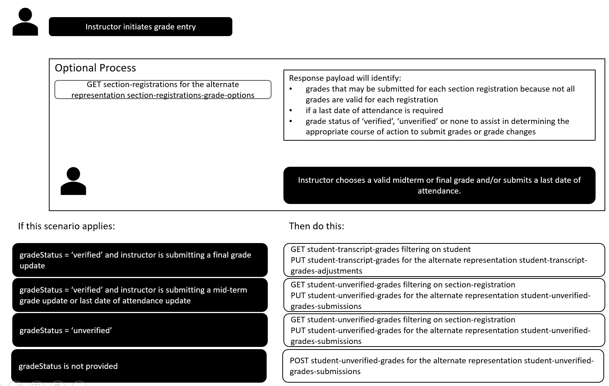
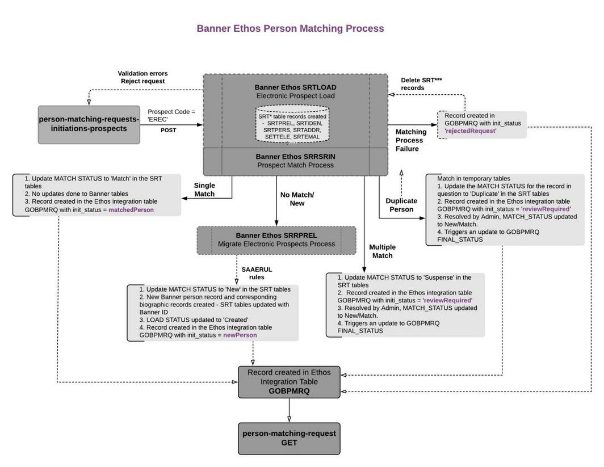
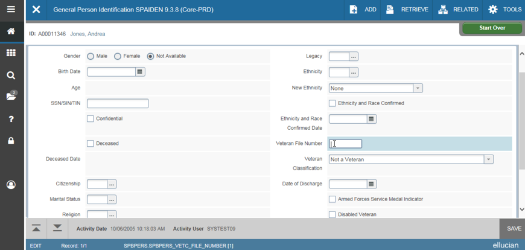
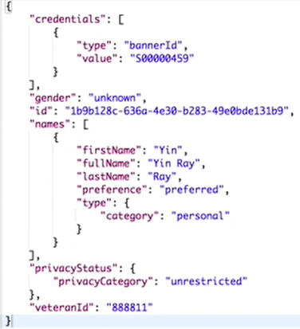
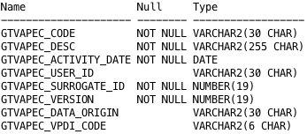
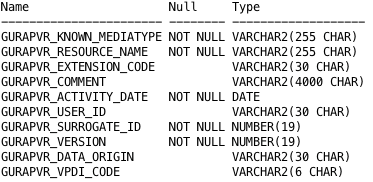
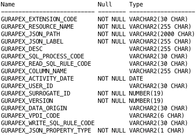
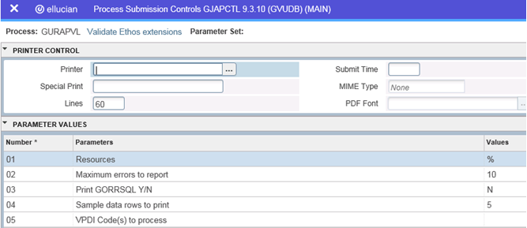
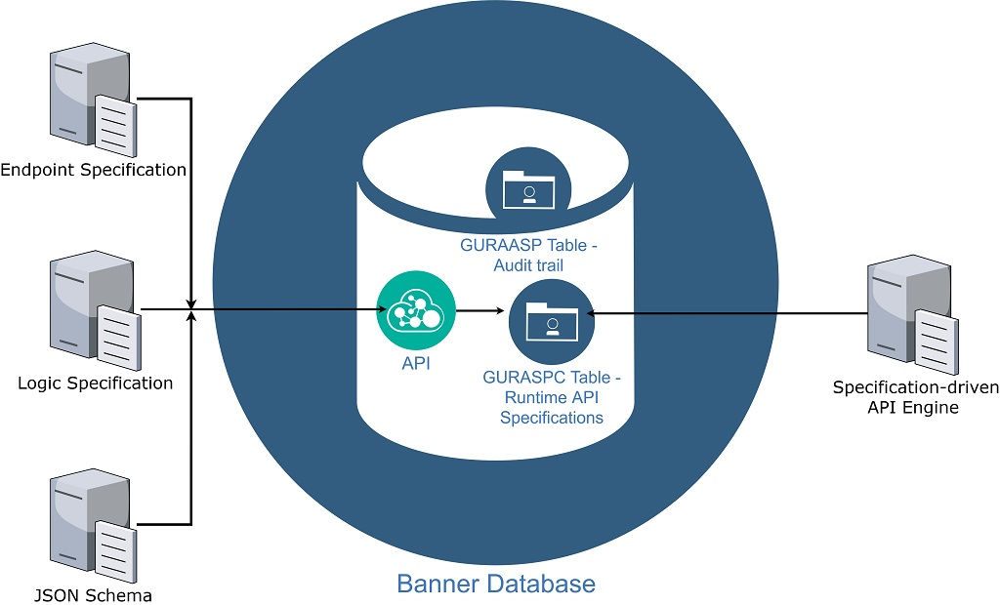

Use Banner Ethos APIs
APIs and RESTful APIs
An Application Programming Interface (API) is a specification that software components use as an interface to communicate. REpresentational State Transfer (REST) is a set of principles that define how Web standards such as HTTP and URIs communicate.
Banner RESTful APIs expose the services available in Banner applications as RESTful APIs. End users for these APIs are campus and partner developers. RESTful APIs enable integration across multiple Ellucian products and provide simple and powerful interfaces for interacting with Banner.
Developers and administrators use APIs to integrate Banner with external applications. APIs are accessible using simple HTTP methods such as GET, POST, PUT, and DELETE. APIs also provide the flexibility to specify the response data format either JSON or XML.
RESTful resources
A resource is an abstraction of a piece of information, such as a single data record or a collection of records. RESTful architectures expose resources.
RESTful resources provide the following benefits:
- Each resource has a unique URI.
- All resources are accessed with a uniform interface over HTTP. Any resource can be manipulated using standard HTTP methods such as GET, POST, PUT, or DELETE.
- Each resource supports multiple representations, JSON and XML.
Security overview
Submit APIs over HTTPS to ensure encryption of the request and response.
Deploy the war file to a server that has HTTPS and the URL for the API will be for that server and HTTPS. The web service definition for the API includes the pattern for HTTPS and for the server and port information.
APIs require submission with an authorization header. The authorization header ID must use a valid ID with proxy access to the banproxy user. Security for Banner APIs is similar to security for accessing Banner Administrative forms.
- Define Oracle Create Session privilege or the USR_DEFAULT_CONNECT Oracle role as the default role for the user.
- Define the BAN_DEFAULT_M Oracle role as granted to the user. It does not need to be a default role, as it is password protected.
- Define the BANPROXY access set in the Oracle/Banner Security Maintenance (GSASECR) page or the ALTER USER user name GRANT CONNECT THROUGH BANPROXY.
- Define access to the General Menu (GUAGMNU) Banner security object using the Oracle/Banner Security Maintenance Form (GSASECR). Grant access to 'GUAGMNU' directly to the user or assign the user to a security class that is granted access to 'GUAGMNU'. In addition, ensure that the GUAGMNU security object has the BAN_DEFAULT_M Oracle role.
- If Banner has been configured for MEP, the user must be authorized for any VPDI contexts that will be accessed from APIs.Note: In MEP-enabled Banner, institutions must include their MEP code (also known as VPDI_CODE) in the URL to access the API. The following is a sample URL with MEP code:
http://host:port/StudentApi/<MEP code>/api/<ResourceName>
As all customers must now install the Integration API, if you have not licensed Finance or HR, you should not provide access to the API user to the security classes/objects for the unlicensed APIs. See Security Objects and Classes for each set of domain APIs for the list of applicable Banner security objects.
Banner Setup Requirements
Run the sample client application
Download and run the sample client application to access the APIs.
Procedure
-
Download the banner_rest_ga_demo.zip file. To download the file, click Attachments
 , select the banner_rest_ga_demo.zip file, and then click Download.
, select the banner_rest_ga_demo.zip file, and then click Download.
Results
Standards and parameter support
Banner Ethos APIs support pagination parameters, headers, and filter/sort standards.
Pagination parameters
All APIs support limit and offset pagination parameters.
Headers
All APIs support the X-Total-Count and X-Media-Type headers.
Filter and sort standards
All APIs support standard named query criteria filtering and sorting standards.
Filter example: http://<server>:<port>/StudentApi/api/courses?criteria={"title" : "my course title"}
The GET list of resources returns the resources using a default sorting method. Refer to the source API documentation for details on the sort order and which additional fields support sort.
For details, see Ethos API Filtering.
Filter by multiple roles within roles array
Returns all persons records with role equals student and instructor and advisor and employee and alumni and vendor and prospective student.
GET /api/persons?criteria={"roles":[{"role":"student"},{"role":"instructor"},{"role":"employee"},{"role":"alumni"},{"role":"vendor"},{"role":"prospectiveStudent"},{"role":"advisor"}]} HTTP/1.1Names and Roles combination filter
Only one object at a time is supported for filtering. Filtering is done on only the current name records (SPRIDEN_CHANGE_IND = null). For example:
- Whose title equals
Mr. - Whose first name starts with
Kirk - Whose middle name contains
Milhouse - Whose last name prefix equals
Van - Whose last name starts with
Houten - Whose role includes
student,instructor,advisor,employee,alumni,vendor, orprospective student
GET /api/persons?criteria={"names":[{"title":"Mr.","firstName":"Kirk","middleName":"Milhouse","lastNamePrefix":"Van","lastName":"Houten"}],"roles":[{"role":"student"},{"role":"instructor"},{"role":"employee"},{"role":"alumni"},{"role":"vendor"},{"role":"prospectiveStudent"},{"role":"advisor"}]} HTTP/1.1Ethos API Filtering
Banner Ethos APIs support request-time filtering that allows calling systems to retrieve a subset of resources based on property values.
Filtering applies when an API is called and determines which resource instances are returned, not how data is secured or masked.
Banner Ethos APIs support the following filtering approaches:
- Query string filters
- Query string named queries
- QAPI (query by HTTP POST)
Filtering behavior is defined by the Ellucian Ethos Data Model and is consistent across authoritative sources.
Basic and advanced filtering standards
Ellucian Ethos filtering standards are divided into:
- Basic filter standards are required behavior that all Banner Ethos APIs must support when filtering is implemented.
- Advanced filter standards are optional behavior that APIs might support.
If an API supports any optional filtering behavior, that support must be documented in the API’s product documentation.
For more information about filtering content by using Banner Admin pages, see Filter content.
Basic filter standards (required)
When request filtering is supported, the API must comply with the following:
- The authoritative source must support all published filters for the resource.
- The query parameter name must be criteria.
- The value for criteria must be a schema-validated JSON fragment.
- Multiple properties in criteria are interpreted using AND conditional logic.
- Filterable properties must appear as JSON properties in the resource.
- Named query parameters are not resource properties.
- Invalid, unexpected, or unsupported parameters must result in HTTP 400 (Bad Request) error message.
| Query string filters | Banner Ethos APIs support ad-hoc filtering by using HTTP GET and the criteria query parameter. Requests that include filtering must URL-encode the query string because the JSON fragment contains reserved characters defined by RFC 3986. For example (URL-encoded): |
| Equality filtering | Equality filtering matches resources in which a property equals the specified value. For example: Multiple properties create AND conditional logic as follows: Note: How equality is evaluated can vary by data type.
|
| Querying array and embedded properties | When you filter on array properties, APIs must return resources that contain at least the specified values – regardless of order. When you filter on embedded objects, the embedded document must match exactly. For more information, see Role of the data model. |
| Named queries | A named query is a predefined query exposed by an API to support complex filtering without requiring ad-hoc query construction. Named queries:
For example: |
| Invalid query parameters | Properties included in a criteria filter must be supported by the API. If unsupported properties are included, the API returns an HTTP 400 (Bad Request) error message. For details, see Invalid filter and unexpected query parameter error codes. |
| QAPI (Query by POST) | A QAPI allows querying Ellucian Ethos resources by using the HTTP POST method. Common use cases include the following:
|
| Request requirements | The request body must be valid JSON and must be an array. Additionally, each object represents a query and property values must be arrays. |
| Response behavior | The response payload must be a JSON array. Additionally, paging is not supported for QAPI responses. Requests exceeding supported limits return an HTTP 413 (Request Entity Too Large) error message. |
| Query specification requirements |
Each Ellucian Ethos Data Model must define the following information:
While implementations may vary, query semantics and interfaces must remain consistent across authoritative sources. |
Supported filterable properties are defined by each Data Model. For details, see Standards and parameter support.
Advanced optional filter standards
$gt,$gte$lt,$lte$ne$or
For example:
{"$or":[{"qty":{"$gt":10}},{"qty":{"$lt":20}}]}Invalid filter and unexpected query parameter error codes
Error messages are returned in the API response when unsupported parameters are passed in the filter request.
For more information on filtering standards, see API Filtering.
| Scenario | Examples | HTTP Codes | API response and error message |
|---|---|---|---|
| The query parameter is not a valid value. Any value other than 'criteria, 'limit', or 'offset'. | api/student-transcript-grade-changes?filter={“student”: “56328fde-3d4d-43a5-bc88-459ad1290148”} | 400 Bad request | Error message: Unexpected query parameters [ filter ] |
| Filter on a property that is part of schema but the filter is not supported | api/student-financial-aid-academic-progress-statuses?criteria={“effectiveOn”:”2010-01-01”} | 400 Bad request | Error message: Filter on [ effectiveOn ] not supported |
| Filter request with a valid API property but the property is not part of filter schema | api/courses?criteria={“term”:{“id”:”56328fde-3d4d-43a5-bc88-459ad1290148”}} | 400 Bad request | Error message: Invalid filter property [ term ] |
| Filter on a property that is not part of the schema | api/courses?criteria={“term”:{“id”:”56328fde-3d4d-43a5-bc88-459ad1290148”}} | 400 Bad request | Error message: Invalid filter property [ term ] |
| Filter value provided is of different data type than expected | api/sections?criteria={“number”:”20”} | 400 Bad request | Error message: Invalid filter value [ number ] |
| Filter value provided for a property of type “date” has wrong date format | api/sections?criteria={“startOn”:”2015 August 29”} | 400 Bad request | Error message: Invalid date format [ startOn ] |
| Empty filter value sent for a Banner required property | api/courses?criteria={“subject”: {“id”:” “}} | 400 Bad request | Error message: Filter value is required |
| Empty filter value sent for properties that are optional in Banner | api/instructional-events?criteria={“room”:” “} | 200 OK | Returns empty array in response |
| Filter value is sent but there are no records for the value sent | api/sections?criteria={“site”:”abcd”} | 200 OK | Returns empty array in response |
| Invalid enumeration. Valid property associated with an enumeration however value is not a member | api/institution-jobs?criteria={“status”: “done”} | 400 Bad request | Error message: Invalid enumeration value for [status] |
| Filter is on an enumeration that is valid, but not supported by Banner | api/institution-jobs?criteria={“status”: “done”} | 400 Bad request | Error message: [done] enumeration value for [status] is not supported |
| Multiple search criteria that includes named query and filter combination | api/sections?criteria={“keywordSearch”:”History”}&criteria={“status”:”pending”} | 400 Bad request | Cannot provide multiple filter queries in a single request |
| API does not support any filters | api/financial-aid-academic-progress-statuses?criteria={“status”:{“id”:”3be857ff-632e-4257-a9cb-44176ba986b6”}} | 400 Bad Request | Error message: Unexpected query parameters [ criteria] |
| Filter on a property of type array - one of the values passed is not valid | api/sections?criteria={“academicLevels”:[{“id”:”43502105-93f2-4aba-a600-2f69de0d6a43”},{“id”:”123-93f2”}]} | 200 OK | Returns empty array in response |
| If a filter request sent with more values than allowed for an array property in Banner | api/instructional-events?criteria={“locations”:[{“room”:”43502105-93f2-4aba-a600-2f69de0d6a43”}, {“room”:”76502105-93f2-4aba-a600-2f69de0d6a43”}]} | 200 OK | Returns empty array in response |
| If filter on a property that is a parity API | api/academic-programs?academicCatalog={“academicCatalog”:{“id”:”3be857ff-632e-4257-a9cb-44176ba986o5”}} | 200 OK | Returns empty array in response |
| Invalid operator sent for a filter on date-time filter property |
/api/admission-decisions?criteria={“decidedOn”: {“$GTE”:”2017-01-01T04:35:30Z”}}, /api/admission-decisions?criteria={“decidedOn”: {“$LTE”:”2017-01-01T04:35:30Z”}} |
400 Bad request | Error message: Invalid filter operator |
| Request for filter on date-time property sent with unsupported operator |
/api/admission-decisions?criteria={“decidedOn”: {“$gt”:”2017-01-01T04:35:30Z”}}, /api/admission-decisions?criteria={“decidedOn”: {“$lt”:”2017-01-01T04:35:30Z”}} |
400 Bad request | Error message: Unsupported filter operator |
| Request for filter on date-time property sent with only date value | /api/admission-decisions?criteria={“decidedOn”: {“$lte”:”2017-01-01”}} | 400 Bad Request | Error message: Invalid date format [decidedOn] |
Administrative APIs
Use these APIs to perform basic operations such as retrieving the current version of the deployed API application, getting the availability of the application, getting a list of resources, and for installation checks.
About
About Integration API
Retrieves the current version details of the Integration API application deployed.
URI
GET IntegrationApi/api/about HTTP/1.1Paging N/A
JSON version
| Header | Value |
|---|---|
| Accept | application/json |
URL parameters N/A
XML version
| Header | Value |
|---|---|
| Accept | application/xml |
URL parameters N/A
About Student API
Retrieves the current version details of the Student API application deployed.
URI
GET StudentApi/api/about HTTP/1.1Paging N/A
JSON version
| Header | Value |
|---|---|
| Accept | application/json |
URL parameters N/A
XML version
| Header | Value |
|---|---|
| Accept | application/xml |
URL parameters N/A
Health
Health Integration API
Retrieves the health of the Integration API application deployed through the application load balancer.
URI
GET IntegrationApi/api/actuator/health HTTP/1.1Paging N/A
JSON version
| Header | Value |
|---|---|
| Accept | application/json |
URL parameters N/A
Health Student API
Retrieves the health of the Student API application deployed through the application load balancer.
URI
GET StudentApi/api/actuator/health HTTP/1.1Paging N/A
JSON version
| Header | Value |
|---|---|
| Accept | application/json |
URL parameters N/A
Health Check
Health Check Integration API
Retrieves the availability status of the Integration API application deployed.
URI
GET IntegrationApi/api/healthcheck HTTP/1.1Paging N/A
JSON version
| Header | Value |
|---|---|
| Accept | application/json |
URL parameters N/A
Health Check Student API
Retrieves the availability status of the Student API application deployed.
URI
GET StudentApi/api/healthcheck HTTP/1.1Paging N/A
JSON version
| Header | Value |
|---|---|
| Accept | application/json |
URL parameters N/A
Resources
Resources Integration API
Retrieves the list of Ethos resources that are exposed through the Integration API application.
URI
GET IntegrationApi/api/resources HTTP/1.1| Header | Value |
|---|---|
| Accept | application/json |
Resources Student API
Retrieves the list of Ethos resources that are exposed through the Student API application.
URI
GET StudentApi/api/resources HTTP/1.1| Header | Value |
|---|---|
| Accept | application/json |
Diagnostics
Use the diagnostics API to run the Ethos Diagnostics (GUREDIA) process and view the report.
The GUREDIA process is used to identify potential data issues with Ethos Integration. The process can be run using the Process Submission Controls (GJAPCTL) Banner Administrative page. The process can also be run from the diagnostics endpoint. Make a RESTful API call to start the process and to view the report.
POST api/diagnostics
Use the POST method and submit the GUREDIA process.
The GUREDIA process is run asynchronously through a POST method. Previous diagnostics checks are removed automatically. The API supports a request payload and a response body. Submit one or more process parameters in the options array of the request payload. See GUREDIA for information on process parameters.
URI
POST IntegrationApi/api/diagnostics| Header | Value |
|---|---|
| Content-Type | application/json |
| Accept | application/json |
Request payload example
{
"options" : [ "help", "bulk-setup" ]
}
A successful POST request returns a HTTP 201 Created success status response code.
GET api/diagnostics
Use the GET method to view the report of the Ethos Diagnostic checks.
Access the diagnostics API using a GET request and view the diagnostic report.
The resourceName parameter is the name of the resource best associated with the check. A resource name of diagnostics means that it is either an administrative message or the check does not apply to any particular resource.
The messageLevel parameter is the level of the message. Levels for resources are INFO, WARN, and ERROR. Levels for administrative messages are SCHEDULED (job is scheduled), STARTED (job started), FINISHED (job finished all checks), and ABORTED (job aborted because of a database exception).
URI
GET IntegrationApi/api/diagnostics| Name | Default |
|---|---|
| limit | 500 (upper limit is 1000) |
| offset | 0 |
| Header | Value |
|---|---|
| Accept | application/json |
Response
As the job is run asynchronously, results are written as the job is running. The job is completed when the last entry contains a resourceName of diagnostics and a messageLevel of FINISHED.
Set up the diagnostics API in Ethos Integration
Add the diagnostics API as a custom resource in Ethos Integration.
Procedure
-
On the Ethos Integration header bar, click the gear button
 and then select the environment where you want to perform this procedure.
and then select the environment where you want to perform this procedure.
- On the Ethos Integration header bar, click Applications.
- On the Applications page, locate and click the application name.
- On the Application Overview page, click the Owned Resources tab.
- Under Owned Resources, click Add Resources.
- In the Please Select An Option dialog box, select Add A Custom Resource and then click Next.
- In the Add Owned Resources (Custom) dialog box, enter diagnostics in the Resource Name field.
- Click Add.
What to do next
Run diagnostics by using your preferred API REST client
Use your preferred REST API client to send POST and GET requests on the diagnostics API, to run the Ethos Diagnostics (GUREDIA) process and to view the report.
Before you begin
Procedure
Results
Data Privacy Overview
Ellucian Banner Ethos APIs allow institutions to protect the information they consider private from unauthorized access.
- Provides the ability to protect Ellucian Ellucian Ethos resources from update operations (for example, create, update, and delete). The Banner security user can set up security classes to be assigned to Banner users, where the role for read-only resources is BAN_DEFAULT_Q. Assigning BAN_DEFAULT_Q to users instead of BAN_DEFAULT_M specifies those users as read-only users.
- Protects properties on Ellucian Ellucian Ethos resources from being retrieved or updated. This is referred to as content filtering. An authorized Banner functional user can define and implement security controls through the Banner administrative interface using the Data Display Mask Rules (GORDMSK) page. If a field is protected, you cannot update it or retrieve it, but you can set it on a create request.
Restricting CREATE, UPDATE, and DELETE access
User HTTP operations of POST, PUT, and DELETE can be restricted by assigning them to Banner security objects that have BAN_DEFAULT_Q instead of BAN_DEFAULT_M as the role.
An authenticated user with BAN_DEFAULT_Q for the Banner security object associated with an API receives an HTTP response code of '405 Method Not Allowed' when attempting a POST, PUT, or DELETE request. A read-only Banner security class can be created from those security objects to make read-only user assignments easier.
Protecting properties from retrieval or update
Content filtering impacts various HTTP requests.
Impact on List and Show (HTTP GET) operations
List and Show requests are always filtered.
An X-Content-Restricted header is returned in the response when a filter is applied to the response.
An HTTP response code of '405 Method Not Allowed' is returned when attempting a CREATE, UPDATE, or DELETE request for a resource that is read-only.
Impact on Create (HTTP POST) operations
Data Privacy has two impacts on Create (HTTP POST) operations.
- Create requests are not filtered.
- Create requests are allowed to pass through as-is.
Impact rationale is that the request is for the entity creation for which the creator has all the necessary data. Unlike a GET or PUT operation, the application initiating the create owns all the data at creation time. However, after the data is created, subsequent GET operations returns filtered data as ownership was given to the authoritative system when the data is created.
Impact on Update (HTTP PUT) operations
If the request content for an update request is filtered, the update request is rejected with an HTTP response code of 400 (Bad Request).
The generated error message: 'Cannot access protected field in the resource name resource'.
Impact on Delete (HTTP DELETE) operations
Delete requests are not subject to filtering as the only request data that is required are key fields.
Impact on event change notifications
The user designated on the Integration Configuration Settings (GORICCR) form as the EMS.API.USERNAME dynamically inherits all active field-patterns so that the most restricted content is returned.
This occurs because the event change notification contains the changed resource, so it must never provide filtered fields.
Data Privacy tasks
There are several tasks associated with Data Privacy.
Create READONLY security objects
Create read-only objects for users that require access to only a subset of the APIs.
Procedure
Verify access privilege by Banner user and security object
You can verify access privilege (READ and WRITE) for any Banner user and API security object.
Procedure
Filter content
Filter content using the Admin Banner pages.
Procedure
Data Display Mask Rules (GORDMSK) rule setup
GORDMSK rules are prioritized for each resource and field-pattern.
About this task
- A resource/field-pattern rule specified for one user is the highest priority and is used first.Note: You can have 15 rules specified for one column, that is 8 for individual users, 6 with business profiles, and one that has All Users checked.
- If there is no user specified for a given resource/field-pattern rule, then the group to which a user is assigned is next checked in priority order.
- The All Users check box is checked for a 'Y' value as a final check in the priority order.
After a prioritized rule is found, then the Visible check box is checked. When unchecked, it causes the field-pattern to be filtered. Unchecked acts as an indicator that the rule is active (filtering is applied) and when checked it indicates that the rule is inactive (filtering is not applied).
The primary key for GORDMSK consists of the combination of Object, Block, Item, and Sequence. The following rules apply.
Procedure
What to do next
The following additional rules apply:
- You specify the case-sensitive pluralized resource name in the Banner9 Object ID column. For example, section-registrations and persons.
- You specify the case-sensitive field name (or field-pattern) in the Banner9 Block ID column. For example, grade, addresses.@type.addressType==mailing, , credentials.@type==ssn, credentials.@type==sin, credentials.@type==taxIdentificationNumber.
- If the content being filtered is a list, the field-pattern is applied to all list entries.
- The field-pattern can be an individually named top-level field to be removed from the content. For example, grade and gender.
- To remove a field nested in another field, use a dotted notation. For example, credentials.value.
- You can conditionally remove a field using field==value notation. For example credentials.type==bannerUserName.Note: This removes only the type, not the value in credentials.
- You can remove an entire list entry if anything in that entry is modified by prefacing the entries first nested element with an @ character. For example, addresses.@type.addressType==billing and credentials.@type==bannerUserName. Note: This removes the complete type entry for bannerUserName.Important: If a field name has changed between resource versions, all names for that data piece must be specified. Filtering is based on field name only, not the field meaning, or from where in Banner the data originated.
-
If any fields are removed from the content, the following Content-Restricted Header is set in the response: X-Content-Restricted: partial
Filter example
Content filtering uses field patterns and resource representations to produce the filtered result.
Given the following field patterns:
gender
credentials.value
credentials.type==bannerId
addresses.@type.addressType==billing
Then given this representation of a person's resource:
{ "addresses": [
{ "address": { "id": "a5bbd23c" },
"type": {
"addressType": "billing",
"detail": { "id": "a712ab45" } } },
{ "address": { "id": "46b02987" },
"type": {
"addressType": "mailing",
"detail": { "id": "764676b7" } } }
],
"credentials": [
{ "type": "bannerUserName", "value": "jsmith" },
{ "type": "bannerId", "value": "HOF00724" }
],
"dateOfBirth": "1990-06-14",
"gender": "male",
"id": "861504f3",
"maritalStatus": {
"maritalCategory": "married",
"detail": { "id": "766faee9" }
},
"names": [
{ "firstName": "John",
"fullName": "John Smith",
"lastName": "Smith",
"preference": "preferred",
"type": { "category": "personal" } }
]
}The filtered result is as follows:
{ "addresses": [
{ "address": { "id": "46b0298" },
"type": {
"addressType": "mailing",
"detail": { "id": "764676b7" } } }
],
"credentials": [
{ "type": "bannerUserName" }
],
"dateOfBirth": "1990-06-14",
"id": "861504f3",
"maritalStatus": {
"maritalCategory": "married",
"detail": { "id": "766faee9" }
},
"names": [
{ "firstName": "John",
"fullName": "John Smith",
"lastName": "Smith",
"preference": "preferred",
"type": { "category": "personal" } }
]
}- The Gender field is removed because of the gender pattern
- All values are removed from the credentials list because of the
credentials.value pattern. - The Banner ID credentials entry is removed because of the
credentials.type==bannerId pattern. - The complete billing address is removed because of the
addresses.@type.addressType==billing pattern.
Verify Data Display Mask Rules (GORDMSK) rules
Verify the GORDMSK rules for any Banner user and API resource combination.
Procedure
Download JSON schema for Ellucian Ethos Data Model entities
Review the API documentation to determine the properties that can be filtered.
Procedure
Data Privacy Debugging
Use the checklist to debug Data Privacy issues.
- When testing data privacy through a REST client tool, you have to shutdown the tool to switch between users. This is required even if you have disabled caching.
- Use a fresh instance of the Chrome browser to run the test. If a Chrome window is already open, the prior credentials are cached and will show misleading results.
- Check the user ID that is configured for the EMA connection. The EMA user is automatically restricted to use all filters. This is the user specified for
goriccr_sqpr_code= 'EMS-ETHOS-INTEGRATION'andgoriccr_icsn_code='EMS.API.USERNAME'. That user will always be restricted. - An SQL can be run to display the filtering that should be taking place. That view is called
gvq_rest_filter_config_report.
Globally Unique Identifier (GUID)
A GUID is a unique 128 bit number represented by a string of 36 characters. You use GUIDS when there are multiple independent systems or when generating unique IDs.
For a comprehensive understanding of GUIDs and for information on the GUID generation process, see Generate Banner GUIDs on the Ellucian Documentation site and Article Number 000043988 - Understanding Ethos GUIDs in Banner Releases on the Ellucian Customer Center.
GUID tables
GUID table details for EEDM APIs.
| API Name | Table Name | Key Column | SQL Query |
|---|---|---|---|
| ABOUT | N/A | ||
| ACADEMIC-CATALOGS | STVTERM | STVTERM_CATALOG_GUID | select stvterm_catalog_guid from stvterm; |
| ACADEMIC-CREDENTIALS | STVDEGC STVDPLM |
GORGUID_GUID STVDPLM_GUID |
select gorguid_guid from gorguid where gorguid_ldm_name='academic-credentials' and gorguid_domain_key='degree code'; select stvdplm_guid from stvdplm; |
| ACADEMIC-DISCIPLINES | STVMAJR | STVMAJR_CODE || ^ || STVMAJR_TYPE | select gorguid_guid as guid, to_char(stvmajr_code || '^' || <enter your academic-disciplines type here>) as domain_key from gorguid,stvmajr where gorguid_ldm_name= 'academic-disciplines' and gorguid_domain_key= to_char(stvmajr_code || '^' || <enter your academic-disciplines type here>) and stvmajr_code = <enter your academic-disciplines code here>; |
| ACADEMIC-HONORS | STVHONR | STVHONR_CODE | select gorguid_guid from goru-id,stvhonr where gor-guid_ldm_name='institutional-honors' and gorguid_domain_key= stvhonr_code and stvhonr_code='<enter your code here>'; |
| STVHOND | STVHOND_CODE | select gorguid_guid from gor-guid,stvhond where gor-guid_ldm_name='departmental-honors' and gorguid_domain_key=stvhond_code and stvhond_code='<enter your code here>'; | |
| ACADEMIC-LEVELS | STVLEVL | STVLEVL_CODE | select gorguid_guid, stvlevl_code, stvlevl_desc from gorguid, stvlevl where stvlevl_code = gorguid_domain_key and gorguid_ldm_name = 'academic-levels' and stvlevl_code = '<enter your code here>'; |
| ACADEMIC-PERIOD-ENROLLMENT-STATUSES | STVESTS | STVESTS_CODE | select stvests_guid, stvests_code, stvests_desc from stvests where stvests_code = '<enter your enrollment status code here>'; |
| ACADEMIC-PERIODS V8 | SOBPTRM | SOBPTRM_TERM_CODE||'-^'||SOBPTRM_PTRM_CODE, GORGUID_GUID | select gorguid_guid, gorguid_domain_key, sobptrm_term_code, sobptrm_ptrm_code from gorguid, sobptrm where gorguid_ldm_name = 'subterm' and sobptrm_term_code = '&term' and sobptrm_ptrm_code = '&ptrm' and gorguid_domain_key = sobptrm_term_code||'-^'||sobptrm_ptrm_code; |
| ACADEMIC-PERIODS V8 | STVTERM | STVTERM_CODE, GORGUID_GUID | select gorguid_guid,stvterm_code from gorguid, stvterm where stvterm_code = gorguid_domain_key and gorguid_ldm_name = 'term' and stvterm_code = '<enter your code here>'; |
| ACADEMIC-PERIODS V8 | STVACYR | STVACYR_CODE, GORGUID_GUID | select gorguid_guid,stvacyr_code, stvacyr_desc from gorguid, stvacyr where stvacyr_code = gorguid_domain_key and gorguid_ldm_name = 'year' and stvacyr_code = '<enter your code here>'; |
| ACADEMIC-PERIODS V16 | SOBPTRM | SOBPTRM_TERM_CODE||'-^'||SOBPTRM_PTRM_CODE, GORGUID_GUID | select gorguid_guid, gorguid_domain_key, sobptrm_term_code, sobptrm_ptrm_code from gorguid, sobptrm where gorguid_ldm_name = 'subterm' and sobptrm_term_code = '&term' and sobptrm_ptrm_code = '&ptrm' and gorguid_domain_key = sobptrm_term_code||'-^'||sobptrm_ptrm_code; |
| ACADEMIC-PERIODS V16 | STVTERM | STVTERM_CODE, GORGUID_GUID | select gorguid_guid,stvterm_code from gorguid, stvterm where stvterm_code = gorguid_domain_key and gorguid_ldm_name = 'term' and stvterm_code = '<enter your code here>'; |
| ACADEMIC-PERIODS V16 | STVACYR | STVACYR_CODE, GORGUID_GUID | select gorguid_guid,stvacyr_code, stvacyr_desc from gorguid, stvacyr where stvacyr_code = gorguid_domain_key and gorguid_ldm_name = 'year' and stvacyr_code = '<enter your code here>'; |
| ACADEMIC-PERIODS V16 | SOBODTE_GUID | select sobodte_guid from sobodte; | |
| ACADEMIC-PROGRAMS V7 | SMRPRLE | SMRPRLE_GUID |
select sobcurr_guid from sobcurr; select smrprle_guid from smrprle; select gorguid_guid from gorguid where gorguid_ldm_name='academic-programs'; |
| ACADEMIC-PROGRAMS V15.0.0 | SMRPRLE | SMRPRLE_GUID | |
| ACADEMIC-PROGRAMS V15.1.0 | SOBCURR, SMRPRLE | SMRPRLE_GUID, SOBCURR_GUID, GOIRGUID_GUID | |
| ACADEMIC-STANDINGS | STVASTD | STVASTD_CODE | select stvastd_guid, stvastd_code, stvastd_desc from stvastd where stvastd_code = '<enter your academic standing code here>'; |
| ACCOUNTING-CODES | TBBDETC | TBBDETC_DETAIL_CODE | select gorguid_guid, tbbdetc_detail_code, tbbdetc_desc from gorguid, tbbdetc where tbbdetc_detail_code = gorguid_domain_key and gorguid_ldm_name = 'accounting-codes' and tbbdetc_detail_code = '<enter your code here>'; |
| ACCOUNTING-CODE-CATEGORIES | TTVDCAT | N/A | select ttvdcat_guid from ttvdcat; |
| ACCOUNTING-STRINGS | N/A | ||
| ACCOUNTING-STRING-COMPONENTS | FTVSDAT | select ftvsdat_guid from ftvsdat where ftvsdat_sdat_code_entity = 'ethos'and ftvsdat_sdat_code_opt_1 = 'actstrng' and ftvsdat_sdat_code_opt_2 = 'cmponent' and ftvsdat_eff_date <= sysdate and ftvsdat_status_ind = 'a' and nvl (ftvsdat_nchg_date, sysdate + 1) > sysdate and nvl (ftvsdat_term_date, sysdate + 1) >= sysdate and ftvsdat_code_level is null and ftvsdat_coas_code is null; | |
| ACCOUNTING-STRING-COMPONENT-VALUES |
FTVCOAS FTVACCI FTVFUND FTVORGN FTVPROG FTVACTV FTVLOCN FTVPROJ FTVRUCL GXVBANK FTVFTYP FTVATYP |
FTVCOAS_GUID FTVACCI_GUID FTVFUND_GUID FTVORGN_GUID FTVPROG_GUID FTVACTV_GUID FTVLOCN_GUID FTVPROJ_GUID FTVRUCL_GUID GXVBANK_GUID FTVFTYP_GUID FTVATYP_GUID |
select component_value_guid from fvq_ascv_ftyp_atyp where rownum=1; |
|
select ftvlocn_guid from ftvlocn where ftvlocn_status_ind = 'a' and ftvlocn_eff_date <= sysdate and ftvlocn_nchg_date > sysdate and nvl(ftvlocn_term_date, sysdate + 1) >=sysdate); select ftvproj_guid from ftvproj where ftvproj_eff_date <= sysdate and nvl(ftvproj_term_date, sysdate + 1) >=sysdate); select ftvrucl_guid from ftvrucl where ftvrucl_status_ind = 'a' and ftvrucl_eff_date <= sysdate and nvl(ftvrucl_nchg_date, sysdate + 1) >sysdate and nvl(ftvrucl_term_date, sysdate + 1) >= sysdate)select gxvbank_guid from gxvbank where gxvbank_status_ind = 'a' and gxvbank_eff_date <= sysdate and gxvbank_nchg_date > sysdate and nvl(gxvbank_term_date, sysdate + 1) >=sysdate); |
|||
| ACCOUNT-FUNDS-AVAILABLE | N/A | ||
| ACCOUNTS-PAYABLE-SOURCES | GXVBANK | GXVBANK_BANK_CODE | select gxvbank_guid, gxvbank_bank_code, gxvbank_acct_name from gxvbank where gxvbank_bank_code = '<enter account payable source code here>'; |
| ACCOUNTING-STRING-FORMATS | FTVSDAT |
select ftvsdat_guid from ftvsdat where ftvsdat_sdat_code_entity = 'ethos' and ftvsdat_sdat_code_attr = 'delimiter'and ftvsdat_sdat_code_opt_1 = 'actstrng' and ftvsdat_sdat_code_opt_2 is null and ftvsdat_eff_date <= sysdate and ftvsdat_status_ind = 'a' and nvl (ftvsdat_nchg_date, sysdate + 1) >sysdate and nvl (ftvsdat_term_date, sysdate + 1) >= sysdate and ftvsdat_code_level is null and ftvsdat_coas_code is null; |
|
| ACCOUNTS-PAYABLE-INVOICES | FVQ_FABINVH_ INVOICE | select fabinvh_guid from fvq_fabinvh_invoice; | |
|
ADDRESS-TYPES (LOCATION-TYPES API has been deprecated as of v4) |
STVATYP | STVATYP_CODE | select gorguid_guid as guid , stvatyp_code as domain_key from gorguid,stvatyp where gorguid_ldm_name='location-types' and gorguid_domain_key=stvatyp_code and stvatyp_code = <enter your location-types code here>; |
| ADDRESSES | SOBSBGI | SOBSBGI_SBGI_CODE | select sobsbgi_guid from sobsbgi where sobsbgi_sbgi_code = '<enter your institution code here>'; |
| SPRADDR | N/A | select spraddr_guid from spraddr where spraddr_pidm = '<enter the pidm here>' and spraddr_atyp_code = '<enter the address type code here>'; | |
| STVCOLL | SPRIDEN_PIDM | select stvcoll_guid from stvcoll where stvcoll_code = '<enter your college code here>'; | |
| ADMINISTRATIVE-INSTRUCTIONAL-METHODS | STVASIME | STVASIME_GUID | select stvasime_guid from stvasime where stvasime_code = '<enter administrative instructional method code here>'; |
| ADMINISTRATIVE-PERIODS | STVTERM | STVTERM_GUID | select stvterm_guid from stvterm where stvterm_code = '<enter the term code here>'; |
| ADMISSION-APPLICATION-SOURCES | STVSBGI | STVSBGI_ADM_APPLICATION_GUID | select stvsbgi_adm_application_guid from stvsbgi; |
| ADMISSION-APPLICATIONS | SARADAP | select saradap_guid from saradap; | |
| ADMISSION-APPLICATION-STATUS-TYPES | STVAPST | select stvapst_guid from stvapst; | |
| ADMISSION-APPLICATION-SUPPORTING-ITEMS | SARCHKL | select sarchkl_guid from sarchkl | |
| ADMISSION-APPLICATION-SUPPORTING-ITEM-STATUSES | STVCKST | select stvckst_guid from stvckst; | |
| ADMISSION-APPLICATION-SUPPORTING-ITEM-TYPES | STVADMR | select stvadmr_guid from stva; | |
| ADMISSION-APPLICATION-TYPES | STVADMT | select stvadmt_guid from stvadmt; | |
| ADMISSION-APPLICATION-WITHDRAWAL-REASONS | STVWRSN | select stvwrsn_guid from stvwrsn; | |
| ADMISSION-DECISIONS | SARAPPD | SARAPPD_GUID | select sarappd_guid from sarappd where rownum=1; |
| ADMISSION-DECISION-TYPES | STVAPDC | select stvapdc_guid from stvapdc; | |
| ADMISSION-POPULATIONS | STVSTYP | SVQ_ADM_POPULATION | select stvstyp_admn_guid from svq_adm_population; |
| ADVISOR-TYPES | STVADVR | select stvadvr_guid from svq_advisor_type; | |
| ALTERNATIVE-CREDENTIAL-TYPES | GTVADID | GTVADID_GUID | select gtvadid_guid from gtvadid; Note: The credential type codes (GTVADID_CODE) mapped to API configuration settings ‘CREDENTIALS.COLLEAGUE_ID’, ‘CREDENTIALS.COLLEAGUE_USERNAME’ and ‘CREDENTIALS.ELEVATE_ID’ are not published in this validation API.
|
| APTITUDE-ASSESSMENT-SOURCES | STVTSRC | STVTSRC_GUID | select stvtsrc_guid from stvtsrc; |
| APTITUDE-ASSESSMENTS | STVTESC | select stvtesc_guid from svq_stvtesc_aptitude_assess; | |
| ASSESSMENT-PERCENTILE-TYPES | STVTSPT | select stvtspt_guid from stvtspt; | |
| ASSESSMENT-SPECIAL-CIRCUMSTANCES | STVTEAC | STVTEAC_GUID | select stvteac_guid from stvteac; |
| BARGAINING-UNITS | PTVBARG | PTVBARG_CODE | select ptvbarg_guid, ptvbarg_code from ptvbarg where ptvbarg_code = '<enter bargaining unit code here>'; |
| BENEFICIARY-PREFERENCE-TYPES | GORGUID | select gorguid_guid from gorguid where gorguid_ldm_name='beneficiary-preference-types'; | |
| BLANKET-PURCHASE-ORDERS | FPBPOHD | FPBPOHD_GUID | select po_guid fromfvq_blanket_poheader where rownum=1; |
| BUDGET-CODES | FTVOBUD | FTVOBUD_GUID | select ftvobud_guid from ftvobud; |
| BUDGET-PHASE-LINE-ITEMS | FBBBLIN | FBBBLIN_GUID | select fbbblin_guid from fbbblin; |
| BUDGET-PHASES | FTVOBPH | FTVOBPH_GUID | select ftvobph_guid from ftvobph; |
| BUILDINGS | SLBBLDG | SLBBLDG_BLDG_CODE | select gorguid_guid, slbbldg_bldg_code from gorguid, slbbldg where slbbldg_bldg_code = gorguid_domain_key and gorguid_ldm_name = 'buildings' and slbbldg_bldg_code = = '<enter your code here>'; |
| BUYERS | FTVBUYR | select ftvbuyr_guid from fvq_buyers; | |
| CA-CALGRANT-AWARD-STATUS | RCRCGID | RCRCGID_GUID | select RCRCGID_GUID from RCRCGID; |
| CA-CALGRANT-EXPORT-HISTORY | |||
| CA-CALGRANT-ROSTER | |||
| CA-CALGRANT-VALIDATION-VALUES | GORSEID | GORSEID_GUID | select GORSEID_GUID from GORSEID; |
| CAMPUS-ORGANIZATION-TYPES | STVACTP | STVACTP_CODE | select gorguid_guid, stvactp_code, stvactp_desc from gorguid,stvactp where stvactp_code = gorguid_domain_key and gorguid_ldm_name = 'activity-type' and stvactp_code = '<enter your code here>'; |
| CAMPUS-ORGANIZATIONS | STVACTC | STVACTC_CODE | select gorguid_guid, stvactc_code, stvactc_desc from gorguid,stvactc where stvactc_code = gorguid_domain_key and gorguid_ldm_name = 'student-activity' and stvactc_code = '<enter your code here>'; |
| CAMPUS-ORGANIZATIONS | STVCOMT | STVCOMT_CODE | select gorguid_guid, stvcomt_code, stvcomt_desc from gorguid,stvcomt where stvcomt_code = gorguid_domain_key and gorguid_ldm_name = 'committee-type' and stvcomt_code = '<enter your code here>'; |
| CAMPUS-INVOLVEMENT-ROLES | STVCOMF | STVCOMF_CODE | select gorguid_guid, stvcomf_code, stvcomf_desc from gorguid,stvcomf where stvcomf_code = gorguid_domain_key and gorguid_ldm_name = 'committee-function' and stvcomf_code = '<enter your code here>'; |
| CAMPUS-INVOLVEMENTS |
SGRSACT SGRSPRT SHRCOMM |
N/A |
select sgrsact_guid from sgrsact where sgrsact_pidm = '<enter the student pidm>' and sgrsact_actc_code = '<enter the student activity code>' and sgrsact_term_code = '<enter the term code>'; select sgrsprt_guid from sgrsprt where sgrsprt_pidm = '<enter the student pidm>' and sgrsprt_actc_code = '<enter the student activity code>' and sgrsprt_term_code = '<enter the term code>'; select shrcomm_guid from shrcomm where shrcomm_pidm = '<enter the student pidm>' and shrcomm_comt_code = '<enter the committee type code>' and shrcomm_from_date = '<enter the committee start date>' and shrcomm_end_date = '<enter the committee end date>'; |
| CHARGE-ASSESSMENT-METHODS | STVCHAME | STVCHAME_GUID | select stvchame_guid from stvchame where stvchame_code='<enter the charge assessment method code here>'; |
| CIP-CODES | STVCIPC | STVCIPC_GUID | select stvcipc_guid from stvcipc |
| CITIZENSHIP-STATUSES | GORGUID | GORGUID_GUID | select gorguid_guid from stvcitz,gorguid where gorguid_domain_key=stvcitz_code and gorguid_ldm_name = 'citizenship-statuses' |
| COMMENTS | SVQ_SPRCMNT_SORBCMT | SUBJECT_MATTER_GUID | select comment_guid from svq_sprcmnt_sorbcmt; |
| COMMENT-SUBJECT-AREA | STVCMTT | select stvcmtt_guid from svq_stvcmtt_comment_type; | |
| COMMERCE-TAX-CODE-RATES | FTVTRAT | FTVTRAT_GUID | select ftvtrat_guid from ftvtrat; |
| COMMERCE-TAX-CODES | FTVTGRP | FTVTGRP_TGRP_CODE | select ptrbrea_guid, ftvtgrp_tgrp_code, ftvtgrp_title from ftvtgrp where ftvtgrp_tgrp_code = '<enter commerce tax code here>'; |
| COMMODITY-CODES | FTVCOMM | FTVCOMM_CODE |
select ftvcomm_guid, ftvcomm_code, ftvcomm_desc from ftvcomm where ftvcomm_code = '<enter commodity code here>'; |
| COMMODITY-UNIT-TYPES | FTVUOMS | FTVUOMS_CODE | select ftvuoms_guid, ftvuoms_code, ftvuoms_desc from ftvuoms where ftvuoms_code = '<enter commodity unit type code here>'; |
| CONFIGURATION-SETTINGS | GORICCR | GORICCR_GUID | select goriccr_guid from goriccr; |
| CONTACT-TYPES | STVCTYP | STVCTYP_GUID | select STVCTYP_GUID from STVCTYP; |
| CONTRIBUTION-PAYROLL-DEDUCTIONS |
PVQ_PHRDEDN_ CONTRIBUTION |
ARRANGEMENT_GUID | select contribution_guid from pvq_phrdedn_contribution; |
| COST-CALCULATION-METHODS | GORGUID | select gorguid_guid from gorguid where gorguid_ldm_name='cost-calculation-methods'; | |
| COUNTRIES | STVNATN | STVNATN_GUID | select stvnatn_guid from stvnatn; |
| COUNTRY-ISO-CODES | GTVSCOD | GTVSCOD_GUID | select gtvscod_guid from gtvscod; |
| COURSE-CATEGORIES | STVATTR | STVATTR_GUID | select stvattr_guid from stvattr where stvattr_code='<enter the course attribute code here>'; |
| COURSE-STATUSES | STVCSTA | STVCSTA_GUID | select stvcsta_guid from stvcsta where stvcsta_code='<enter the course status code here>'; |
| COURSE-TITLE-TYPES | STVCTTPE | STVCTTPE_GUID | select stvcttpe_guid from stvcttpe where stvcttpe_code='<enter the course title type code here>'; |
| COURSES | SCBCRSE | SCBCRSE_SUBJ_CODE, SCBCRSE_CRSE_NUMB, SCBCRSE_TERM_CODE_ EFF |
select scbcgid_guid,scbcgid_subj_code,scbcgid_crse_numb,scbcgid_term_code_eff from scbcgid a where scbcgid_subj_code='<enter your subject code here>'and scbcgid_crse_numb='<enter your course numberhere>' and scbcgid_term_code_eff=(selectmax(scbcgid_term_code_eff) from scbcgid b where a.scbcgid_subj_code=b.scbcgid_subj_code and a.scbcgid_crse_numb=b.scbcgid_crse_numb and scbcgid_term_code_eff<='<enter your term code here>'); |
|
Note: The courses V6 API links to the educational-institution-units V6 API which provides college, departments and division information for a course. This information is now displayed in the ‘owningInstitutionUnits’ object of the response.
|
|||
| CREDIT-CATEGORIES | N/A | N/A | select gorguid_guid,gorguid_domain_key from gorguid where gorguid_ldm_name = 'credit-categories' and gorguid_domain_surrogate_id = '<enter 1 or 2>'; |
| CURRENCIES | GTVCURR | GTVCURR_GUID | select gtvcurr_guid from gtvcurr; |
| CURRENCY-ISO-CODES | GTVSCOD | GTVSCOD_GUID | select gtvscod_guid from gtvscod; |
| DEDUCTION-CATEGORIES | PTVBDTY | select ptvbdty_guid from ptvbdty; | |
| DEDUCTION-TYPES | PVQ_PTRBDCA_GUID | select ptrbdca_guid from pvq_ptrbdca_guid; | |
| DEFAULT-SETTINGS | GORICCR | GORICCR_GUID | select goriccr_guid from goriccr; |
| DFE-ADMISSION-DECISIONS | SARAPPD | SARAPPD_DFE_ADMN_DECN_GUID | select sarappd_dfe_admn_decn_guid from sarappd; |
| EARNING-TYPES | PTREARN | PTREARN_GUID | select ptrearn_guid from ptrearn; |
| EDUCATIONAL-GOALS | STVEGOL | STVEGOL_GUID | select stvegol_guid from stvegol; |
| EDUCATIONAL-INSTITUTIONS | GORGUID | GUBINST_KEY | select gorguid_guid from gorguid,gubinst where gorguid_ldm_name='institutional-description' and gorguid_domain_key=gubinst_key and gubinst_key='<enter your key here>'; |
| GORGUID | STVSBGI_CODE | select gorguid_guid from gorguid,stvsbgi where gorguid_ldm_name='src-background-inst' and gorguid_domain_key=stvsbgi_code and stvsbgi_code='<enter your code here>'; | |
| EDUCATIONAL-INSTITUTION-UNITS | STVCOLL | STVCOLL_CODE | select gorguid_guid,stvcoll_code, stvcoll_desc from gorguid, stvcoll where stvcoll_code = gorguid_domain_key and gorguid_ldm_name = ‘colleges' and stvcoll_code = '<enter your code here>'; |
| EDUCATIONAL-INSTITUTION-UNITS | STVDEPT | STVDEPT_CODE | select gorguid_guid, stvdept_code, stvdept_desc from gorguid, stvdept where stvdept_code = gorguid_domain_key and gorguid_ldm_name = ‘departments’ and stvdept_code = '<enter your code here>'; |
| EDUCATIONAL-INSTITUTION-UNITS | STVDIVS | STVDIVS_CODE | select gorguid_guid, stvdivs_code, stvdivs_desc from gorguid, stvdivs where stvdivs_code = gorguid_domain_key and gorguid_ldm_name = ‘divisions’ and stvdivs_code = '<enter your code here>'; |
| EMAIL-TYPES | GTVEMAL | GTVEMAL_CODE |
select gorguid_guid as guid, gtvemal_code as domain_key from gorguid,gtvemal where gorguid_ldm_name='email-types' and gorguid_domain_key=gtvemal_code and gtvemal_code = <enter your email-types code here>; |
| EMERGENCY-CONTACT-TYPES | GTVEMCTE | GTVEMCTE_GUID | select gtvemcte_guid from gtvemcte; |
| EMPLOYEE-LEAVE-PLANS | PERLEAV | select perleav_guid from perleav; | |
| EMPLOYEE-LEAVE-TRANSACTIONS | PHRACCR | N/A | select phraccr_guid from phraccr; |
| EMPLOYEES | PEBEMPL | select pebempl_guid from pebempl; | |
| EMPLOYMENT-CLASSIFICATIONS |
PVQ_PTRECLS_ NTRPCLS_GUID |
select emp_classfn_guid from emp_classfn_guid; |
|
| EMPLOYMENT-DEPARTMENTS | GTVORID | GTVORID_DEPT_GUID | select gtvorid_dept_guid from gtvorid; |
| EMPLOYMENT-FREQUENCIES | GORGUID | select gorguid_guid from gorguid where gorguid_ldm_name='employment-frequencies'; | |
| EMPLOYMENT-LEAVE-OF-ABSENCE-REASONS | PTRLREA | PTRLREA_CODE | select ptrlrea_guid, ptrlrea_code, ptrlrea_desc from ptrlrea where ptrlrea_code = '<enter employment leave of absence reasons code here>'; |
| EMPLOYMENT-ORGANIZATIONS | GTVORID | GTVORID_ORGN_GUID | select gtvorid_orgn_guid from gtvorid; |
| EMPLOYMENT-PERFORMANCE-REVIEWS | PERREVW | PVQ_EMP_PERF_REVIEW | select perrevw_guid from pvq_emp_perf_review; |
| EMPLOYMENT-PERFORMANCE-REVIEW-TYPES | PTVREVT | select ptvrevt_guid from pvq_ptvrevt_emp_perf_rev_type; | |
| EMPLOYMENT-PROFICIENCIES | PTRSKIL, PTRCERT, and PTREXAM | select empl_profcns_guid from pvq_emp_proficiencies; | |
| EMPLOYMENT-PROFICIENCY-LEVELS | PTRSKLV | PVQ_EMP_PROFICIENCY_ LEVEL | select ptrsklv_guid from pvq_emp_proficiency_level; |
| EMPLOYMENT-TERMINATION-REASONS | PTRTREA | PTRTREA_CODE | select ptrtrea_guid, ptrtrea_code, ptrtrea_desc from ptrtrea where ptrtrea_code = '<enter employment termination reasons code here>'; |
| ENROLLMENT-STATUSES | STVCACT | STVCACT_CODE | select gorguid_guid,sobcact_cact_code,stvcact_desc from gorguid, sobcact,stvcact where gorguid_domain_key = stvcact_code and gorguid_ldm_name = 'enrollment-statuses' and sobcact_cact_code = stvcact_code and sobcact_active_ind = 'y' and stvcact_code = '<enter your code here>'; |
| ETHNICITIES | GORGUID | select gorguid_domain_key from gorguid where gorguid_ldm_name='ethnicities-us'; Note: The new query is added to implement V3 and V4 versions of ethnicities API. This returns the new Hispanic or Latino, Not Hispanic or Latino and None records
|
|
| ETHNICITIES | STVETHN | GORGUID_GUID | select gorguid_guid from gorguid where gorguid_ldm_name = 'ethnicities' and gorguid_domain_key = stvethn_code; |
| EXTERNAL-ADMISSIONS-APPLICATION-DECISION-STATUSES | SARSADE | SARSADE_GUID_DECISION | select sarsade_guid_decision from sarsade; |
| EXTERNAL-EDUCATION | SORHSCH | SORHSCH_PIDM||'^'||SORHSCH_SBGI_CODE | select gorguid_guid from gorguid where gorguid_ldm_name = 'external-educations-hs' and gorguid_domain_key = '<enter pidm here>'||'^'||'<enter sbgi code here>'; |
| EXTERNAL-EDUCATION | SORDEGR | SORDEGR_PIDM||'^'||SORDEGR_SBGI_CODE||'^'||SORDEGR_DEGR_SEQ_NO | select gorguid_guid from gorguid where gorguid_ldm_name = 'external-educations-degr' and gorguid_domain_key = '<enter pidm here>'||'^'||'<enter sbgi code here>'||'^'||'<enter degree seq no here>'; |
| EXTERNAL-EDUCATION | SHRTRAM | SHRTRAM_PIDM||'^'||SHRTRAM_TRIT_SEQ||'^'||SHRTRAM_SEQ | select gorguid_guid from gorguid where gorguid_ldm_name = 'external-educations-tram' and gorguid_domain_key = '<enter pidm here>'||'^'||'<enter trit seq no here>||'^'||'<enter seq no here>'; |
| EXTERNAL-EMPLOYMENTS | PPREXPE | select pprexpe_guid from pvq_pprexpe_guid; | |
| FINANCIAL-AID-ACADEMIC-PROGRESS-STATUSES | RTVSAPR | RTVSAPR_GUID | select rtvsapr_guid from rtvsapr; |
| FINANCIAL-AID-ACADEMIC-PROGRESS-TYPES | RTVADTPE | RTVADTPE_GUID | select rtvadtpe_guid from rtvadtpe; |
| FINANCIAL-AID-APPLICATION-OUTCOMES | RCRAPP1 | N/A |
select rcrapp1_outcome_guid from rcrapp1 where ((rcrapp1_infc_code in (gokhedm.f_infc_code_ede, gokhedm.f_infc_code_manual) and rcrapp1_seq_no > 0 and rcrapp1_curr_rec_ind = gokhedm.f_curr_rec_ind) or (rcrapp1_infc_code in (gokhedm.f_infc_code_css, gokhedm.f_infc_code_manual) and rcrapp1_seq_no = 0)); |
| FINANCIAL-AID-APPLICATIONS | RCRAPP1 | N/A |
select rcrapp1_app_guid from rcrapp1 where ((rcrapp1_infc_code in (gokhedm.f_infc_code_ede, gokhedm.f_infc_code_manual) and rcrapp1_seq_no > 0 and rcrapp1_curr_rec_ind = gokhedm.f_curr_rec_ind) or (rcrapp1_infc_code in (gokhedm.f_infc_code_css, gokhedm.f_infc_code_manual) and rcrapp1_seq_no = 0)); |
| FINANCIAL-AID-AWARD-PERIODS | RORTPRD | select rortprd_guid from rvq_aid_period; | |
| FINANCIAL-AID-FUND-CATEGORIES | RFRFFID | RFRFFID_FED_FUND_ID | select rfrffid_guid, rfrffid_fed_fund_id, rfrffid_desc from rfrffid where rfrffid_fed_fund_id = '<enter valid fund id here>'; |
| FINANCIAL-AID-FUND-CLASSIFICATIONS | RTVFCAT | RTVFCAT_CODE | select rtvfcat_guid, rtvfcat_code, rtvfcat_desc from rtvfcat where rtvfcat_code = '<enter fund category code here>'; |
| FINANCIAL-AID-FUNDS | RFRBASE | select rfrbase_guid from rvq_rfrbase_fund_available; | |
| FINANCIAL-AID-OFFICES | RORCAMP | RORCAMP_AIDY_CODE||RORCAMP_CAMP_CODE | select rorcamp_guid, rorcamp_aidy_code, rorcamp_camp_code, rorcamp_camp_desc from rvq_rorcamp where rorcamp_aidy_code='<enter aid year code here>' and rorcamp_camp_code='<enter campus code here>'; |
| FINANCIAL-AID-YEARS | ROBINST | ROBINST_AIDY_CODE | select robinst_guid, robinst_aidy_code, robinst_aidy_desc from robinst where robinst_aidy_code = '<aid year code>'; |
| FINANCIAL-DOCUMENT-TYPES | FTVDTYP | N/A | select ftvdtyp_guid from ftvdtyp; |
| FISCAL-PERIODS | FTVFSPD | N/A | select ftvfspd_guid from ftvfspd; |
| FISCAL-YEARS | FTVFSYR | N/A | select ftvfsyr_guid from ftvfsyr; |
| FREE-ON-BOARD-TYPES | FTVFOBS | select ftvfobs_guid from fvq_free_onboard_types; | |
| FIXED-ASSET-TYPES | FTVASTY | FTVASTY_GUID | select ftvasty_guid from ftvasty; |
| FIXED-ASSETS | FFBMAST | FFBMAST_GUID | select ffbmast_guid from ffbmast; |
| GENDER-IDENTITIES | GTVGNDR | GTVGNDR_GUID | select gtvgndr_guid from gtvgndr; |
| GENERAL-LEDGER-TRANSACTIONS | GURTRNH | GURTRNH_GUID, GURTRNH_DOC_CODE | select gurtrnh_guid from gurtrnh where gurtrnh_doc_code = '<enter the transaction number here>'; |
| GEOGRAPHIC-AREAS | SORGEOR | SORGEOR_GEOR_CODE||'-^'||SORGEOR_GEOD_CODE | select gorguid_guid from gorguid,sorgeor where gorguid_ldm_name = 'geographic-areas' and gorguid_domain_key = sorgeor_geor_code||'-^'||sorgeor_geod_code and sorgeor_geor_code = '<enter geographic region code>' and sorgeor_geod_code = '<enter geographic division code>'; |
| GURTRNH | GURTRNH_GUID, GURTRNH_DOC_CODE | select distinct(gurtrnh_guid)from gurtrnh where gurtrnh_doc_code = '<enter the transaction number here>'; | |
| SYSTEM_ID | |||
| GEOGRAPHIC-AREA-TYPES | STVGEOD | STVGEOD_CODE | select gorguid_guid, stvgeod_code from gorguid , stvgeod where gorguid_ldm_name = 'geographic-divisions' and gorguid_domain_key = stvgeod_code and stvgeor.stvgeor_code = '<enter region code>'; |
| GEOGRAPHIC-AREA-TYPES | STVGEOR | STVGEOR_CODE | select gorguid_guid, stvgeor_code from gorguid , stvgeor where gorguid_ldm_name = 'geographic-regions' and gorguid_domain_key = stvgeor_code and stvgeor.stvgeor_code = '<enter region code>'; |
| GRADE-CHANGE-REASONS | STVGCHG | STVGCHG_CODE | select gorguid_guid from gorguid where gorguid_ldm_name=’grade-change-reasons’ and gorguid_domain_key=<enter your gradechangereason code here>; |
| GRADE-DEFINITIONS | SHRGDID |
SHRGDID_GRADE_SCHEME SHRGDID_GRADE |
select shrgdid_guid from shrgdid where shrgdid_grade_scheme='<enter grade scheme guid>' and shrgdid.shrgdid_grade'='<enter grade code>'; |
| GRADE-MODES | STVGMOD | STVGMOD_CODE |
select gorguid_guid as guid , stvgmod_code as domain_key from gorguid,stvgmod where gorguid_ldm_name='grade-schemes' and gorguid_domain_key=stvgmod_code and stvgmod_code =<enter your grade-modes code here>; |
| GRADE-SCHEME | SHRGSCH |
SHRGSCH_GRADE_ SCHEME_CODE |
select shrgsch_guid,shrgsch_grade_scheme_code from shrgsch where shrgsch_grade_scheme_code = '<enter your code here>'; |
| GRANTS | FRBGRNT | N/A | select frbgrnt_guid from frbgrnt; |
| HEALTHCHECK | N/A | N/A | |
| HOUSING-ASSIGNMENTS | SLRRASG | N/A | select slrrasg_guid from slrrasg; |
| HOUSING-REQUESTS | SLBRMAP | SLBRMAP_HOUSING_GUID | select slbrmap_housing_guid from slbrmap |
| INSTITUTION-EMPLOYERS | PTREMPR | N/A | select ptrempr_guid from ptrempr; |
| INSTITUTION-JOB-SUPERVISORS | NBRJOBS | select nbrjobs_supervisor_guid from nbrjobs; | |
| INSTITUTION-JOBS | NBRJOBS | select nbrjobs_guid from nvq_nbrjobs_institution_jobs; | |
| INSTITUTION-POSITIONS | PVQ_NBBPOSN_GUID | select nbbposn_guid from pvq_nbbposn_guid; | |
| INSTRUCTIONAL-EVENTS | SSRMEET | SSRMEET_TERM_CODE || '-^' || SSRMEET_CRN || '-^' || SSRMEET_CATAGOR | select gorguid_guid,ssbsect_term_code, ssbsect_crn from gorguid, ssrmeet, ssbsect where ssrmeet_surrogate_id = gorguid_domain_surrogate_id and ssbsect_crn = ssrmeet_crn and ssbsect_term_code = ssrmeet_term_code and gorguid_ldm_name = 'instructional-events' and ssbsect_crn = '<enter your crn here>' and ssbsect_term_code = '<enter your term here>'; |
| INSTRUCTIONAL-DELIVERY-METHODS | GTVINSM | N/A | select gtvinsm_guid from gtvinsm; |
| INSTRUCTIONAL-METHODS | STVSCHD | STVSCHD_CODE | select gorguid_guid, stvschd_code, stvschd_desc from gorguid, stvschd where stvschd_code = gorguid_domain_key and gorguid_ldm_name = 'instructional-methods' and stvschd_code = '<enter your code here>'; |
| INSTRUCTIONAL-PLATFORMS | GORINTG | GORINTG_ INTEGRATION_ CDE | select gorguid_guid, gorintg_integration_cde, gorintg_desc from gorguid, gorintg where gorintg_integration_cde = gorguid_domain_key and gorguid_ldm_name = 'instructional-platforms' and gorintg_integration_cde = '<enter your code here>'; |
| INSTRUCTORS | SIBINST | select sibinst_guid from svq_sibint_instructor | |
| INSTRUCTOR-CATEGORIES | STVFCTG | STVFCTG_CODE | select stvfctg_guid, stvfctg_code, stvfctg_desc from stvfctg where stvfctg_code = '<enter faculty category code here>'; |
| INSTRUCTOR-STAFF-TYPES | STVFSTP | STVFSTP_CODE | select stvfstp_guid, stvfstp_code, stvfstp_desc from stvfstp where stvfstp_code = '<enter faculty staff type code here>'; |
| INSTRUCTOR-TENURE-TYPES | PTRTENR | PTRTENR_CODE | select ptrtenr _guid, ptrtenr _code, ptrtenr _desc from ptrtenr where ptrtenr _code = '<enter faculty member tenure status code here>'; |
| INTERESTS | STVINTS | STVINTS_CODE | select gorguid_guid from gorguid,stvints where gorguid_ldm_name='interest-codes' and gorguid_domain_key=stvints_code and stvints_code='<enter your code here>'; |
| INTERNATIONAL-SPONSOR-CODES | STVSPON | STVSPON_GUID | select STVSPON_GUID from STVSPON; |
| JOB-APPLICATION-SOURCES | PTVASRC | select ptvasrc_guid from pvq_job_application_sources; | |
| JOB-APPLICATION-STATUSES | PTRAPPS | select ptrapps_guid from pvq_job_application_status; | |
| JOB-APPLICATIONS | PABAPPL | select pabappl_guid from pvq_job_application; | |
| JOB-CHANGE-REASONS | PTRJCRE | PTRJCRE_CODE | select ptrjcre_guid, ptrjcre_code, ptrjcre_desc from ptrjcre where ptrjcre _code = '<enter job change reason code here>'; |
| LANGUAGE-ISO-CODES | GTVSCOD | GTVSCOD_GUID | select gtvscod_guid from gtvscod; |
| LANGUAGES | STVLANG | STVLANG_GUID | select stvlang_guid from stvlang; |
| LEAVE-CATEGORIES | PTVLCAT | select ptvlcat_guid from ptvlcat; | |
| LEAVE-PLANS | PTRLVAS | N/A | select ptrlvas_guid from ptrlvas; |
| LEAVE-TYPES | PTRLEAV | select ptrleav_guid from ptrleav; | |
| LEDGER-ACTIVITIES | FGBTRID | FGBTRID_GUID | select fgbtrid_guid from fgbtrid; |
| MAPPING-SETTINGS | GORICCR | GORICCR_GUID | select goriccr_guid from goriccr; |
| MEAL-PLAN-ASSIGNMENTS | SLRMASG | N/A | select slrmasg_guid from slrmasg; |
| MEAL-PLAN-RATES | SLRLMFE | select slrlmfe_guid from svq_meal_plan_rate; | |
| MEAL-PLAN-REQUESTS | SLBRMAP | N/A | select slbrmap_meal_guid from slbrmap; |
| MEAL-PLANS | STVMRCD | select stvmrcd_guid from svq_meal_plan; | |
| MARITAL-STATUSES | STVMRTL | STVMRTL_CODE | select gorguid_guid, stvmrtl_code, stvmrtl_desc from gorguid, stvmrtl where stvmrtl_code = gorguid_domain_key and gorguid_ldm_name = 'marital-status' and stvmrtl_code = '<enter your code here>'; |
| ORGANIZATIONS | SPRIDEN | SPRIDEN_PIDM | select gorguid_guid from gorguid , spriden where gorguid_domain_key = spriden_pidm and gorguid_ldm_name = 'non-persons' and spriden_pidm = '<enter pidm here>'; |
| ORGANIZATIONS | SPRIDEN | SPRIDEN_PIDM | select gorguid_guid from gorguid, spriden where spriden_pidm = gorguid_domain_key and gorguid_ldm_name = 'non-persons' and spriden_pidm = '<enter pidm here>'; |
| ORGANIZATIONS V6 | SPRIDEN | SPRIDEN_PIDM | select * from gorguid, spriden where gorguid_ldm_name='non-persons' and spriden_entity_ind='c' and spriden_pidm=<enter pidm here> and gorguid_domain_key=spriden_pidm; |
| PAY-CLASSES | PTRECLS | select ptrecls_pay_class_guid from ptrecls; | |
| PAY-CLASSIFICATIONS | NTRSGRP | NTRSGRP_GUID | select ntrsgrp_guid from ntrsgrp; |
| PAY-CYCLES | PTRPICT | PTRPICT_PAY_CYCLE_GUID | select ptrpict_pay_cycle_guid from ptrpict; |
| PAY-SCALES | NTRSALB | NTRSALB_GUID | select ntrsalb_guid from ntrsalb; |
| PAYMENT-TRANSACTIONS | FABCHKS | FABCHKS_GUID | select fabchks_guid from fabchks; |
| PAYROLL-DEDUCTION-ARRANGEMENT-CHANGE-REASONS | PTRBREA | PTRBREA_CODE | select ptrbrea_guid, ptrbrea_code, ptrbrea_desc from ptrbrea where ptrbrea_code = '<enter change reason code here>'; |
| PAYROLL-DEDUCTION-ARRANGEMENTS | PDRBDED | select pdrbded_guid from pdrbded; | |
| PERSON-ACHIEVEMENTS | PPRHNAW | select pprhnaw_guid from pvq_pprhnaw_guid; | |
| PERSON-CONTACTS | SPREMRG | SPREMRG_PIDM, SPREMRG_PRIORITY | select spremrg_guid from spremrg where spremrg_pidm = <enter the person pidm> and spremrg_priority = <enter the priority>; |
| PERSON-EMERGENCY-CONTACTS | SPREMRG | SPREMRG_EMERGENCY_GUID | select spremrg_emergency_guid from spremrg |
| PERSON-EMPLOYMENT-PROFICIENCIES | PPRSKIL, PPRCERT, and PPREXAM | PERS_EMPL_PROFCNS_ GUID | select pers_empl_profcns_guid from pvq_pers_emp_proficiencies; |
| PERSON-EMPLOYMENT-REFERENCES | PPRREFE | select pprrefe_guid from pvq_pprrefe_pers_emp_refrns; | |
| PERSON-EXTERNAL-EDUCATION |
SORHSCH SORPCOL SHRTRIT |
SORHSCH_GUID SORPCOL_GUID SHRTRIT_GUID |
select sorhsch_guid from sorhsch; select sorpcol_guid from sorpcol; select shrtrit_guid from shrtrit; |
| PERSON-EXTERNAL-EDUCATION-CREDENTIALS |
SORHSCH SORDEGC SHRTRAM |
SORHSCH_CRED_GUID SORDEGR_GUID SHRTRAM_GUID |
select sorhsch_cred_guid from sorhsch; select sordegr_guid from sordegr; select shrtram_guid from shrtrit; |
| PERSON-FILTERS | GLBEXTR | GLBEXTR_APPLICATION || '-^' || GLBEXTR_SELECTION || '-^' || GLBEXTR_CREATOR_ID || '-^' || GLBEXTR_USER_ID | select gorguid_guid as guid , glbextr_application || '-^' || glbextr_selection || '-^' || glbextr_creator_id || '-^' || glbextr_user_id as domain_key from gorguid,glbextr where gorguid_ldm_name='person-filters' and gorguid_domain_key= glbextr_application || '-^' || glbextr_selection || '-^' || glbextr_creator_id || '-^' || glbextr_user_id and glbextr_application = <enter value> and glbextr_selection = <enter value> and glbextr_creator_id = <enter value> and glbextr_user_id = <enter value>; |
| PERSON-GUARDIANS | SORFOLK | SORFOLK_PIDM, SORFOLK_RELT_CODE | select sorfolk_guid from sorfolk where sorfolk_pidm = <enter the person pidm> and sorfolk_relt_code = <enter the relationship code>; |
| PERSON-HOLDS | GORGUID | SPRHOLD_PIDM || '^' || SPRHOLD_HLDD_CODE || '^' || SPRHOLD_SURROGATE_ID | select gorguid_guid from gorguid, sprhold where gorguid_ldm_name='person-holds' and sprhold.sprhold_pidm='<enter pidm here>' and sprhold.sprhold_hldd_code='<enter hold code here>' and sprhold.sprhold_surrogate_id='<enter surrogate id here>'; |
| PERSON-HOLD-TYPES | STVHLDD | STVHLDD_CODE | select gorguid_guid, stvhldd_code, stvhldd_desc from gorguid, stvhldd where stvhldd_code = gorguid_domain_key and gorguid_ldm_name = 'restriction-types' and stvhldd_code = '<enter your code here>'; |
| PERSON-INTERNATIONAL-DETAILS | GOBINTL | GOBINTL_GUID | select gobintl_guid from GOBINTL |
| PERSON-MATCHING-REQUESTS | GOBPMRQ | GOBPMRQ_GUID | select gobpmrq_guid from gobpmrq; |
| PERSON-NAME-TYPES | GTVNTYP | GTVNTYP_CODE | select gorguid_guid from gorguid,gtvntyp where gorguid_ldm_name='person-name-types' and gorguid_domain_key=gtvntyp_code and gtvntyp_code='<enter your code here>'; |
| PERSON-PUBLICATIONS | PPRPUBL | select pprpubl_guid from pvq_pprpubl_pers_pblctns; | |
| PERSON-VISAS | GORVISA | select gorvisa_guid from gorvisa,gorguid pers,gorguid visatyp,stvvtyp where gorvisa_vtyp_code=stvvtyp_code and stvvtyp_code = '<enter your student type code here>' and pers.gorguid_ldm_name=(select gokhedm.f_persons from dual) and pers.gorguid_domain_key=gorvisa_pidm and gorvisa_pidm='<enter your student pidm>' and visatyp.gorguid_ldm_name=(select gokhedm.f_visa_types from dual) and visatyp.gorguid_domain_key=gorvisa_vtyp_code; | |
| PERSONAL-PRONOUNS | GTVPPRN | GTVPPRN_GUID | select gtvpprn_guid from gtvpprn; |
| PERSONAL-RELATIONSHIP-TYPES | STVRELT | STVRELT_CODE | select gorguid_guid, stvrelt_code, stvrelt_desc from gorguid,stvrelt where stvrelt_code = gorguid_domain_key and gorguid_ldm_name = 'personal-relationship-types' and stvrelt_code = '<enter your code here>'; |
| PERSONAL-RELATIONSHIPS | SORFOLK | SORFOLK_PERS_REL_GUID | select sorfolk_pers_rel_guid from sorfolk; |
| PERSONS | SPRIDEN | SPRIDEN_PIDM | select gorguid_guid, spriden_id, spriden_pidm, spriden_last_name from gorguid, spriden where spriden_pidm = gorguid_domain_key and gorguid_ldm_name = 'persons' and spriden_id = '<enter your bannerid here>'; |
| PHONE-TYPES | STVTELE | STVTELE_CODE | select gorguid_guid as guid , stvtele_code as domain_key from gorguid, stvtele where gorguid_ldm_name='phone-types' and gorguid_domain_key=stvtele_code and stvtele_code = <enter your phone-types code here>; |
| PORT-ENTRY-CODES | SVTPENT | STVPENT_GUID | select STVPENT_GUID from STVPENT; |
| POSITION-CLASSIFICATIONS | NTRPCLS | NTRPCLS_GUID | select ntrpcls_guid from ntrpcls; |
| PROCUREMENT-RECEIPTS | FPBRCHD | FPBRCHD_GUID | select fpbrchd_guid from fpbrchd where rownum=1; |
| PROFICIENCY-LICENSING-AUTHORITIES | PTVENDS | select ptvends_guid from pvq_ptvends_prof_lic_auth; | |
| PROSPECT-OPPORTUNITY-SOURCES | STVSBGI | STVSGID_PROS_OPPO_GUID | select stvsgid_pros_oppo_guid from stvsgid; |
| PROSPECT-OPPORTUNITIES | SRBRECR | SRBRECR_GUID | select srbrecr_guid from srbrecr; |
| PUBLICATION-TYPES | PTVPUBT | select ptvpubt_guid from pvq_ptvpubt_publication_types; | |
| PURCHASE-CLASSIFICATIONS | FTVPCLS | select ftvpcls_guid from fvq_purchase_classifications; | |
| PURCHASE-ORDERS | FVQ_POHEADER | select po_guid from fvq_poheader; | |
| RACES | GORRACE | GORRACE_RACE_CDE | select gorguid_guid, gorrace_race_cde, gorrace_desc from gorguid, gorrace where gorrace_race_cde = gorguid_domain_key and gorguid_ldm_name = 'races' and gorrace_race_cde = '<enter your code here>'; |
| REGION-ISO-CODES | GTVSCOD | GTVSCOD_GUID | select gtvscod_guid from gtvscod; |
| REGIONS | STVSTAT | STVSTAT_GUID | select stvstat_guid from stvstat; |
| RELATIONSHIP-TYPES | STVRELT | STVRELT_GUID | select stvrelt_guid fromstvrelt; |
| RELIGIONS | STVRELG | STVRELG_CODE | select gorguid_guid from gorguid,stvrelg where gorguid_ldm_name='religions' and gorguid_domain_key=stvrelg_code and stvrelg_code='<enter your code here>'; |
| REQUISITIONS | FVQ_FPBREQH_REQ | select req_guid from fvq_fpbreqh_req; | |
| RESIDENCY-TYPES | STVRESD | STVRESD_CODE | select stvresd_guid, stvresd_code, stvresd_desc from stvresd where stvresd_code = '<enter your residency code here>'; |
| RESTRICTED-STUDENT-FINANCIAL-AID-AWARD-PAYMENTS | TSRTGID |
TBRACCD_PIDM TBRACCD_TRAN_ NUMBER |
select tsrtgid_award_guid from tsrtgid where tsrtgid_pidm = <pidm> and tsrtgid_tran_number = <tran_number> and exists ( select 1 from tbraccd where tbraccd_srce_code = 'f' and tbraccd_tran_number = tsrtgid_tran_number and tbraccd_pidm = tsrtgid_pidm) and (exists (select 1 from rpradsb where gokhedm.f_full_fund_privacy_check(rpradsb_fund_ code) != 'n' and rpradsb_pidm = tsrtgid_pidm and rpradsb_tran_number = tsrtgid_tran_number ) or |
|
exists (select 1 from rprladb where gokhedm.f_full_fund_privacy_check(rprladb_fund_ code) != 'n' and rprladb_pidm = tsrtgid_pidm and rprladb_tran_number = tsrtgid_tran_number ) or exists (select 1 from rlrdldd where gokhedm.f_full_fund_privacy_check(rlrdldd_fund_ code) != 'n' and rlrdldd_pidm = tsrtgid_pidm and rlrdldd_ar_tran_number = tsrtgid_tran_number ); |
|||
| RESTRICTION-TYPES (PERSON-HOLD-TYPES) | STVHLDD | STVHLDD_CODE | select gorguid_guid, stvhldd_code, stvhldd_desc from gorguid, stvhldd where stvhldd_code = gorguid_domain_key and gorguid_ldm_name = 'restriction-types' and stvhldd_code = '<enter your code here>'; |
| ROOM-CHARACTERISTICS | STVRDEF | select stvrdef_guid from svq_room_attribute; | |
| ROOM-RATES | SLRLMFE | N/A | select slrlmfe_roomrate_guid from slrlmfe; |
| ROOM-TYPES | GORGUID | select gorguid_guid from gorguid where gorguid_ldm_name ='room-types' and gorguid_domain_key in ('c','d','o'); | |
| ROOMS | SLBRDEF | SLBRDEF_BLDG_CODE || '- ^' || SLBRDEF_ROOM_NUMBER || '-^' || SLBRDEF_TERM_CODE_EFF |
select gorguid_guid,slbrdef_bldg_code, slbrdef_room_number,slbrdef_term_code_eff from gorguid,slbrdef where gorguid_domain_surrogate_id = slbrdef_surrogate_id and gorguid_ldm_name = 'rooms' and slbrdef_bldg_code = '<enter your building code>' and slbrdef_room_number = '<enter your room number>' and slbrdef_term_code_eff = '<enter your term here>'; |
| SECTION-CROSSLISTS | SSBXLST | SSBXLST_XLST_GROUP || '^' || SSBXLST_TERM_CODE | select gorguid_guid from gorguid,ssbxlst where gorguid_ldm_name = 'section-crosslists' and gorguid_domain_key = to_char(ssbxlst_xlst_group || '^' || ssbxlst_term_code) and ssbxlst.ssbxlst_xlst_group ='<please enter group number here>' and ssbxlst.ssbxlst_term_code = '<please enter term code here>'; |
| SECTION-DESCRIPTION-TYPES | STVSDTPE | STVSDTPE_GUID | select stvsdtpe_guid from stvsdtpe where stvsdtpe_code='<enter the section description type code here>'; |
| SECTION-GRADE-TYPES | GORGUID | select gorguid_domain_key, gorguid_guid from gorguid where gorguid_ldm_name='section-grade-types'; | |
| SECTION-INSTRUCTORS | SIRASGN | select a.sirasgn_guid from gorguid b, gorguid d, sirasgn a, ssrmeet c, spriden e where d.gorguid_domain_surrogate_id=e.spriden_ surrogate_id and e.spriden_change_ind is null and e.spriden_pidm=a.sirasgn_pidm and a.sirasgn_term_code=c.ssrmeet_term_code and a.sirasgn_crn=c.ssrmeet_crn and a.sirasgn_category=c.ssrmeet_catagory and c.ssrmeet_surrogate_id = b.gorguid_domain_surrogate_id and b.gorguid_ldm_name = (select gokhedm.f_instructional_events from dual) and d.gorguid_ldm_name = (select gokhedm.f_persons from dual); | |
| SECTION-REGISTRATIONS | SFRSTCR |
SFRSTCR_PIDM, SFRSTCR_TERM_CODE, SFRSTCR_CRN |
select sfrrgid_guid,sfrrgid_pidm,sfrrgid_term_code, sfrrgid_crn from sfrrgid where sfrrgid_pidm='<enter your pidm here' and sfrrgid_term_code='<enter your term code here>' and sfrrgid_crn='<enter your crn here>'; |
| SECTION-REGISTRATION-STATUSES | STVRSTS | STVRSTS_CODE | select gorguid_guid, stvrsts_code, stvrsts_desc from gorguid,stvrsts where stvrsts_code = gorguid_domain_key and gorguid_ldm_name = 'course-registration-statuses' and stvrsts_code = '<enter your code here>'; |
| SECTION-STATUSES | STVSSTS | N/A | select stvssts_guid from stvssts; |
| SECTION-TITLE-TYPES | STVSTTPE | STVSTTPE_GUID | select stvsttpe_guid from stvsttpe where stvsttpe_code='<enter the section title type code here>'; |
| SECTIONS | SSBSECT |
SSBSECT_TERM_CODE, SSBSECT_CRN |
select ssbsgid_guid, ssbsgid_term_code,ssbsgid_crn from ssbsgid where ssbsgid_term_code='<enter your term code here>' and ssbsgid_crn='<enter your crn here>'; |
| The sections V6 API links to the educational-institution-units V6 API which provides college, departments and division information for a section. This information is now displayed in the 'owningInstitutionUnits' object of the response. | |||
| SHIP-TO-DESTINATIONS | FTVSHIP | select ftvship_guid from fvq_ftvship_ship_to_dest; | |
| SHIPPING-METHODS | FTVRCMT | FTVRCMT_GUID | select ftvrcmt_guid from ftvrcmt; |
| SITES | STVCAMP | STVCAMP_CODE | select gorguid_guid, stvcamp_code, stvcamp_desc from gorguid, stvcamp where stvcamp_code = gorguid_domain_key and gorguid_ldm_name = 'campuses' and stvcamp_code = '<enter your code here>'; |
| SOURCES | STVORIG | STVORIG_CODE | select stvorig_guid, stvorig_code, stvorig_desc from stvorig where stvorig_code = '<enter your originator code here>'; |
| STUDENT-ACADEMIC-CREDENTIALS | SORLCUR | SORLCUR_OUTCOME_GUID | select sorlcur_outcome_guid from sorlcur where sorlcur_lmod_code = 'outcome'; |
| STUDENT-ACADEMIC-PERIOD-STATUSES | STVESTS | STVESTS_STU_ACAD_STATUS_GUID | select stvests_stu_acad_status_guid from stvests where rownum=1; |
| STUDENT-ACADEMIC-PERIODS | SFBETRM | SFBETRM_STU_ACAD_PERD_GUID | select sfbetrm_stu_acad_perd_guid from sfbetrm where rownum=1; |
| STUDENT-ACADEMIC-PROGRAMS | SORLCUR | SORLCUR_GUID | select sorlcur_guid from sorlcur; |
| STUDENT-ACADEMIC-PERIOD-PROFILES | SFBETRM | select sfbetrm_guid from sfbetrm where sfbetrm_pidm = < enter the pidm here> and sfbetrm_term_code = < enter the term code here>; | |
| STUDENT-ACADEMIC-STANDINGS | SHRTTRM | select shrttrm_guid from svq_student_academic_standing; | |
| STUDENT-ADVISOR-RELATIONSHIPS | SGRADVR | select sgradvr_guid from svq_sgradvr_guid; | |
| STUDENT-APTITUDE-ASSESSMENTS | SORTEST | select sortest_guid from svq_sortest_stu_apt_assess; | |
| STUDENT-ATTENDANCES | SORSATR | select sorsatr_guid from svq_sorsatr_stud_attendance | |
| STUDENT-CHARGES V6 | TBRACCD | TBRACCD_GUID | select tsrtgid_guid,tsrtgid_pidm,tstrgid_tran_ number from tsrtgid,tbraccd where tsrtgid_pidm= tbraccd_pidm and tbraccd_tran_number = tsrtgid_tran_number and tbraccd_pidm ='<enter your pidm here>' and tbraccd_tran_number ='<enter your transaction number here>'; select tbreacd_guid from tbreacd; |
| STUDENT-CHARGES V11 | TBRACCD | TBRACCD_GUID | |
| STUDENT-CHARGES V16.0.0 | TBRACCD, TBREACD | TBRACCD_GUID, TBREACD_GUID | |
| STUDENT-COHORT-ASSIGNMENTS | SGRCHRT | SGRCHRT_GUID | select sgrchrt_guid from sgrchrt; |
| STUDENT-CLASSIFICATIONS | STVCLAS | STVSUBJ_CODE | select stvclas_guid, stvclas_code, stvclas_desc from stvclas where stvclas_code = '<enter your classification code here>'; |
| STUDENT-COHORTS | STVCHRT | STVCHRT_CODE | select stvchrt_guid, stvchrt_code, stvchrt_desc from stvchrt where stvchrt_code = '<enter your cohort code here>'; |
| STUDENT-COURSE-TRANSFERS | SHRTRCE | select shrtrce_guid from svq_shrtrce_stu_crse_transfer; | |
| STUDENT-FINANCIAL-AID-ACADEMIC-PROGRESS-STATUSES | RORSAPR | RORSAPR_GUID | select rorsapr_guid from rorsapr; |
| STUDENT-SECTION-WAITLISTS | SFRRGID | SFRRGID_WAITLIST_GUID | select waitlist_guid from svq_sfrstcr_stu_sect_waitlists; |
| STUDENT-STATUSES | STVSTST | STVSTST_CODE | select stvstst_guid, stvstst_code, stvstst_desc from stvstst where stvstst_code = '<enter your student status code here>'; |
| STUDENT-TAG-ASSIGNMENTS | SGRSATT | SGRSATT_GUID | select sgrsatt_guid from sgrsatt; |
| STUDENT-TAGS | STVATTS | STVATTS_CODE | select stvatts_guid, stvatts_code, stvatts_desc from stvatts where stvatts_code = '<enter your student attribute code here>'; |
| STUDENT-TYPES | STVSTYP | STVSTYP_CODE | select stvstyp_guid, stvstyp_code, stvstyp_desc from stvstyp where stvstyp_code = '<enter your student type code here>'; |
| STUDENT-FINANCIAL-AID-AWARD-PAYMENTS | TSRTGID |
TBRACCD_PIDM TBRACCD_TRAN_ NUMBER |
select tsrtgid_award_guid from tsrtgid where tsrtgid_pidm = <pidm> and tsrtgid_tran_number = <tran_number> and exists ( select 1 from tbraccd where tbraccd_srce_code = 'f' and tbraccd_tran_number = tsrtgid_tran_number and tbraccd_pidm = tsrtgid_pidm) and (exists (select 1 from rpradsb where gokhedm.f_full_fund_privacy_check(rpradsb_fund_ code) = 'n' and rpradsb_pidm = tsrtgid_pidm and rpradsb_tran_number = tsrtgid_tran_number ) or |
|
exists (select 1 from rprladb where gokhedm.f_full_fund_privacy_check(rprladb_fund_ code) = 'n' and rprladb_pidm = tsrtgid_pidm and rprladb_tran_number = tsrtgid_tran_number ) or exists (select 1 from rlrdldd where gokhedm.f_full_fund_privacy_check(rlrdldd_fund_ code) = 'n' and rlrdldd_pidm = tsrtgid_pidm and rlrdldd_ar_tran_number = tsrtgid_tran_number ); |
|||
STUDENT-FINANCIAL-AID-AWARDS & RESTRICTED-STUDENT-FINANCIAL-AID-AWARDS |
RPRAWRD | RPRAWRD_PIDM||RPRAWRD_AIDY_CODE||RPRAWRD_FUND_CODE | select rprawrd_guid, rprawrd_pidm, rprawrd_aidy_code, rprawrd_fund_code from rprawrd where rprawrd_pidm = <enter pidm here> and rprawrd_aidy_code = <enter aid year code here> and rprawrd_fund_code = <enter fund code here> ; |
| STUDENT-FINANCIAL-AID-NEED-SUMMARIES | RORSTAT |
RCRAPP1_AIDY_CODE RCRAPP1_PIDM |
select rorstat_nsum_inst_guid from rorstat where rorstat_aidy_code = <aidy_code> and rorstat_pidm = <pidm> and exists (select 1 from rcrapp1 where rcrapp1_aidy_code = rorstat_aidy_code and rcrapp1_pidm = rorstat_pidm and (rcrapp1_infc_code = 'css' or rcrapp1_infc_code = 'manual') and rcrapp1_seq_no = 0) select rorstat_nsum_fed_guid from rorstat where rorstat_aidy_code = <aidy_code> and rorstat_pidm = <pidm> and exists (select 1 from rcrapp1 where rcrapp1_aidy_code = rorstat_aidy_code and rcrapp1_pidm = rorstat_pidm and (rcrapp1_infc_code = 'ede' or rcrapp1_infc_code = 'manual') and rcrapp1_seq_no > 0 and rcrapp1_curr_rec_ind = 'y'); |
| STUDENT-GRADE-POINT-AVERAGES | SHRLGID | SHRLGID_GUID | select shrlgid_guid, shrlgid_pidm from shrlgid |
| STUDENT- PAYMENTS V6 | TBRACCD | TBRACCD_GUID |
select tsrtgid_guid,tsrtgid_pidm,tstrgid_tran_number from tsrtgid,tbraccd where tsrtgid_pidm= tbraccd_pidm and tbraccd_tran_number = tsrtgid_tran_number and tbraccd_pidm =’<enter your pidm here>’ and tbraccd_tran_number =’<enter your transaction number here>’; select tbreacd_guid from tbreacd; |
| STUDENT- PAYMENTS V11 | TBRACCD | TBRACCD_GUID | |
| STUDENT- PAYMENTS V16.0.0 | TBREACD | TBREACD_GUID | |
| STUDENT-TRANSCRIPT-GRADES | SHRTNID | SHRTNID_GUID | select shrtnid_guid, shrtckn_pidm, shrtckn_term_code, shrtckn_crn, shrtckn_seq_no from shrtckn, shrtnid where shrtckn_surrogate_id = shrtnid_shrtckn_surrogate_id; |
| STUDENT-UNVERIFIED-GRADES | SFRUGID | SFRUGID_GUID | select sfrugid_guid from sfrugid,sfrstcr where (sfrstcr_grde_code is not null or sfrstcr_grde_code_mid is not null or sfrstcr_last_attend is not null) and rownum =1; |
| STUDENTS | SGBSTDN | select sgbstdn_guid from SGBSTDN where rownum=1; | |
| SUBJECTS | SUBJECTS | STVSUBJ STVSUBJ_CODE | select gorguid_guid, stvsubj_code, stvsubj_desc from gorguid, stvsubj where stvsubj_code = gorguid_domain_key and gorguid_ldm_name = 'subjects' and gorguid_guid = '<enter your guid here>'; |
| SUBREGION-ISO-CODES | GTVSCOD | GTVSCOD_GUID | select gtvscod_guid from gtvscod; |
| SUBREGIONS | STVCNTY | STVCNTY_GUID | select stvcnty_guid from stvcnty; |
| TAX-FORM-COMPONENTS | FTVITYP | FTVITYP_GUID | select ftvityp_guid from ftvityp; |
| TAX-FORMS | FTVTXFME | FTVTXFME_GUID | select ftvtxfme_guid from ftvtxfme; |
| VENDOR-ADDRESS-USAGES | FTVVADUE | FTVVADUE_GUID | select ftvvadue_guid from ftvvadue; |
| VENDOR-CLASSIFICATIONS | FTVVTYP | FTVVTYP_CODE | select ftvvtyp_guid, ftvvtyp_code, ftvvtyp_desc from ftvvtyp where ftvvtyp_code = '<enter vendor classification code here>'; |
| VENDOR-CONTACTS | FTVVEND | FTVVEND_CONTACT_GUID | select ftvvend_contact_guid from ftvvend; |
| VENDOR-HOLD-REASONS | FTVHRSN | FTVHRSN_CODE | select ftvhrsn_guid, ftvhrsn_code, ftvhrsn_desc from ftvhrsn where ftvhrsn_code = '<enter vendor hold reason code here>'; |
| VENDOR-PAYMENT-TERMS | FTVDISC | FTVDISC_CODE | select ftvdisc_guid, ftvdisc_code, ftvdisc_desc from ftvdisc where ftvdisc_code = '<enter vendor payment term code here>'; |
| VENDORS | FTVVEND | select ftvvend_guid from fvq_ftvvend_guid; | |
| VISA-AUTHORITY-CODES | STVEMPT | SVTEMPT_GUID | select stvempt_guid from STVEMPT |
| VISA-EMPLOYMENT-TYPES | |||
| VISA-TYPES | GORGUID | GORGUID_GUID | select gorguid_guid from gorguid,stvvtyp where gorguid_domain_surrogate_id=stvvtyp_surrogate_id and gorguid_ldm_name='visa-types' |
GORGUID table information
The GORGUID table contains GUID-related information for certain APIs.
| Column Name | Comment |
|---|---|
GORGUID_GUID
|
Column holds the GUID information |
GORGUID_LDM_NAME
|
The name of the domain object |
GORGUID_DOMAIN_SURROGATE_ID
|
The hibernate unique id for the domain object |
GORGUID_ACTIVITY_DATE
|
Date on which the GUID was added or last changed |
GORGUID_DOMAIN_KEY
|
The Banner domain business key which is used to identify the record in the domain object. |
GORGUID_SURROGATE_ID
|
The hibernate unique index for the GORGUID table |
GORGUID_VERSION
|
The hibernate optimistic lock version |
GORGUID_USER_ID
|
The user who inserted or last updated the data |
GORGUID_DATA_ORIGIN
|
Source system that created or updated the row |
GORGUID_VPDI_CODE
|
Multi-entity processing code |
API Integration Configuration Settings
Integration configuration settings are a critical component of Ethos Integration and must be completed during the Banner Ethos API installation or upgrade to enable integration.
The tables contain an exhaustive list of the settings as of this specific release. Settings that changed in this specific release can be found in the release documentation, with details on how to update in this list as well.
The settings outlined in the sections that follow offer different functional purposes including: mapping Ellucian Ethos Data Model enumerations to a customer’s Banner values, default values from external applications using Banner Ethos APIs to create or update data in Banner, API configuration settings, specific Integration configurations, Ethos Integration component configuration settings, and overall configuration settings required to support ISO code standards.
Configure all required settings for Ethos Integration, and not just the ones needed for a single integration. This prevents unforeseen errors when adding a new integration and missing existing configurations for that integration component. Additionally, missing required configurations will cause the APIs to not display records.
A script is being delivered to insert the integration configuration elements into the GORICCR table with the UPDATE_ME value. During implementation, the institutions have to set these values based on their requirements.
You can access and configure these settings through the Integration Configuration Settings (GORICCR) page.
If a particular enumeration for mapping is not being used because there is no mapping equivalent in Banner, or if certain values do not need to be exposed to Ellucian Ethos, you can update those translation values to 'NOT_IN_USE' instead of letting them remain as the delivered value of 'UPDATE_ME'. This indicates that the particular mapping has been reviewed and is not used. Do not delete any of the API configuration settings.
The GORICCR_VALUE is a unique field, if there are multiple mappings for a setting that are not to be used, enter different values in these fields to indicate that they are not being used. For example, 'NOT_IN_USE_01', 'NOT_IN_USE_02'.
Settings for data mapping
The integration configuration settings outlined in this section are utilized to map Ellucian Ethos Data Model enumerations to a customer’s Banner specific values.
| API | Configuration Setting | Translation | Example | Required/Optional |
|---|---|---|---|---|
| Process Name = HEDM | ||||
| ADDRESS-TYPES & PERSONS & ORGANIZATIONS |
ADDRESSES.ADDRESSTYPE | billing shipping mailing business home school vacation pobox main branch region support other parent family matchingGifts |
BI SP MA BU HM SH VU PX MN BR RG ST OT PA EM MG |
Required |
| ADMISSION-APPLICATION-STATUS-TYPES | ADM.APPLICATION.STATUS.TYPE |
|
Match the STVAPST_CODE values to one of the values in the Translation field:
|
Optional. Codes without a translation will not be returned by the API. |
| ADMISSION-APPLICATION-SUPPORTING-ITEM-STATUSES | ADM.CHECKLIST.STATUS |
incomplete received waived |
Match the STVCKST_CODE values to one of the values in the Translation field: incomplete received waived |
Optional Codes without a translation will not be returned by the API. |
| EMAIL-TYPES & PERSONS & ORGANIZATIONS |
EMAILS.EMAILTYPE | business school other sales support general billing legal hr media personal parent family matchingGifts |
PERS SCHL OTHR SALE SUPT GENL BI LEGL HR ME PER PA FA MG |
Required |
|
FINANCIAL-AID-FUNDS & STUDENT-FINANCIAL-AID-AWARDS & RESTRICTED-STUDENT-FINANCIAL-AID-AWARDS |
FINANCIAL.AID.FUNDS.PRIVACY |
nonRestricted restricted |
NRESTR RESTR |
Required Financial aid awards without this category will not be returned in the student-financial-aid-awards and restricted-student-financial-aid-awards APIs. |
| HOUSING-ASSIGNMENTS | ROOM.ACTIVE. APPLICATN.STATUS |
assigned pending canceled terminated |
AS mapped to 'assigned' | Required |
| MARITAL-STATUSES | MARITALSTATUS.MARITALCATEGORY |
|
Match the values to one of the STVMRTL_CODE values in the Translation field:
|
Required |
| MEAL-PLAN-ASSIGNMENTS | MEALS.ACTIVE. APPLICATN.STATUS |
assigned cancelled terminated prorated |
AC CN TR PR |
Required |
| MEAL-PLAN-REQUESTS | HOUSING.APPLICATION. STATUS |
submitted approved rejected withdrawn |
SU AP RT WD |
Required |
| PERSONAL-RELATIONSHIP-TYPES | PERSONAL.RELATIONSHIP.TYPES | parent stepParent mother stepMother father stepFather child stepChild daughter stepDaughter son stepSon sibling stepSibling brother stepBrother sister stepSister spouse wife |
F - Father M - Mother |
Required |
| niece nephew cousin friend relative coworker neighbor classmate caregiver other husband |
||||
| PHONE-TYPES & PERSONS & ORGANIZATIONS |
PHONES.PHONETYPE | mobile home school vacation business fax pager tdd other main branch region support billing matchingGifts parent family |
MOBL HOME SC CAR BU FAX PAGE TT UNL OFFC HQ FI CO BI MG PA EMER |
Required |
| RACES | RACE.RACIALCATEGORY. V6 |
americanIndianOrAlaskaNa tive asian blackOrAfricanAmerican hawaiianOrPacificIslander, white |
ASI BLK CAU IND MOA WHT |
Optional |
| ROOMS AND ROOM-TYPES | ROOM.ROOMTYPE |
Indicate the room type to be considered when retrieving active rooms for consideration in the Room Scheduling functionality in Elevate. classroom residencehallroom other |
C D O |
Required |
|
SECTION-REGISTRATION-STATUSES & SECTION-REGISTRATIONS |
REGISTRATION.STATUS. REASON.V4 |
pending dropped withdrawn canceled registered |
P D W C R |
Required |
| The 'pending' status is not required to be configured for the section-registrations V16.0.0 API version. | ||||
| SECTION-REGISTRATIONS (non-HEDM API) | SECTIONDETAIL.STATUS | open closed pending canceled |
A I P C |
Required |
| SECTIONS | SECTIONDETAIL.DURATION.UNIT.V4 | days weeks months years |
DAY WEEK MTHS SEM |
Required |
| SECTIONS | SECTIONDETAIL.STATUS.V4 | open closed pending cancelled |
A I P C |
Required |
| STUDENT-ACADEMIC-PERIOD-PROFILES | STUDENT.ACADEMIC LOAD.CODE |
partTime overload fullTime |
PT (STVTMST_CODE) | Required |
| STUDENT-ACADEMIC-PERIODS | STUDENT.ACADEMICLOAD.CODE |
partTime overload fullTime |
PT (STVTMST_CODE) | Required |
| STUDENT-CHARGES | STUDENT.AR.CATEGORY.CODES Note: This setting is not used by the V16.0.0 version of the student-charges API.
|
tuition fee housing meal |
TU FEE HSG MEA |
Required |
| STUDENT-CHARGES | STUDENT.CHARGES.SOURCE.CODE | Valid source code from TTVSRCE where Transaction Entry Allowed is checked | T | Required |
| STUDENT-PAYMENTS | STUDENT.AR.CATEGORY.CODES |
financialAid Note: The 'financialAid' value is valid for the student-payments v6 API only. It is not valid for v11 and higher versions of the API.
deposit sponsor payroll cash |
FA DEP SPN PAY CSH |
Required |
| STUDENT-PAYMENTS | STUDENT.AR.SOURCE.CODES |
financialAid Note: The 'financialAid' value is valid for the student-payments v6 API only. It is not valid for v11 and higher versions of the API.
deposit sponsor payroll cash |
F D C P T |
Required |
| Process Name = HEDM_FIN | ||||
| ACCOUNTING-STRING-COMPONENT-VALUES & ACCOUNT-FUNDS-AVAILABLE |
ACCOUNT.COMPONENT. TYPE |
asset liability fundBalance revenue expense |
10 20 30 50 60 |
Required |
|
Note: Map the Level 1 account type codes from the FTVATYP_ATYP_CODE_PRED column.
|
||||
| ACCOUNTING-STRING-COMPONENT-VALUES | FUND.COMPONENT.TYPE |
currentUnrestricted currentRestricted auxiliaryEnterprise studentLoan quasiEndowment endowment annuityAndLifeIncome agency plant |
10 20 30 40 50 60 70 80 90 |
Required |
|
Note: Map the Level 1 fund type codes from the FTVFTYP_FTYP_CODE_PRED column.
|
||||
| ACCOUNTS-PAYABLE-INVOICES | INVOICE.TRANSACTION. TYPE |
annuity businessCommercial deposit loan miscellaneous mortgage pension rentLease salaryPayroll tax |
ANN BUS DEP LOA MIS MOR PEN RLS SAL TAX |
Optional |
| Process Name = HEDM_PAYROLL | ||||
| PAYROLL-DEDUCTION-ARRANGEMENTS & CONTRIBUTION-PAYROLL-DEDUCTIONS |
PDA. COMMITMENT. MEMBERDUES |
membershipDues | PTRBDCA_CODE Eg: MDE |
Required |
| PAYROLL-DEDUCTION-ARRANGEMENTS & CONTRIBUTION-PAYROLL-DEDUCTIONS |
PDA. COMMITMENT. PLEDGE |
pledge | PTRBDCA_CODE Eg: VPK |
Required |
| PAYROLL-DEDUCTION-ARRANGEMENTS & CONTRIBUTION-PAYROLL-DEDUCTIONS |
PDA. COMMITMENT. RECURRDONATION |
recurringDonation | PTRBDCA_CODE Eg: REC |
Required |
Overall configuration settings
The integration configuration settings outlined in this section are overall configuration settings required for supporting ISO code standards.
| API | Configuration Setting | Translation | Example | Required/Optional |
|---|---|---|---|---|
| Process Name = HEDM | ||||
| ADDRESSES & PERSONS & ORGANIZATIONS |
NATION.ISOCODE | UPDATE ME | Enter 2 if using ISO 3166-1 alpha-2 country code OR Enter 3 if using ISO 3166-1 alpha-3 country code |
Required |
| GENERAL-LEDGER-TRANSACTIONS V8 | ISO.BASE.CURRENCY. CODE |
USD | USD | Required |
|
Note: Configure the ISO code from the GTVCURR_SCOD_CODE_ISO column for your institution's base currency code in GUBINST_BASE_CURR_CODE.
|
||||
| GENERAL-LEDGER-TRANSACTIONS V6 & STUDENT CHARGES & STUDENT PAYMENTS |
USD.ISO.CURRENCY.CODE | UPDATE ME | USD | Required |
|
Note: Configure the ISO code from the GTVCURR_SCOD_CODE_ISO column for your institution's base currency code in GUBINST_BASE_CURR_CODE.
|
||||
API configuration settings
The integration settings outlined in this section are configuration settings used by the API.
| API | Configuration Setting | Translation | Example | Required/Optional |
|---|---|---|---|---|
| Process Name = HEDM | ||||
| COURSES | COURSE.DERIVE_TERM _RULE | Not applicable | MAX, MIN | Required |
| EDUCATIONAL-INSTITUTIONS | CEEB.CODE.GORSBGT.FIELD | Not applicable | Y or N | Required |
| EDUCATIONAL-INSTITUTIONS | CEEB.CODE.SOURCE.FIELD | Y |
Initial default value is STVSBGIFICECODE. So the API fetches the ceeb code property from STVSBGI_FICE field. If the configured value is STVSBGICODE, the API fetches the ceeb code property from STVSBGI_CODE field. If configured value is N, the ceeb code is not returned by the API. |
Required |
| ETHNICITIES | PERSON.ETHNICITY.FIELDS.USED | C |
C- If institutions use only ethnic categories to track person ethnicities E- If institutions use ethnic codes from STVETHN to track person ethnicities |
Required |
| PERSONS | PERSON.ETHNICITY.FIELDS.USED | C |
C- If institutions use only ethnic categories to track person ethnicities E- If institutions use ethnic codes from STVETHN to track person ethnicities |
Required |
| PERSONS | PERSON.MATCHRULE | Not available | In the Value field of this record, identify the Common Matching Rule that should be used in the process of creating new person records. | Required |
| PERSONS | PERSON.NAMES. HIERARCHY |
1 for personal 2 for favored 3 for legal 4 for birth |
Translation values can be edited and as per requirements.1 for favored, 4 for legal and so on. | Required |
| PERSONS | PERSON.UPDATESSN | The client sets the value. Enter the decision (Y (update) or N (do not update)) as to whether the Banner SSN should be updated from third party system. Before the introduction of this parameter, an existing SSN was not updated. If no SSN existed, however, the SSN was populated with the third party systems value. |
Yes or No | Required |
| PERSONS | PERSONS.FAVORED.NAMETYPE | Not Applicable |
NT (DEFAULT) PN |
Required |
| PERSONS & PERSON-NAME-TYPES |
PERSON.NAMES. NAMETYPE |
UPDATE_ME for birth UPDATE_ME for legal UPDATE_ME for personal FAVD for favored |
BRTH LEGL PERS FAVD |
Required |
| PERSONS & PERSONS-CREDENTIALS & ORGANIZATIONS | CREDENTIALS.COLLEAGUE_ID | colleaguePersonId | Value from GTVADID | Optional |
| PERSONS & PERSONS-CREDENTIALS & ORGANIZATIONS | CREDENTIALS.COLLEAGUE_USERNAME | colleagueUserName | Value from GTVADID | Optional |
| PERSONS & PERSONS-CREDENTIALS & ORGANIZATIONS | CREDENTIALS.ELEVATE_ID | elevateId | Value from GTVADID | Optional |
| SECTIONS | SECTION.EXTERNAL.CRN.ALLOW | N | Y or N | Required |
| STUDENT- ACADEMIC- PROGRAM- SUBMISSIONS & STUDENT-ACADEMIC-PROGRAMS-REPLACEMENTS |
STUDENT.CURR.UPDATE.REG | N | Y or N | Required |
| STUDENT-CHARGES | STUD-CHARGES-NONPERSONS | N | Change this setting to Y if you want to publish both non-person and student charges. | Required |
| STUDENT-GRADE-POINT-AVERAGES | DISPLAY. EARNEDDEGREEGPA | N | Y or N | Required only if degree GPAs are to be populated. Otherwise optional. |
| STUDENT-PAYMENTS | STUD-PAYMENTS-NONPERSONS | N | Change this setting to Y if you want to publish both non-person and student payments. | Required |
| Before setting DISPLAY.EARNEDDEGREEGPA to 'Y', ensure that the SHRDGPA process has been run on every term in which degrees have been awarded. See Instructions to load the earned degree GPA for additional information. | ||||
| Process Name = HEDM_FIN | ||||
| GRANTS | GRANTS.INCLUDE_ REVENUE | N | Y or N can be configured. | Required |
| LEDGER-ACTIVITIES | LEDGER.EXCLUDE_ CONTROL_ACCT | Default transaction description | Optional | |
| The value for this setting is pre-populated to 'Y'. If configured to Y, the transactions with control accounts are not displayed in GET list/show. If configured to N, the transactions with control accounts are displayed in GET list/show. | ||||
| Process Name = HEDM_FIN.DONATION | ||||
| GENERAL-LEDGER-TRANSACTIONS | BUDGET_CHECK | donation | Y or N can be configured | Required |
| GENERAL-LEDGER-TRANSACTIONS | FUND_ORGANIZATION_SECURITY | donation | Y or N can be configured | Required |
| GENERAL-LEDGER-TRANSACTIONS | NSF_OVERRIDE | donation | Y or N can be configured | Required |
| GENERAL-LEDGER-TRANSACTIONS | SYSTEM_ID | donation | ALUMINI Source table - FTVSDAT |
Required |
| Process Name = HEDM_FIN.DONATION_ENDOWED | ||||
| GENERAL-LEDGER-TRANSACTIONS | BUDGET_CHECK | donationEndowed | Y or N can be configured | Required |
| GENERAL-LEDGER-TRANSACTIONS | FUND_ORGANIZATION_SECURITY | donationEndowed | Y or N can be configured | Required |
| GENERAL-LEDGER-TRANSACTIONS | NSF_OVERRIDE | donationEndowed | Y or N can be configured | Required |
| GENERAL-LEDGER-TRANSACTIONS | SYSTEM_ID | donationEndowed | ALUMINI Source table - FTVSDAT |
Required |
| Process Name = HEDM_FIN.EPROCUREMENT_CREATE | ||||
| BLANKET-PURCHASE-ORDERS V15.1.0 | NSF_OVERRIDE | UPDATE_ME (Y/N) | Y or N can be configured | Required |
| PURCHASE-ORDERS | NSF_OVERRIDE | UPDATE_ME (Y/N) | Y or N can be configured | Required |
| PURCHASE-ORDERS-V10 | BUDGET_CHECK | UPDATE_ME (Y/N) | Y or N can be configured | Required |
| PURCHASE-ORDERS-V10 | FUND_ORGANIZATION_ SECURITY | UPDATE_ME (Y/N) | Y or N can be configured | Required |
| Process Name = HEDM_FIN.FUNDS_AVAILABLE | ||||
| ACCOUNT-FUNDS-AVAILABLE | BUDGET_CHECK | UPDATE_ME(Y/N) | Y or N can be configured | Required |
| ACCOUNT-FUNDS-AVAILABLE | FUND_ORGANIZATION_ SECURITY | UPDATE_ME(Y/N) | Y or N can be configured | Required |
| ACCOUNT-FUNDS-AVAILABLE | NSF_OVERRIDE | UPDATE_ME(Y/N) | Y or N can be configured | Required |
| Process Name = HEDM_FIN.MISC_GL_TRANSACTION | ||||
| GENERAL-LEDGER-TRANSACTIONS | NSF_OVERRIDE | UPDATE_ME(Y/N) | Y or N can be configured | Required |
| Process Name = HEDM_FIN.PLEDGE | ||||
| GENERAL-LEDGER-TRANSACTIONS | BUDGET_CHECK | pledge | Y or N can be configured | Required |
| GENERAL-LEDGER-TRANSACTIONS | FUND_ORGANIZATION_SECURITY | pledge | Y or N can be configured | Required |
| GENERAL-LEDGER-TRANSACTIONS | NSF_OVERRIDE | pledge | Y or N can be configured | Required |
| GENERAL-LEDGER-TRANSACTIONS | SYSTEM_ID | pledge | ALUMINI Source table - FTVSDAT |
Required |
| Process Name = HEDM_FIN.PROC_INVOICE_PAY | ||||
| ACCOUNT-FUNDS-AVAILABLE-TRANSACTIONS V11.1.0 | BUDGET_CHECK | Y | Y or N can be configured | Required |
| ACCOUNTS-PAYABLE-INVOICES | FUND_ORGANIZATION_ SECURITY | Y | Y or N can be configured | Required |
| ACCOUNTS-PAYABLE-INVOICES | MATCH_REQUIRED | Y | Y or N can be configured | Optional |
| ACCOUNTS-PAYABLE-INVOICES | NSF_OVERRIDE | Y | Y or N can be configured | Required |
| ACCOUNTS-PAYABLE-INVOICES V11 | SYSTEM_ID | UPDATE_ME | SYSTEST ALUMINI |
Optional |
| ACCOUNTS-PAYABLE-INVOICES | TOLERANCE_OVERRIDE | N | Y or N can be configured | Required |
|
Note: Default values have been delivered for these four settings.
|
||||
| Process Name = HEDM_FIN.PROCUREMENT_CREATE | ||||
| PURCHASE-ORDERS | NSF_OVERRIDE | UPDATE_ME (Y/N) | Y or N can be configured | Required |
| PURCHASE-ORDERS-V10 | BUDGET_CHECK | UPDATE_ME (Y/N) | Y or N can be configured | Required |
| PURCHASE-ORDERS-V10 | FUND_ORGANIZATION_ SECURITY | UPDATE_ME (Y/N) | Y or N can be configured | Required |
| Process Name = HEDM_FIN.PURCHASE_CARD_CHARGE | ||||
| GENERAL-LEDGER-TRANSACTIONS | NSF_OVERRIDE | UPDATE_ME(Y/N) | Y or N can be configured | Required |
| HEDM_FIN.REQUISITIONS | ||||
| ACCOUNT-FUNDS-AVAILABLE-TRANSACTIONS V11.1.0 | BUDGET_CHECK | Y | Y or N can be configured | Required |
| ACCOUNT-FUNDS-AVAILABLE-TRANSACTIONS V11.1.0 | FUND_ORGANIZATION_ SECURITY | Y | Y or N can be configured | Required |
| Process Name = HEDM_FIN.TRAVEL_ENC_ADJUST | ||||
| GENERAL-LEDGER-TRANSACTIONS & PURCHASE-ORDERS (travel type adjust) |
BUDGET_CHECK | travelEncumbranceAdjust | Y or N can be configured | Required |
| GENERAL-LEDGER-TRANSACTIONS & PURCHASE-ORDERS (travel type adjust) |
FUND_ORGANIZATION_SECURITY | travelEncumbranceAdjust | Y or N can be configured | Required |
| GENERAL-LEDGER-TRANSACTIONS & PURCHASE-ORDERS (travel type adjust) |
NSF_OVERRIDE | travelEncumbranceAdjust | Y or N can be configured | Required |
| GENERAL-LEDGER-TRANSACTIONS & PURCHASE-ORDERS (travel type adjust) |
SYSTEM_ID | travelEncumbranceAdjust | ALUMINI Source table - FTVSDAT |
Required |
| Process Name = HEDM_FIN.TRAVEL_ENC_CLOSE | ||||
| GENERAL-LEDGER-TRANSACTIONS & PURCHASE-ORDERS (travel type close) |
BUDGET_CHECK | travelEncumbranceClose | UPDATE_ME(Y/N) Y or N can be configured | Required |
| GENERAL-LEDGER-TRANSACTIONS & PURCHASE-ORDERS (travel type close) |
SYSTEM_ID | travelEncumbranceClose | ALUMINI Source table - FTVSDAT |
Required |
| GENERAL-LEDGER-TRANSACTIONS & PURCHASE-ORDERS (travel type close) |
FUND_ORGANIZATION_ SECURITY | travelEncumbranceClose | UPDATE_ME(Y/N) Y or N can be configured | Required |
| GENERAL-LEDGER-TRANSACTIONS & PURCHASE-ORDERS (travel type close) |
NSF_OVERRIDE | travelEncumbranceClose | UPDATE_ME(Y/N) Y or N can be configured | Required |
| Process Name = HEDM_FIN.TRAVEL_ENC_CREATE | ||||
|
GENERAL-LEDGER-TRANSACTIONS & ACCOUNT-FUNDS-AVAILABLE-TRANSACTIONS & PURCHASE-ORDERS (travel type) |
BUDGET_CHECK | travelEncumbranceCreate | Y or N can be configured | Required |
|
GENERAL-LEDGER-TRANSACTIONS & ACCOUNT-FUNDS-AVAILABLE-TRANSACTIONS & PURCHASE-ORDERS (travel type) |
FUND_ORGANIZATION_SECURITY | travelEncumbranceCreate | Y or N can be configured | Required |
|
GENERAL-LEDGER-TRANSACTIONS & ACCOUNT-FUNDS-AVAILABLE-TRANSACTIONS & PURCHASE-ORDERS (travel type) |
NSF_OVERRIDE | travelEncumbranceCreate | Y or N can be configured | Required |
| GENERAL-LEDGER-TRANSACTIONS & PURCHASE-ORDERS (travel type) |
SYSTEM_ID | travelEncumbranceCreate | ALUMINI Source table - FTVSDAT |
Required |
| Process Name = HEDM_FIN.TRAVEL_INVOICE_PAY | ||||
| ACCOUNT-FUNDS-AVAILABLE-TRANSACTIONS | BUDGET_CHECK | Y | Y or N can be configured | Required |
| ACCOUNTS-PAYABLE-INVOICES | FUND_ORGANIZATION_ SECURITY | Y | Y or N can be configured | Required |
| ACCOUNTS-PAYABLE-INVOICES | NSF_OVERRIDE | N | Y or N can be configured | Required |
| ACCOUNTS-PAYABLE-INVOICES V11 | SYSTEM_ID | UPDATE_ME | SYSTEST ALUMINI |
Optional |
Settings for default values
Integration settings for default values.
When an external application uses Banner Ethos APIs to create or update data in Banner, and if Banner has required fields that are not required in the Ellucian Ethos Data Model, these configuration settings need to be set to capture default values for the required fields if the attributes are not passed in the Banner Ethos API request to Banner.
| API | Configuration Setting | Translation | Example | Required/Optional |
|---|---|---|---|---|
| Process Name = HEDM | ||||
| ADDRESSES & PERSONS & ORGANIZATIONS |
ADDRESS.COUNTRY.DEFAULT | UPDATE ME Set the 2 or 3 character nation ISO code from STVNATN. |
Enter US if using ISO 3166-1 alpha-2 country code. OR Or enter USA if using ISO 3166-1 alpha-3 country code. |
Required |
| ADMISSION-APPLICATION-SUPPORTING-ITEMS | ADM.CHECKLIST. SOURCE | UPDATE_ME | BASELINE Source table - STVCKSR. |
Required |
| ADMISSION-APPLICATIONS | ADM.APPL.SOURCE.ISPRIMARY |
N Y |
N Set to Y if the source provided in the request is to be primary in the SARRSRC table. |
Required |
| ADMISSION-APPLICATIONS-SUBMISSIONS | ADM.APPL.RESD.TYPE.DEFAULT | UPDATE_ME | Set the default value from the STVRESD table, to be used if residencyType.id is not provided in the request. | Required |
| ADMISSION-APPLICATIONS-SUBMISSIONS | ADM.APPL.STU.TYPE.DEFAULT | UPDATE_ME | Set the default value from the STVSTYP table, to be used if admissionPopulation.id is not provided in the request. | Required |
| BLANKET-PURCHASE-ORDERS V15.1.0 | PERSON. PHONES.COUNTRY. DEFAULT | UPDATE ME | Set a default country code if phone number is sent without a country code | Required |
| COURSES | COURSE.ACADEMICLEVEL | UPDATE_ME | Enter the level to be defaulted to the course if no level is passed to Banner. The value entered must be defined in the Level Validation (STVLEVL) page. | Required |
| COURSES | COURSE.COLLEGE | UPDATE_ME | Enter the college code to be defaulted to the course if no college is passed to Banner. The value entered must be defined in the College Code Validation (STVCOLL) page. | Required |
| COURSES | COURSE.CREDITS.MINIMUM | UPDATE_ME | Enter the minimum number of credits to be defaulted to the course if none is passed to Banner. This is a mandatory value and must be provided to successfully generate the course record in Banner. A value of zero is recommended. | Required |
| COURSES | COURSE.GRADESCHEME | UPDATE_ME | Enter the default grade scheme value to be defaulted to the course if no grade scheme value is passed to Banner. The value entered must be defined in the Grade Scheme Validation (SHRGSCH) page. | Required |
| COURSES | COURSE.INSTRUCTIONALMETHOD | UPDATE_ME | Enter the schedule type code to be defaulted to the course if no schedule type is passed to Banner. The value entered must be defined in the Schedule Type Validation (STVSCHD) page. | Required |
| COURSES | COURSE.TERM. DEFAULT | 000000 | 201710, 201810 | Required |
| EDUCATIONAL-INSTITUTIONS | ADDRESSES.DEFAULT.ADDRESSTYPE | UPDATE_ME | One of the enumerations listed below: home school vacation billing shipping mailing business parent family pobox main branch region support matchingGifts other |
Required |
| HOUSING-ASSIGNMENTS V10 | DERIVE.TERM_RULE | MIN |
MIN or MAX can be configured. Indicates whether to use the MIN or MAX derive term GORRSQL business rule when academic period info is not sent in the request. By default, MIN will be set. Clients can change this to MAX. |
Required |
| HOUSING-ASSIGNMENTS | ROOM.PERMIT. OVERLOAD | N | Y or N can be configured. | Required |
| HOUSING-ASSIGNMENTS | ROOM.PERMIT. OVERRIDE | N | Y or N can be configured. | Required |
|
Note: The default 'N' values for settings can be changed to 'Y' if required.
|
||||
| HOUSING-REQUESTS V10 | DERIVE.TERM_RULE | MIN |
MIN or MAX can be configured. Indicates whether to use the MIN or MAX derive term GORRSQL business rule when academic period info is not sent in the request. By default, MIN will be set. Clients can change this to MAX. |
Required |
| HOUSING-REQUESTS V10 | HOUSING.APPLICATION.TYPE | UPDATE_ME | The GORICCR displays the application type from the STVARTP table when the room required indicator is set to Y. | Required |
| INSTRUCTIONAL-EVENTS | INSTRUCTOR.CONTRACT.TYPE | UPDATE_ME | Indicate the workload contract rule (from STVFCNT) that will be assigned to Instructors who will be assigned to sections. | Required |
| MEAL-PLAN-ASSIGNMENTS V16.0.0 | DERIVE.TERM_RULE | MIN |
MIN or MAX can be configured. Indicates whether to use the MIN or MAX derive term GORRSQL business rule when academic period info is not sent in the request. By default, MIN will be set. Clients can change this to MAX. |
Required |
| MEAL-PLAN-ASSIGNMENTS | MEALS.ALLOWROLL | N | Y or N can be configured. | Required |
| MEAL-PLAN-ASSIGNMENTS | MEALS.ALLOW. FEEASSESSMENT | N | Y or N can be configured. | Required |
| MEAL_PLAN_REQUESTS V10 | DERIVE.TERM_RULE | MIN |
MIN or MAX can be configured. Indicates whether to use the MIN or MAX derive term GORRSQL business rule when academic period info is not sent in the request. By default, MIN will be set. Clients can change this to MAX. |
Required |
| MEAL_PLAN_REQUESTS | HOUSING.APPLICATION. TYPE | UPDATE_ME | Home | Required |
| MEAL_PLAN_REQUESTS | MEALPLAN.APPLICATION.TYPE | UPDATE_ME | The GORICCR displays the application type from the STVARTP table when the room required indicator is set to Y. | Required |
| ORGANIZATIONS | ADDRESSES.POSTAL.CODE | Null | In the event that a postal code is not received from the external system, enter a default postal code to be used. | Required |
| ORGANIZATIONS | PHONES.COUNTRY. DEFAULT | UPDATE ME Set the 2 or 3 character nation ISO code from STVNATN. |
Enter US if using ISO 3166-1 alpha-2 country code. OR Or enter USA if using ISO 3166-1 alpha-3 country code. |
Required |
| PERSON-VISAS | PERSONVISAS.DETAIL. DEFAULT | UPDATE_ME | B1, B2 | Required |
| PERSONS | PERSON.ADDRESSES.POSTAL.CODE | Null | In the event that a postal code is not received from the external system, enter a default postal code to be used. | Required |
| PERSONS & REQUISITIONS & PURCHASE-ORDERS |
PERSON.PHONES.COUNTRY. DEFAULT | UPDATE ME | U.S. 2-character ISO 3166-1 country code is required |
Required |
| PROSPECT-OPPORTUNITIES | PROS.OPPO.SOURCE.ISPRIMARY |
N Y |
Set to Y if the source provided in the request is to be primary in the SRRRSRC table. | Required |
| SECTION REGISTRATIONS & STUDENT-TRANSCRIPT-GRADES-ADJUSTMENTS |
REGN.GRADECHANGEREASON.DEFAULT | IC | Required | |
|
Note: This configuration setting is required for the SECTION-REGISTRATIONS API for submitting grades. Grade change reason code with STVGCHG_PERMIT_DUP_IND = 'Y' should be used.
|
||||
| SECTIONS | SECTIONDETAIL.CE_GRADABLE | Update the Value-Description, Y-Yes/N-No | Default Section Gradable Indicator This setting was developed to provide the means to designate whether or not the Gradable indicator should be checked in the Schedule (SSASECT) page. As part of the baseline Banner processing, this indicator will allow/disallow the entry of a midterm or final grade in the Class Roster pages. |
Required |
| SECTIONS | SECTIONDETAIL.DURATION.DEFAULT | UPDATE_ME | The default duration defined in days used when end date is NULL in request. (this has to be a numerical number only). For example, 2. | Required |
| SECTIONS | SECTIONDETAIL.FEE_ASSMT | Update the Value-Description, Y-Yes/N-No | Default Section Fee Assessment | Required |
| SECTIONS | SECTIONDETAIL.SITE. DEFAULT | UPDATE_ME | A, 10, 01 | Required |
| SECTIONS | SECTIONDETAIL.WEB_DISPLAY | Update the Value-Description, Y-Yes/N-No | Default Section Display on Web | Required |
| STUDENT-ACADEMIC-PROGRAMS | STUDACADPROG. PROGRAM.DEFAULT | UPDATE_ME | Configure a valid program value from SMRPRLE table. Use this setting to configure a default academic program for those records that do not have an academic program associated with it. The GET list works for v16.0.0 only if the setting is configured with a valid academic program. Otherwise, the below error gets displayed if the setting is not configured in GORICCR or setting is not a valid value. The GET list of SAP V16.0.0 throws the below error if the setting is not a valid value. Mapping for STUDACADPROG.PROGRAM.DEFAULT is not validNote: The GET list is not applicable for the V17.0.0 version and above.
|
Required |
| Process Name = HEDM_FIN | ||||
| FIXED-ASSETS | ASSET.DESCRIPTION. DEFAULT | Default asset description | Required | |
| LEDGER-ACTIVITIES | LEDGER.TITLE.DEFAULT | Y N |
Y | Optional |
|
This setting is used to populate a default 'title' for a ledger activity if a transaction does not have a description in Banner. The GORICCR_VALUE is pre-populated with a 'Default transaction description' value. You can change this description. |
||||
| PURCHASE-ORDERS | PO.TYPE.DEFAULT | UPDATE_ME | TRAVEL In the event that a purchase order type is not received from the external system, enter a default PO type to be used. |
Required |
| Process Name = HEDM_FIN.DONATION | ||||
| GENERAL-LEDGER-TRANSACTIONS | BANK_CODE | UPDATE_ME [with GXVBANK lookup] | 01 | Optional |
| GENERAL-LEDGER-TRANSACTIONS | HEADER_DESCRIPTION | UPDATE_ME | RECORD TYPE 1 | Optional |
| GENERAL-LEDGER-TRANSACTIONS | RULE_CLASS | UPDATE_ME [with FTVRUCL lookup] | 12A | Required |
| GENERAL-LEDGERTRANSACTIONS | USER_ID | UPDATE_ME [with FOMPROF lookup] | FIMSUSR | Required |
| Process Name = HEDM_FIN.DONATION_ENDOWED | ||||
| GENERAL-LEDGER-TRANSACTIONS | BANK_CODE | UPDATE_ME [with GXVBANK lookup] | 01 | Optional |
| GENERAL-LEDGER-TRANSACTIONS | HEADER_DESCRIPTION | UPDATE_ME | Record Type 1 | Optional |
| GENERAL-LEDGER-TRANSACTIONS | RULE_CLASS | UPDATE_ME [with FTVRUCL lookup] | 12A | Required |
| GENERAL-LEDGER-TRANSACTIONS | USER_ID | UPDATE_ME [with FOMPROF lookup] | FIMSUSR | Required |
| Process Name = HEDM_FIN.DIRECT_INVOICE_PAY | ||||
| ACCOUNT-FUNDS-AVAILABLE-TRANSACTIONS V11.1.0 | RULE_CLASS | UPDATE_ME | Valid rule class from FTVRUCL (the FTMRUCL page) should be selected. | Required |
| Process Name = HEDM_FIN.EPROCUREMENT_ADJUST | ||||
| ACCOUNT-FUNDS-AVAILABLE-TRANSACTIONS V11.1.0 | RULE_CLASS | UPDATE_ME | A valid rule class from FTVRUCL (FTMRUCL page) should be selected. | |
| Process Name = HEDM_FIN.EPROCUREMENT_CREATE | ||||
| BLANKET-PURCHASE-ORDERS V15.1.0 | BUYER.DEFAULT | UPDATE_ME | Valid value from FTVBUYR to be selected. | Required |
| BLANKET-PURCHASE-ORDERS V15.1.0 | UNIT_OF_MEASURE. DEFAULT | UPDATE_ME | Valid value from FTVUOMS to be selected | Required |
| BLANKET-PURCHASE-ORDERS V.15.1.0 | USER_ID | UPDATE_ME | Valid value from FUVPROF to be selected | Required |
| PURCHASE-ORDERS | BUYER.DEFAULT | UPDATE_ME | BUY In the event that a buyer is not received from the external system, enter a default valid buyer code from the FTVBUYR table to be used. |
Required |
| PURCHASE-ORDERS | HEADER_DESCRIPTION | UPDATE_ME | EPROCUREMENT DESCRIPTION Enter a default description to be used while creating a purchase order. |
Required |
| PURCHASE-ORDERS | UNIT_OF_MEASURE. DEFAULT | UPDATE_ME | EA In the event that a unit of measure is not received from the external system, enter a default valid unit of measure code from the FTVUOMS table to be used. |
Required |
| PURCHASE-ORDERS | USER_ID | UPDATE_ME | FIMSUSR In the event that a user ID is not received from the external system, enter a default valid user ID from the FOBPROF table to be used. |
Required |
|
Note: Used by the V10 and V11 versions of the PURCHASE-ORDERS API.
|
||||
| PURCHASE-ORDERS - V10 | RULE_CLASS | UPDATE_ME | PORD In the event that the accounting detail does not have a rule class, enter a valid rule class code from the FTVRUCL table to be used. |
Required |
| PURCHASE-ORDERS - V10 | SYSTEM_ID | UPDATE_ME | SYSTEST Set a FTVSDAT_SDAT_ CODE_OPT_1 value from the FTVSDAT table, where the FTVSDAT_SDAT_ CODE_ATTR= 'SYSTEM_ID'. |
Optional |
| Process Name = HEDM_FIN.FUNDS_AVAILABLE | ||||
| ACCOUNT-FUNDS-AVAILABLE | USER_ID | UPDATE_ME [with FOMPROF lookup] | FIMSMGR In the event that a user ID is not received from the external system, enter a default valid user ID from the FOBPROF table to be used. |
Required |
| Process Name = HEDM_FIN.MISC_GL_TRANSACTION | ||||
| GENERAL-LEDGER-TRANSACTIONS | BANK_CODE | UPDATE_ME [with GXVBANK lookup] | A1 | Optional |
| GENERAL-LEDGER-TRANSACTIONS | RULE_CLASS | UPDATE_ME [with FTVRUCL lookup] | AL02 | Required |
| GENERAL-LEDGER-TRANSACTIONS | USER_ID | UPDATE_ME [with FOMPROF lookup] | FIMSMGR | Required |
| Process Name = HEDM_FIN.PLEDGE | ||||
| GENERAL-LEDGER-TRANSACTIONS | BANK_CODE | UPDATE_ME [with GXVBANK lookup] | 01 | Optional |
| GENERAL-LEDGER-TRANSACTIONS | HEADER_DESCRIPTION | pledge | Record Type 1 | Optional |
| GENERAL-LEDGER-TRANSACTIONS | RULE_CLASS | UPDATE_ME [with FTVRUCL lookup] | 12A | Required |
| GENERAL-LEDGER-TRANSACTIONS | USER_ID | UPDATE_ME [with FOMPROF lookup] | FIMSUSR | Required |
| Process Name = HEDM_FIN.PROC_INVOICE_PAY | ||||
| ACCOUNT-FUNDS-AVAILABLE-TRANSACTIONS V11.1.0 | RULE_CLASS | UPDATE_ME | A valid rule class from FTVRUCL (FTMRUCL page) should be selected. | Required |
| ACCOUNTS-PAYABLE-INVOICES | USER_ID | UPDATE_ME | FIMSUSR In the event that a user ID is not received from the external system, enter a default valid user ID from the FOBPROF table to be used. |
Required |
| ACCOUNTS-PAYABLE-INVOICES | BANK_CODE | UPDATE_ME | BA In the event that a bank code is not received from the external system, enter a default valid bank code from the GXVBANK table to be used. |
Required |
| Process Name = HEDM_FIN.PROCUREMENT_CREATE | ||||
| PURCHASE-ORDERS | BUYER.DEFAULT | UPDATE_ME | BUY In the event that a buyer is not received from the external system, enter a default valid buyer code from the FTVBUYR table to be used. |
Required |
| PURCHASE-ORDERS | HEADER_DESCRIPTION | UPDATE_ME | EPROCUREMENT DESCRIPTION Enter a default description to be used while creating a purchase order. |
Required |
| PURCHASE-ORDERS | UNIT_OF_MEASURE. DEFAULT | UPDATE_ME | EA In the event that a unit of measure is not received from the external system, enter a default valid unit of measure code from the FTVUOMS table to be used. |
Required |
| PURCHASE-ORDERS | USER_ID | UPDATE_ME | FIMSUSR In the event that a user ID is not received from the external system, enter a default valid user ID from the FOBPROF table to be used. |
Required |
| PURCHASE-ORDERS - V10 | RULE_CLASS | UPDATE_ME | PORD In the event that the accounting detail does not have a rule class, enter a valid rule class code from the FTVRUCL table to be used. |
Required |
| PURCHASE-ORDERS - V10 | SYSTEM_ID | UPDATE_ME | SYSTEST Set a FTVSDAT_SDAT_ CODE_OPT_1 value from the FTVSDAT table, where the FTVSDAT_SDAT_ CODE_ATTR= 'SYSTEM_ID'. |
Required |
| Process Name = HEDM_FIN.PURCHASE_CARD_CHARGE | ||||
| GENERAL-LEDGER-TRANSACTIONS | BANK_CODE | UPDATE_ME [with GXVBANK lookup] | A1 | Required |
| GENERAL-LEDGER-TRANSACTIONS | RULE_CLASS | UPDATE_ME [with FTVRUCL lookup] | AL02 | Required |
| GENERAL-LEDGER-TRANSACTIONS | USER_ID | UPDATE_ME [with FOMPROF lookup] | FIMSMGR | Required |
| Process Name = HEDM_FIN.REQUISITIONS | ||||
| ACCOUNT-FUNDS-AVAILABLE-TRANSACTIONS V11.1.0 | RULE_CLASS | UPDATE_ME | A valid rule class from FTVRUCL (the FTMRUCL page) should be selected. | Required |
| REQUISITIONS | NSF_OVERRIDE | UPDATE_ME (Y/N) | Can be configured with Y or N. | Required |
| REQUISITIONS | USER_ID | UPDATE_ME | FIMSUSR In the event that a user ID is not received from the external system, enter a default valid user ID from the FOBPROF table to be used. |
Required |
| Process Name = HEDM_FIN.TRAVEL_ENC_ADJUST | ||||
| GENERAL-LEDGER-TRANSACTIONS | BANK_CODE | travelEncumbranceAdjust | 01 | Optional |
| GENERAL-LEDGER-TRANSACTIONS & PURCHASE-ORDERS (travel type adjust) |
HEADER_DESCRIPTION | travelEncumbranceAdjust | Record Type 1 In the event that a header description is not received from the external system, enter a default header description. |
Required |
| GENERAL-LEDGER-TRANSACTIONS & PURCHASE-ORDERS (travel type adjust) |
RULE_CLASS | travelEncumbranceAdjust | E020 In the event that a rule class is not received from the external system, enter a default valid rule class from the FTVRUCL table to be used. |
Required |
| GENERAL-LEDGER-TRANSACTIONS & PURCHASE-ORDERS (travel type adjust) |
USER_ID | travelEncumbranceAdjust | FIMSUSR | Required |
| Process Name = HEDM_FIN.TRAVEL_ENC_CLOSE | ||||
| GENERAL-LEDGER-TRANSACTIONS | BANK_CODE | travelEncumbranceClose | 01 | Optional |
| GENERAL-LEDGER-TRANSACTIONS & PURCHASE-ORDERS (travel type close) |
HEADER_DESCRIPTION | travelEncumbranceClose | Record Type 1 In the event that a header description is not received from the external system, enter a default header description. |
Optional |
| GENERAL-LEDGER-TRANSACTIONS & PURCHASE-ORDERS (travel type close) |
USER_ID | travelEncumbranceClose | FIMSUSR | Required |
| Process Name = HEDM_FIN.TRAVEL_ENC_CREATE | ||||
| GENERAL-LEDGER-TRANSACTIONS | BANK_CODE | travelEncumbranceCreate | 01 | Optional |
| GENERAL-LEDGER-TRANSACTIONS & PURCHASE-ORDERS (travel type) |
HEADER_DESCRIPTION | travelEncumbranceCreate | Record Type 1 In the event that a header description is not received from the external system, enter a default header description. |
Optional |
|
GENERAL-LEDGER-TRANSACTIONS & ACCOUNT-FUNDS-AVAILABLE-TRANSACTIONS & PURCHASE-ORDERS (travel type) |
RULE_CLASS | travelEncumbranceCreate | E010 In the event that a rule class is not received from the external system, enter a default valid rule class from the FTVRUCL table to be used. |
Required |
|
GENERAL-LEDGER-TRANSACTIONS & ACCOUNT-FUNDS-AVAILABLE-TRANSACTIONS & PURCHASE-ORDERS (travel type) |
USER_ID | travelEncumbranceCreate | FIMSUSR | Required |
| HEDM_FIN.TRAVEL_ENC_CLOSE | ||||
| GENERAL-LEDGER-TRANSACTIONS & PURCHASE-ORDERS (travel type close) |
RULE_CLASS | travelEncumbranceClose | E032 | Required |
| GENERAL-LEDGER-TRANSACTIONS | BANK_CODE | travelEncumbranceClose | A1 | Optional |
| GENERAL-LEDGER-TRANSACTIONS & PURCHASE-ORDERS (travel type close) |
HEADER_DESCRIPTION | travelEncumbranceClose | Default header description | Optional |
| GENERAL-LEDGER-TRANSACTIONS & PURCHASE-ORDERS (travel type close) |
USER_ID | travelEncumbranceClose | FIMSUSR | Required |
| Process Name = HEDM_FIN.TRAVEL_INVOICE_PAY | ||||
| ACCOUNT-FUNDS-AVAILABLE-TRANSACTIONS V11.1.0 | RULE_CLASS | UPDATE_ME | A valid rule class from FTVRUCL (FTMRUCL page) should be selected. | Required |
| ACCOUNTS-PAYABLE-INVOICES | BANK_CODE | A1 In the event that a bank code is not received from the external system, enter a default valid bank code from the GXVBANK table to be used. |
Required | |
| ACCOUNTS-PAYABLE-INVOICES | USER_ID | SYSTEST01 In the event that a user ID is not received from the external system, enter a default valid user ID from the FOBPROF table to be used. |
Required | |
Settings used by specific integrations
The integration settings outlined in this section are used by a particular integration, the only settings that exist as of now are for the Banner-Elevate integration.
| API | Configuration Setting | Translation | Example | Required/Optional |
|---|---|---|---|---|
| Process Name = HEDM | ||||
| SECTION-REGISTRATIONS V7 | INTEGRATION.PARTNER | Elevate (UPDATE ME) | Code must be defined in GORINTG. | Required |
| SECTION-REGISTRATIONS V7 | INTGRTN.CE.ADM.TYPE.DEFAULT | Data Dependency: The Admission Type code to be used when generating the Admissions record. This is initially validated against the STVADMT table when entered. | Required | |
| SECTION-REGISTRATIONS V7 | INTGRTN.CE.APP.STATUS.DEFAULT | Data Dependency: The Student Status code to be used when generating the General Student record. This is initially validated against the STVSTST table when entered. | Required | |
| SECTION-REGISTRATIONS V7 | INTGRTN.CE.CAMPUS.DEFAULT | Enter the campus code that should default if the Program is not being used. This information will be validated against the Campus Validation Table (STVCAMP). If NULL campus is desired when generating curriculum without a program, this GORICCR record should be deleted. | Optional | |
| SECTION-REGISTRATIONS V7 | INTGRTN.CE.COLLEGE.DEFAULT | Enter the college code that should default if the Program is not being used. This information will be validated against the College Validation Table (STVCOLL) | Required | |
| SECTION-REGISTRATIONS V7 | INTGRTN.CE.COPY.STUDENTREC | Indicates if the previous General Student record should be copied to the new term | Required | |
| SECTION-REGISTRATIONS V7 | INTGRTN.CE.CREATE.ADMISSIONS | Controls if an Admissions application and ADMISSIONS Curriculum/Field of Study should be created | Required | |
| SECTION-REGISTRATIONS V7 | INTGRTN.CE.CREATE.CURRICULUM | Controls the creation of a separate LEARNER curriculum record based on the GORICCR default values. | This setting must be Y if INTGRTN.CE.CREATE.ADMISSIONS is Y. | Required |
| SECTION-REGISTRATIONS V7 | INTGRTN.CE.CREATE.STUDENTREC | Used in conjunction with re-admittance processing. This setting denotes whether or not the re-admit process should be executed automatically or whether there is a preference for manual intervention through the use of the existing Admissions/Quick Admit processing to create the appropriate General Student and LEARNER Curriculum/Study of Field records | Required | |
| SECTION-REGISTRATIONS V7 | INTGRTN.CE.COPY.STUDENTREC | Indicates if the previous General Student record should be copied to the new term | Required | |
| SECTION-REGISTRATIONS V7 | INTGRTN.CE.DECISION.DEFAULT | Required | ||
| Data Dependency: The decision code to be applied to the admissions application must be specified. To generate the General Student record, the decision code will need to be defined as STVAPDC_STDN_ACC_IND = Y. This is validated against the STVAPDC table when entered. If the acceptance is not checked, then errors will be displayed when selecting values and saving. | ||||
| SECTION-REGISTRATIONS V7 | INTGRTN.CE.DEGREE.DEFAULT | Enter the degree code that should default if the Program is not being used. This information will be validated against the Degree Code Validation Table (STVDEGC) | Required | |
| SECTION-REGISTRATIONS V7 | INTGRTN.CE.LEVEL.DEFAULT | Enter the level that should default if the Program is not being used. This information will be validated against the Level Validation Table (STVLEVL) | Required | |
| SECTION-REGISTRATIONS V7 | INTGRTN.CE.MAJOR.DEFAULT | The client should specify the Major code to be used when create the curriculum records. This is initially validated against the STVMAJR table when entered. | Required | |
| SECTION-REGISTRATIONS V7 | INTGRTN.CE.PROGRAM.DEFAULT | Indicates the program that should be used to generate the curriculum records for the individual student. If NULL program is desired when generating curriculum, this GORICCR record should be deleted. | The client should specify the Program code to be used when create the curriculum records. This is initially validated against the SMRPRLE table when entered. | Optional |
| SECTION-REGISTRATIONS V7 | INTGRTN.CE.REINSTATE.INELIG | Controls whether or not a student should be reinstated if the current General Student record is not eligible to register as denoted by the Student Status code. | Required | |
| SECTION-REGISTRATIONS V7 | INTGRTN.CE.RESIDENCE.DEFAULT | Data Dependency: The Residence code to be used when generating the Admissions record. This will default to the General Student record. This is initially validated against the STVRESD table when entered. | Required | |
| SECTION-REGISTRATIONS V7 | INTGRTN.CE.STU.STATUS.DEFAULT | Data Dependency: The Student Status code to be used when generating the General Student record. This is initially validated against the STVSTST table when entered. | Required | |
| SECTION-REGISTRATIONS V7 | INTGRTN.CE.STU.TYPE.DEFAULT | Data Dependency: The Student Type code to be used when generating the Admissions record. This value will be defaulted to the General Student record. This is initially validated against the STVSTYP table when entered. | Required | |
Settings for Ethos Integration components
The integration settings outlined in this section are for Ellucian Ethos Integration components (EMS, EMA and Ethos Integration). These are technical configurations, EMS-BANNER-ELEVATE and EMS-ETHOS- INTEGRATION.
- For details, see Integration Configuration Settings (GORICCR) page.
- For details, see Ethos Integration overview.
| API | Configuration Setting | Translation | Example | Required/Optional |
|---|---|---|---|---|
| Process Name = EMS-BANNER-ELEVATE | ||||
| N/A |
EMS.AMQP.AUTORECOVER EMS.AMQP.HEARTBEAT EMS.AMQP.HOST EMS.AMQP.PASSWORD EMS.AMQP.PORT EMS.AMQP.SECURE EMS.AMQP.TIMEOUT EMS.AMQP.USERNAME EMS.AMQP.VIRTUALHOST EMS.API.PASSWORD EMS.API.USERNAME EMS.EVENT.ERP.EXCHANGENAME EMS.EVENT.ERP.QUEUENAME EMS.GUID.LIFESPAN EMS.LOGLEVEL EMS.MESSAGE.IN.EXCHANGENAME EMS.MESSAGE.IN.QUEUENAME EMS.MESSAGE.OUT.EXCHANGENAME |
Y 180 UPDATE_ME UPDATE_ME 5671 Y 300 UPDATE_ME / UPDATE_ME UPDATE_ME UPDATE_ME UPDATE_ME 30 UPDATE_ME UPDATE_ME UPDATE_ME UPDATE_ME |
Required | |
|
Note: The GGORICCRD 90500.sql script is delivered along with the release to delete the Ellucian Ethos Integration configuration settings for EMSBANNER-ELEVATE
|
||||
| Process Name = EMS-ETHOS- INTEGRATION | ||||
| N/A |
EMS.AMQP.AUTORECOVER EMS.AMQP.HEARTBEAT EMS.AMQP.HOST EMS.AMQP.PASSWORD EMS.AMQP.PORT EMS.AMQP.SECURE EMS.AMQP.TIMEOUT EMS.AMQP.USERNAME EMS.AMQP.VIRTUALHOST EMS.API.PASSWORD EMS.API.USERNAME EMS.EVENT.ERP.EXCHANGENAME EMS.EVENT.ERP.QUEUENAME EMS.GUID.LIFESPAN EMS.IHUB.APPLICATION.API.KEY EMS.IHUB.ERROR.URL EMS.IHUB.MEDIATYPE EMS.IHUB.MEP.APIKEYS EMS.IHUB.MEP.ENABLED EMS.IHUB.PUBLISH.URL |
Y 180 UPDATE_ME UPDATE_ME 5671 Y 300 UPDATE_ME / UPDATE_ME UPDATE_ME UPDATE_ME UPDATE_ME 30 UPDATE_ME UPDATE_ME UPDATE_ME UPDATE_ME N UPDATE_ME |
Required | |
|
EMS.IHUB.SUBSCRIBE.URL EMS.IHUB.TOKEN.URL EMS.IHUB.USE EMS.LOGLEVEL |
UPDATE_ME UPDATE_ME Y UPDATE_ME |
|||
Map multiple Banner values to an Ellucian Ethos enumeration
There are rules that determine the behavior of an API when multiple Banner values are mapped to a single Ellucian Ethos enumeration.
You can map the same Ellucian Ethos enumeration to multiple Banner values, but on create and update requests, the preferred mapping is identified and the request is processed. Do not delete any Ellucian Ethos enumerations that do not have an equivalent value. For these values, leave the rows in the setting and update the value field to NOT_IN_USE or leave it as UPDATE_ME.
When the detail ID (GUID) is not sent in the request payload and only the enumeration is sent, an API uses the preferred Banner code from multiple mappings. Customers can use Ethos Integration to set a ‘preferred’ Banner code to be used if multiple Banner codes are mapped to the same Ellucian Ethos enumeration. Customers can also use the Banner GORICCR page to set GORICCR_SEQ_NO = 1 to indicate the preferred code.
On a POST or PUT request, the API fetches all mapped GORICCR records for the enumeration value sent and uses the value with GORICCR_SEQ_NO = 1 to create or update the resource. If GORICCR_SEQ_NO = 1 is not set on any of the records, the API uses alpha sorting of the GORICCR_VALUE in ascending order and creates the records using the first mapped value from the sort result.
- If the property is a required one according to the Ellucian Ethos Data Model for that resource, then the API returns a A mapping for <configuration name on GORICCR> is not valid error message.
- If the property is optional according to the Ellucian Ethos Data Model for that resource, then the API does not publish it in the GET response.
If at least one configuration mapping is present, then the API reports that value. If you do not want to report some values in Banner on the API, then do not map that Banner value to an Ellucian Ethos Data Model enumeration. If mappings are changed for an API after integrations with a partner or Ellucian application, it is recommended that you re-load the data for not just the reference API data, but for all related APIs that use the reference.
An example for address-types (ADDRESSES.ADDRESSTYPE) follows: 'mailing' is an Ellucian Ethos enumeration delivered for address-types, if the institution has three values on STVATYP that they use to represent 'mailing' address type, they can add duplicate rows and map the multiple Banner values to a single Ellucian Ethos enumeration. Duplicate rows are recommended instead of insert, so that the translation values are copied accurately. For a GET operation, all the addresses mapped to the three values are published as 'mailing' to the external system. However, for a POST or PUT operation, when an external system sends an address for 'mailing' and does not send the detail ID (GUID) of the address types, the address record is created or updated based on the preference logic.
An example for phone-types follows: 'home' is a Ellucian Ethos enumeration delivered for phone-types. There are two values, 'MA' and 'PR' that are used to represent the 'home' phone type. For a GET operation, both codes will be returned as the home phone type. However, for a POST or PUT operation, when an external system sends an phone value for 'home' and does not send the detail ID (GUID) of the phone-types, the phone record is created or updated based on the preference logic.
Map multiple values in the sections API
The sections v16.0.0 API is enhanced to support the mapping of multiple Banner values to the same Ellucian Ethos enumeration value for the status and duration unit API configuration settings in the Ethos Integration UI.
The Ethos Integration UI provides option buttons for the Source Value field for the status (SECTIONDETAIL.STATUS.V4) and duration unit V4 (SECTIONDETAIL.DURATION.UNIT.V4) API settings to indicate the ‘preferred’ Banner code to be used to create or update a section when multiple Banner values are mapped to the same Ellucian Ethos enumeration value.
For each Ellucian Ethos enumeration value, all the Banner values mapped are ordered alphabetically in ascending order and the first Banner value in order is auto set to ‘Preferred’ in the Ethos Integration UI. Institutions can choose to change the preference to a different Banner value by selecting the option button for the desired source value.
SECTIONDETAIL.STATUS.V4 setting
The processing behavior for GET, PUT, and POST methods.
- This setting is optional on GET.
- If none of the Banner status codes (STVSSTS_CODE) are mapped for this setting, the API derives the status category as open or closed or canceled based on the active and registration indicators set for the status code in the STVSSTS table.
- If the status codes are mapped to the valid Banner enumeration value such as open, closed, pending, canceled, the API returns the status category and corresponding detail ID based on this mapping.
- If multiple status codes are mapped to the same Banner enumeration value, for example, status code A is mapped to open and as code B is mapped to open, the API returns the status category as ‘open’ for all the sections with status codes A and B.
- If the sections create request is sent with status property containing both the status category and status detail ID, the API creates the section for the detail ID sent.
- If the status detail ID is not sent and only status category is sent and there is only one status code mapped to this category in the Ethos Integration UI, the API creates the section with this mapped status code.
- If the status detail ID is not sent and only status category is sent and there are multiple status codes mapped to this category, the API creates the section for the ‘preferred’ status code set for this category in the Ethos Integration UI. For example, if status code A is mapped to open and code B is mapped to open and B is set as preferred, the section is created with B status code when category = open is sent in the request payload.
- If the status detail ID is not sent and only status category is sent but any of the status codes are not mapped to this category in the Ethos Integration UI, the API derives the status code from STVSSTS based on the active and registration indicators set. For example, if category = open is sent and there is no valid mapping available in the Ethos Integration UI for this category, the API finds the available status code (STVSSTS_CODE) with STVSSTS_ACTIVE_IND = Y and STVSSTS_REG_IND = Y. If there are multiple status codes in STVSSTS with both active and registration indicators set to Yes, the API rejects the create request with an error message.
- If the status property itself is not sent in the create request, the API creates the section with the status code mapped to the ‘open’ category in the Ethos Integration UI. If mapping is not present for the open category, the API creates the section with the status code having the active and registration indicators set to Yes in STVSSTS. If there are multiple status codes in STVSSTS with both active and registration indicators set to Yes, the API rejects the create request with an error message.
- If an update request is sent with a new status category and the status detail ID, the API updates the section with the status code corresponding the detail ID sent.
- If an update request is sent with a new status category and the status detail ID is not sent and there is only one status code mapped to this category in the Ethos Integration UI, the API updates the section with this mapped status code.
- If an update request is sent with a new status category and the status detail ID is not sent and there are multiple status codes mapped to this category in the Ethos Integration UI, the API updates the section for the ‘preferred’ status code set for this category in the Ethos Integration UI.
- If an update request is sent with a new status category and the status detail ID is not sent but any of the status codes are not mapped to this category in the Ethos Integration UI, the API derives the status code from STVSSTS based on the active and registration indicators set. If there are multiple status codes found in STVSSTS for the status category sent, the API rejects the update request with an error message.
- If an update request is sent without any change to the status property, the API retains the existing status code as-is.
SECTIONDETAIL.DURATION.UNIT.V4 setting
The processing behavior for GET, PUT, and POST methods.
- This setting is required to GET the duration information for all the open learning sections. If none of the Banner duration unit values (GTVDUNT_CODE) are mapped for this setting, the duration property will not be published for the open learning sections.
- If the duration codes are mapped to the valid Ellucian Ethos enumeration value such as days, weeks, months, years, the API returns the duration length and unit based on this mapping.
- If multiple duration unit codes are mapped to the same Ellucian Ethos enumeration value, for example, if unit code
DAYis mapped to open and codeDAYSis mapped to days, the API returns the duration unit as ‘days’ for all the sections with unit codesDAYandDAYS.
- For an open learning section create request, if there is only one unit code mapped in the Ethos Integration UI to the duration unit sent, the API creates the section with this mapped unit code.
- For an open learning section create request, if there are multiple unit codes mapped in the Ethos Integration UI to the duration unit sent, the API creates the section for the ‘preferred’ unit code set for this duration unit in the Ethos Integration UI. For example, if unit code DAY is mapped to days and code DAYS is mapped to open and DAYS is set as preferred, the section is created with DAYS unit code when duration unit = days is sent in the request payload.
- If the duration unit sent does not have any corresponding valid mapping in this API setting, the API rejects the create request with a mapping error message.
- If an update request is sent with a new duration unit value and there is only one Banner unit code mapped to this duration unit in the Ethos Integration UI, the API updates the section with this mapped unit code.
- If an update request is sent with a new duration unit value and there are multiple Banner unit codes mapped to this duration unit in the Ethos Integration UI, the API updates the section for the ‘preferred’ unit code set for this category in the Ethos Integration UI.
- If an update request is sent with a new duration unit value but any of the valid Banner unit codes are not mapped to this duration unit value in the Ethos Integration UI, the API rejects the update request a mapping error message.
- If an update request is sent without any change to the duration unit, the API retains the existing unit code code as-is.
Map multiple values in the section-registrations API
The section-registrations V16.0.0 API is enhanced to support the mapping of multiple Banner values to the same Ellucian Ethos enumeration value for the status API configuration setting in the Ethos Integration UI.
The Ethos Integration UI center provides option buttons for the Source Value field for the status (REGISTRATION.STATUS.REASON.V4) API setting to indicate the ‘preferred’ Banner code to be used to create or update a section registration status when multiple Banner values are mapped to the same Ellucian Ethos enumeration value.
For each Ellucian Ethos enumeration value, all the Banner values mapped are ordered alphabetically in ascending order and the first Banner value in order is auto set to ‘preferred’ in the Ethos Integration UI. Institutions can choose to change the preference to a different Banner value by selecting the option button for the desired source value.
REGISTRATION.STATUS.REASON.V4 setting
The processing behavior for GET, PUT, and POST methods.
- This setting is optional on GET.
- If none of the Banner status codes (STVRSTS_CODE) are mapped for this setting, the API publishes the registration status and section registration status reason properties based on the STVRSTS_VOICE_TYPE for the status code (SFRSTCR_RSTS_CODE) on the registration record.
- If the status codes are mapped to the valid Ellucian Ethos enumeration value such as registered, dropped, withdrawn, or canceled, the API returns the registration status and the status detail ID based on this mapping.
- If multiple status codes are mapped to the same Ellucian Ethos enumeration value, for example, status code RE is mapped to registered and code RW is mapped to registered as well, the API returns the registration status, section registration status reason, and status detail ID for all the section registrations with status codes RE and RW.
- If there is a mismatch in the status code voice type and corresponding API configuration mapping, for example, the status code ‘RE’ has STVRSTS_VOICE_TYPE = R but ‘RE’ is mapped to ‘dropped’ in this setting, the API returns a Registration code status type and GORICCR mapping mismatch error. (Any registration status whose STVRSTS_VOICE_TYPE is 'L' is handled as Waitlist in downstream logic.)
- If the registration status code (STVRSTS_CODE) is mapped to a valid registration sectionRegistrationStatusReason enumeration (registered, withdrawn, dropped, canceled) in the REGISTRATION.STATUS.REASON.V4 API configuration setting, the API publishes the registration status property with the associated registration
status.detail.id. If the registration status code on a registration record is not mapped to a valid enumeration on this setting, the API retrieves the registration status enumeration but does not publish the status.detail.id property. Therefore, a mapping must be established for all the registration statuses that should be considered for the registrationStatusesByAcademicPeriod namedQuery.
- If the section registration create request is sent with the registration status, section registration status reason, and the detail ID properties, the API creates the registration for the detail ID sent.
- If the status detail ID is not sent and only the registration status and status reason are sent, and there is only one status code mapped to the 'registered' enumeration in the Ethos Integration UI, the API creates the registration with this mapped status code.
- If the status detail ID is not sent and only the registration status and status reason are sent and there are multiple status codes mapped to the 'registered' enumeration, the API creates the registration for the ‘preferred’ status code set in the Ethos Integration UI. For example, if status code RE and code RW are both mapped to the 'registered' enumeration, and RW is set as 'preferred', the registration is created with the RW status code.
- If the status detail ID is not sent and only the registration status = registered and the status reason = registered are sent, but none of the status codes are mapped to the registered enumeration in the Ethos Integration UI, the API rejects the create request with an error message.
- If an update request is sent with a new registration status, status reason, and the status detail ID, the API updates the registration record with the status code corresponding to the detail ID sent.
- If an update request is sent with a new registration status = notRegistered, status reason = dropped, withdrawn, or canceled, if the status detail ID is not sent, and there is only one status code mapped to this status reason in the Ethos Integration UI, the API updates the registration record with this mapped status code.
- If an update request is sent with a new registration status = notRegistered, status reason = dropped, if the status detail ID is not sent, and there are multiple status codes mapped to this status reason in the Ethos Integration UI, the API updates the registration for the ‘preferred’ status code set for this category in the Ethos Integration UI.
- If an update request is sent with a new registration status = notRegistered, the status reason = dropped, withdrawn, or canceled, and the status detail ID is not sent but none of the status codes are mapped to this status reason in the Ethos Integration UI, the API rejects the update request with an error message.
- If an update request is sent without any change to the status property, the API retains the existing status code as-is.
Map multiple values in the persons API
The persons v6, v8, v12, and all minor versions of v12 API are enhanced to support the mapping of multiple Banner values to the same Ellucian Ethos enumeration value for the PERSON.NAMES.NAMETYPE, ADDRESSES.ADDRESSTYPE, EMAILS.EMAILTYPE, and the PHONES.PHONETYPE API configuration setting in the Ethos Integration UI.
The Ethos Integration UI provides option buttons for the Source Value field for these API settings to indicate the 'preferred' Banner code to be used to create or update the name, address, e-mail, or phone information when multiple Banner values are mapped to the same Ellucian Ethos enumeration value.
For each Ellucian Ethos enumeration value, all the Banner values mapped are ordered alphabetically in ascending order and the first Banner value in order is auto set to 'preferred' in the Ethos Integration UI. Institutions can choose to change the preference to a different Banner value by selecting the option button for the desired source value.
ADDRESSES.ADDRESSTYPE, EMAIL.EMAILTYPE and PHONES.PHONETYPE settings
The processing behavior for GET, PUT, and POST methods is as follows.
- The address, email, and phone information for a person record will not be displayed in GET unless the Banner address type codes, email type codes, and phone type codes are mapped to the Ellucian Ethos enumeration values for address type, email type, and phone type respectively in these settings.
- If multiple type codes are mapped to the same Ellucian Ethos enumeration value, for example, address type BU is mapped to business and code BN is mapped to business as well, the API returns all the active addresses for this person with address type = business and the corresponding code detail ID information is published.
- If the person create request is sent with both the type (name type category/address type/email type/phone type) and the detail ID property, the API creates the person record with the name type, or address type, or email type, or phone type corresponding to the detail ID sent.
- If the type detail ID is not sent and only the type enumeration value is sent, and there is only one type code mapped to the corresponding enumeration value in the Ethos Integration UI, the API creates the person record with the type code mapped to the valid enumeration value.
- If the type detail ID is not sent and only the type enumeration is sent and there are multiple Banner codes mapped to the same type enumeration, the API creates the person record for the ‘preferred’ type code set in the Ethos Integration UI. For example, if name type code BIRT and code BRTH are both mapped to birth, and BIRT is set as 'preferred', the person record is created with the BIRT name type code.
- If the type detail ID is not sent and only the type enumeration is sent, but none of the status codes are mapped to the enumeration in the Ethos Integration UI, the API rejects the create request with an error message.
- If an update request is sent with a new type detail ID, the API creates a new name, address, email, or phone record with the code corresponding to the detail ID sent.
- If an update request is sent with a new type enumeration value and if the detail ID is not sent, and there is only one Banner code mapped to this enumeration value in the Ethos Integration UI, the API inserts the new name, address, email, or phone record with this mapped Banner code.
- If an update request is sent with a new type enumeration value, if the detail ID is not sent, and there are multiple Banner codes mapped to this type enumeration value in the Ethos Integration UI, the API creates the new name, address, email, or phone record for the ‘preferred’ type code set for this enumeration value in the Ethos Integration UI.
- If an update request is sent with a new type enumeration value, and the detail ID is not sent but none of the Banner type codes are mapped to this enumeration value in the Ethos Integration UI, the API rejects the update request with an error message.
- If an update request is sent without any change to the type property and there is no change to the name, address, email, or phone details, the API retains the existing type code as-is.
MARITALSTATUS.MARITALCATEGORY setting
The processing behavior for GET, PUT, and POST methods is as follows.
- This setting is optional on GET.
- If none of the Banner marital status codes (STVMRTL_CODE) are mapped for this setting, the API does not publish the marital status property.
- If the marital status codes are mapped to the valid Ellucian Ethos enumeration value such as marital category, the API returns the marital status category and the detail ID based on this mapping.
- If multiple marital status codes are mapped to the same Ellucian Ethos enumeration value, for example, marital status code M is mapped to married and code H is mapped to married as well, the API returns the marital status category = married and the corresponding detail ID for all the persons with marital status codes M and H.
- If the person create request is sent with both the marital status category and the detail ID property that correspond to the same marital status, the API creates the person record with the marital status corresponding to the detail ID sent.
- If the person create request is sent with both the marital status category and the detail ID property that do not correspond to the same marital status, the API rejects the create request with an error message.
- If the detail ID is not sent and only the marital category enumeration value is sent, and there is only one marital status code mapped to the corresponding enumeration value in the Ethos Integration UI, the API creates the person record with the marital status code mapped to the valid enumeration value.
- If the detail ID is not sent and only the marital category enumeration is sent and there are multiple Banner codes mapped to the same marital category enumeration, the API creates the person record for the ‘preferred’ marital category code set in the Ethos Integration UI. For example, if marital status code M and code H are both mapped to married, and M is set as 'preferred', the person record is created with the M marital status code.
- If the detail ID is not sent and only the type enumeration is sent, but none of the marital status codes are mapped to the enumeration in the Ethos Integration UI, the API rejects the create request with an error message.
- If an update request is sent with a new marital status detail ID, the API associates the person record with the new marital status code corresponding to the detail ID sent.
- If an update request is sent with a new marital category enumeration value and if the detail ID is not sent, and there is only one Banner marital status code mapped to this enumeration value in the Ethos Integration UI, the API associates the person record with the new marital status code.
- If an update request is sent with a new marital category enumeration value, if the detail ID is not sent, and there are multiple Banner marital status codes mapped to this marital category enumeration value in the Ethos Integration UI, the API associates the person record with the new marital status code for the 'preferred' type code set for this enumeration value in the Ethos Integration UI.
- If an update request is sent with a new marital category enumeration value, and the detail ID is not sent but none of the Banner marital status codes are mapped to this enumeration value in the Ethos Integration UI, the API rejects the update request with an error message.
- If an update request is sent without any change to the marital category property and there is no change to the marital status details, the API retains the existing marital status code as-is.
PERSON.NAMES.NAMETYPE setting
The processing behavior for GET, PUT, and POST methods is as follows.
- This setting is optional on GET.
- If none of the Banner name type codes (GTVNTYP_CODE) are mapped for this setting, the API publishes the person names without the name type.
- If the name type codes are mapped to the valid Ellucian Ethos enumeration value such as personal, birth, legal, or favored, the API returns the name type category and the detail ID based on this mapping.
- If multiple name type codes are mapped to the same Ellucian Ethos enumeration value, for example, name type code PER is mapped to personal and code PES is mapped to personal as well, the API returns the name type category = personal and the corresponding detail ID for all the persons with name type codes PER and PES.
- If the person create request is sent with both the type (name type category/address type/email type/phone type) and the detail ID property, the API creates the person record with the name type, or address type, or email type, or phone type corresponding to the detail ID sent.
- If the type detail ID is not sent and only the type enumeration value is sent, and there is only one type code mapped to the corresponding enumeration value in the Ethos Integration UI, the API creates the person record with the type code mapped to the valid enumeration value.
- If the type detail ID is not sent and only the type enumeration is sent and there are multiple Banner codes mapped to the same type enumeration, the API creates the person record for the ‘preferred’ type code set in the Ethos Integration UI. For example, if name type code BIRT and code BRTH are both mapped to birth, and BIRT is set as 'preferred', the person record is created with the BIRT name type code.
- If the type detail ID is not sent and only the type enumeration is sent, but none of the status codes are mapped to the enumeration in the Ethos Integration UI, the API rejects the create request with an error message.
- If an update request is sent with a new type detail ID, the API creates a new name, address, email, or phone record with the code corresponding to the detail ID sent.
- If an update request is sent with a new type enumeration value and if the detail ID is not sent, and there is only one Banner code mapped to this enumeration value in the Banner, the API inserts the new name, address, email, or phone record with this mapped Banner code.
- If an update request is sent with a new type enumeration value, if the detail ID is not sent, and there are multiple Banner codes mapped to this type enumeration value in the Ethos Integration UI, the API creates the new name, address, email, or phone record for the ‘preferred’ type code set for this enumeration value in the Ethos Integration UI.
- If an update request is sent with a new type enumeration value, and the detail ID is not sent but none of the Banner type codes are mapped to this enumeration value in the Ethos Integration UI, the API rejects the update request with an error message.
- If an update request is sent without any change to the type property and there is no change to the name, address, email, or phone details, the API retains the existing type code as-is.
PERSON.FAVORED.NAMETYPE setting
The processing behavior for GET, PUT, and POST methods is as follows.
Make sure that the GET, POST, PUT method behavior follows explicit precedence rules between the General Person Identification Page (SPAIDEN) page (Alternative Identification favored names) and the SPBPERS table (preferred name columns).
| GET |
The persons API accepts preferredLastName and preferredMiddleName as optional properties to enhance name handling.This setting is optional on GET. If a favored name exists in Alternative Identification (SPAIDEN / SPRIDEN):
If no favored Alternative Identification exists but preferred names are present in the SPBPERS table, publish a favored object without a detailId that contains only the preferred names from the SPBPERS table. Tip: If both situations exist, Alternative Identification favored names take precedence.
|
| PUT/POST |
When a name with the favored name type is submitted with a detail ID, the persons API processes the create request by creating an SPRIDEN table record with change indicator set to N in the Alternative Identification tab of the SPAIDEN page. When a name with the favored name type is submitted without a detail ID, the Integration configuration (GORICCR) settings page settings take effect. For example: By default, the value is NT (for NameType). In this case the detail ID is automatically derived based on the API configuration PERSON.NAMES.NAMETYPE, and the API processes the create request by creating a SPRIDEN table record with the change indicator set to N on the Alternative Identification tab of the SPAIDEN page. The Preferred Name fields on the Current Identification tab are not updated in this scenarioHowever, if the value is set to PN (PreferredName) and the detail ID is not provided in the request, the system does not derive the detail ID. Instead, it updates only the following SPBPERS table fields (where applicable):
Note: If a detail ID is associated with the name object, the system bypasses the GORICCR settings of PN or NT, and always derives and creates a SPRIDEN record with CHANGE_IND=N. This record appears on the Alternate Identification tab of SPAIDEN.
Note: If we require favored names to appear on both the Alternate Identification tab and the Current Identification tab simultaneously, two separate name objects must be submitted through the API: one with a detail ID for the Alternate Identification tab and one without a detail ID for the SPBPERS preferred name fields, with GORICCR set to PN.
If the highest precedence value is not present, the next available value in the order of precedence is returned in the GET response:
|
Additional API information
Additional Configuration for the security-user-details API
The security-user-details API requires specific application and configuration settings in Banner to successfully create new Banner security users.
The security-user-details API is used to create new Banner security users. To ensure successful API processing, the required configuration values must be set in the GUACONF page. These values define default tablespaces, roles, profiles, and authorization settings applied during user creation.
Before configuring the parameters, you must create the required application entry in Banner.
Application Setup
The API requires a specific application ID that is referenced internally. You must create the application using the GUAAPPL page with the following details:
| Name | Type | Description |
|---|---|---|
| USER_SEC | Application ID | Required application ID for the security-user-details API. This value is hard-coded within the API and must not be modified. |
Configuration Parameters
After creating the application, configure the required values in:
On the Banner Applications Configurations (GUACONF) page with Application ID as SPEC_API_M, go to Configurations.
These parameters define the default tablespaces, roles, and authorization settings applied to newly created security users.
| Name | Type | Description |
|---|---|---|
| Temporary Tablespace | string | Default temporary tablespace assigned to newly created security users. Value: TEMP |
| Default Tablespace | string | Default permanent tablespace assigned to newly created security users. Value: DEVELOPMENT |
| Default Role | string | Default database role granted to the user. Value: USR_DEFAULT_CONNECT |
| Profile | string | Database profile assigned to the user. Value: DEFAULT |
| Authorize BANPROXY | boolean | Grants BANPROXY authorization to the created user. Value: true |
| Authorize BANJSPROXY | boolean | Grants BANJSPROXY authorization to the created user. Value: true |
Additional configuration for the persons and addresses APIs
Country, Region, and Subregion ISO codes have to be configured in the API configuration settings to retrieve all the country, region and sub region details of a person or organization address.
- Ensure that foreign addresses (included to use country codes) are compliant with the ISO 3166-1 Alpha-2 standard or Alpha-3 standards (for more information on this standard, see http://www.iso.org/iso/country_codes).
- The home institution nation code in GUBINST_NATN_CODE should be mapped to ISO 3166-1 alpha 2 or 3 country code.
- The API configuration setting NATION.ISOCODE should be defined with value 2 or 3. If using ISO 3166-1-alpha-2 country code then value 2 should be mapped or value 3 should be mapped if using ISO 3166-1-alpha-3 country code.
- All the region codes defined in STVSTAT should be mapped to valid 3166-2 region ISO codes in STVSTAT_SCOD_CODE_ISO. For example, region code US-WA is mapped to Banner value WA. If this mapping is not established, the addresses GET API will not return the region ISO code for an address and only the region title will be returned.
- All the subregions for country United Kingdom of Great Britain and Northern Ireland defined in STVCNTY should be mapped to valid 3166-2 subregion ISO codes in STVCNTY_SCOD_CODE_ISO.
Additional information for the academic-programs API
The academic-programs V15 API publishes all the academic program records from the SMRPRLE table and all the academic programs from the SOBCURR table. The unique GUID that is generated in GORGUID is published as a default program code.
The Recruiter Integration Curriculum Crosswalk (SRARICC) setup, associated with the Curriculum Crosswalk table, SRBRICC, is used to define a major for academic program, academic level, college, and degree. This setup provides a way to link an academic program from Recruit to a major code in Banner. A named query retrieves all active recruit programs defined on the SRARICC page to create prospect-opportunity and admission-application records.
Scenario 1
Named query behavior when curriculum rules are enforced and error checking is set to Fatal.
- Institution curriculum rules are enforced - SOBCTRL_CURR_RULE_IND = 'Y'
- Error checking is set to Fatal- SOBCTRL_REC_ERRLVL_IND = 'F' and SOBCTRL_ADM_ERRLVL_IND= 'F'
- The SOBCURR programs are published where the academic level, program description, college, degree and the major code of the SRBRICC record matches the SOBCURR record.
- The programs are published only if the record is locked, SOBCURR_LOCK_IND = 'Y' and is enabled for the Recruit or Admissions modules- SORMCRL_REC_IND = 'Y' or SORMCRL_ADM_IND = 'Y' for any of the terms.
- The programs are published only if any of the corresponding major rules are enabled- SORCMJR_ADM_IND='Y' or SORCMJR_REC_IND ='Y'.
If the SOBCURR record matches the SRBRICC record for the academic level, and program description, college, and degree do not have any major codes defined in SORCMJR, the named query publishes the SOBCURR academic program record as the prospect opportunity. The admission applications record can be created with the major code defined in SRBRICC.
Scenario 2
Named query behavior when curriculum rules are enforced and error checking is set to Warning or No Checking.
- Institution curriculum rules are enforced- SOBCTRL_CURR_RULE_IND = 'Y'
- Error checking is set to Warning or No Checking- SOBCTRL_REC_ERRLVL_IND = 'N' or 'W', and SOBCTRL_ADM_ERRLVL_IND= 'N' or 'W'
- The SOBCURR programs are published where the academic level, program description, college, degree and the major code of the SRBRICC record matches the SOBCURR record.
- The programs are published only if the record is locked, SOBCURR_LOCK_IND = 'Y' and is enabled for the Recruit or Admissions modules- SORMCRL_REC_IND = 'Y' or SORMCRL_ADM_IND = 'Y' for any of the terms.
- The programs are published only if any of the corresponding major rules are enabled- SORCMJR_ADM_IND='Y' or SORCMJR_REC_IND ='Y'.
If a SOBCURR record matching the SRBRICC record is not found, then the named query proceeds with finding the SMRPRLE programs that match the SRBRICC records and these program published. Also the customer default program GUID from GORGUID is always published.
Additional information for the admission-applications-submissions API
The admission-applications-submissions V1.0.0 API is an alternate representation of the admission-applications V16.0.0 API. The API is used to create and update applicant records and their associated curriculum, major, minor, and concentration details.
The Recruiter Integration Curriculum Crosswalk (SRARICC) setup, associated with the Curriculum Crosswalk table, SRBRICC, is used to define a major for academic program, academic level, college, and degree. This setup provides a way to link an academic program from Recruit to a major code in Banner. The admission-applications-submissions API retrieves the major code from the SRBRICC table if the major code is not sent in the request payload and when the academic program ID sent does not have a major associated with it.
POST and PUT method processing
- The POST method creates an applicant record in the SARADAP table, creates curriculum SORLCUR records, and associated field of study – major, minor and concentration records in SORLFOS. The POST method also generates checklists according to the rules specified on the Admissions Checklist Rules (SAACHKB) page.
- Institution-enabled validations are performed for curriculum checking on the SOACTRL table and for curriculum rules on the SOACURR table.
- A curriculum record created in Banner requires a minimum of one major code to be associated with it. The major for a curriculum created in SORLCUR is retrieved from the academic program ID sent in the request. If the major cannot be determined from the academic program and the major code is not sent in the create request payload, the API derives the major defined in the SRBRICC table.
- Only active and current ADMISSION SORLCUR records are created.
- The academic programs sending the request should either be curriculum dependent or curriculum independent. The API rejects create and update requests if a combination of curriculum dependent and curriculum independent programs are sent.
- Provisioning the application source: Banner allows the association of multiple sources to an application. However, using the API, only one source can be added or updated for an application. Banner does not require a source to be designated primary. For a POST request, the source sent in the request is always marked as ‘Primary’. For a PUT request, the API decides if the source sent in the request is to be primary or not, depending on what is specified in the ADM.APPL.SOURCE.ISPRIMARY integration configuration setting.
-
- If
SOBCTRL_CONC_IND = 'Y'and both major-based concentration and base program concentration are defined, the API prioritizes the major-based concentration. - If
SOBCTRL_CONC_IND = 'N'and both major-based concentration and base program concentration are defined, the API prioritizes the base program concentration.
- If
- The checklist items are generated based on rules configured in SAACHKB. Additionally, items can be created when an admissions request code exists in SOAHSCH, SOAPCOL, SOATEST, or GOAINTL pages, even if rules are not explicitly defined in SAACHKB.
Additional information for the general-ledger-transactions API
Perform the required configurations for general-ledger-transactions API data processing.
general-ledger-transactions V12 & V12.1.0 POST method processing
If multiple transaction types with different ledger dates are sent through Ellucian Ethos in a single batch, all transactions with the same transaction date are grouped together in a single document and saved in the GURFEED or GURTRNH tables. These updates are specific to the processMode= “updateBatch”. For processMode=”updateImmediate”, only a single transaction type is supported.
The HEDM_FIN.((transactionType)).SYSTEM_ID integration configuration setting for all transaction types must be configured with the same system id from the FTVSDAT table.
The HEDM_FIN.{transactionType}.USER_ID integration configuration setting for all transaction types must be configured with the same user id from the FOBPROF table. This setting is used when the submittedBy property is not sent in the create request payload. If the submittedBy property is sent in the create request payload for the transaction detail lines property, ensure that the GUID is the same for all transaction types.
Additional information for the person-matching-requests-initiations-prospects API
The person-matching-requests-initiations-prospects API is an alternate representation of the person-matching-requests API that creates prospective person records and are processed through duplicate prevention matching rules.
POST method processing
A create person matching request has one of four outcomes based on the matching process rules defined for the API user- newPerson, existingPerson, reviewRequired, or rejectedRequest. An online matching source with matching rules must be defined for the API user or originator on the GORCMUS page. If no matching source is assigned to the user, the API uses the online matching source assigned to the PERSON.MATCHRULE integration configuration setting. If there is no matching rule defined in the GORCMRL page for the assigned online matching source, the rejectedRequest outcome is returned.
Additional information for the persons API
The persons API is enhanced to the Ellucian Ethos Data Model V12.1.0 schema to extend data processing capabilities, to support and provision new properties, and to support mapping multiple Banner values to the same Ellucian Ethos enumeration.
Extended data processing capabilities
The persons API has been enhanced to extend the data processing capabilities of alternative credentials, gender identities and personal pronouns. This feature is provided in both the persons V12.1.0 and persons-credentials V11.1.0 APIs.
- Alternative credentials for a person and the type of alternative credential are published on GET under the alternative credentials property. POST/PUT is supported where the alternative credential record for a person can be created and updated in the Banner GORADID table.
- If an alternative credential type code (GTVADID_CODE) is mapped to any of the three API configuration settings ‘CREDENTIALS.COLLEAGUE_ID’, ‘CREDENTIALS.COLLEAGUE_USERNAME’, or ‘CREDENTIALS.ELEVATE_ID’, the credentials records from the GORADID table corresponding to these type codes are NOT reported in the alternative credentials property on a GET. However, these three credentials records are reported under the ‘credentials’ property as elevate ID, colleague person ID, and colleague user name. The API will reject the create and update request if an alternative credential type mapped to any of these settings is sent in the POST/PUT request under the ‘alternative credentials’ object.
- The ability to search for a person based on alternative credentials is also supported with the alternative credentials filter.
gender-identities and personal-pronouns: The gender identity and personal pronoun information for a person is published on GET and can be created or updated on a POST and PUT.
Create and update support for all credentials
Till the persons V12 API version, create and update of the Banner sourced ID and Banner username was not supported. The V12.1.0 version of the persons API supports create and update of all credential types listed in the data model, including the Banner sourced ID and Banner username. However, the API will reject the create and update request if the Banner Udc Id is sent.
The API configuration setting PERSON.UPDATESSN is no longer required to update a SSN or SIN or tax identification number.
Data privacy
The API leverages the Banner data privacy feature enabling institutions to protect the information they consider private from unauthorized access. Relevant seed data scripts are provided with the Banner Ethos API DB Upgrade to configure the required data privacy settings for the credentials. These scripts help with all the required Banner setup required to enable data privacy.
Insert scripts: ggordmcli_ethosapi.sql, gordmski_ethosapi.sql, ggtvplati_ethosapi.sql. Scripts updated: ggubobjsi_ethosapi.sql, ggubpagei_ethosapi.sql.
After executing these scripts, institutions can access the **API_PERSONS and **API_PERSONS-CREDENTIALS objects on the GORDMSK data privacy rules page and select or clear the visible check box for each credential type in the persons API and persons-credentials API respectively. If the visible check box is selected, the credential corresponding to the credential type will not be published in the API. An update of this credential is also not allowed.
See Data Privacy Overview for more details on Banner Ethos API Data privacy.
Support for previously unsupported properties
New Ethos integration-specific tables support the following properties in the persons V12.1.0 data model, with GET, POST, and PUT being supported: Languages preference, Social media, identity documents to store document IDs other than passport (Banner already supports passport document type until V12), addresses - latitude, longitude, preference, and seasonal occupancies.
Request processing with the unsupported role property
The role of a person is a derived field in Banner. This property is only supported on GET. If the POST/PUT request is sent in Persons V12.1.0 API, the request is rejected with an error message.
Support for multiple Banner values mapped to the same Ellucian Ethos enumeration value
See Map multiple values in the persons API for more information.
Ethnicities processing
Based on a configuration setting, the ethnicities publishes ethnicity records from the STVETHN table or publishes the two USA-specific ethnicity records from the GORGUID table. The persons v6, v8, v12 and v12.1.0 API incorporates these changes. Use the PERSON.ETHNICITY.FIELDS.USED configuration setting to configure ehnicities tracking, that is either USA-specific ethnicities (Hispanic, nonHispanic) or the STVETHN ethnicities. Depending on this configuration, the ethnicities v6 API publishes either one of those ethnicity tracking records. The persons API processes the ethnicity provisioning based on this configuration setting.
Additional information for the prospect-opportunities-submissions API
The prospect-opportunities-submissions V1.0.0 API is an alternate representation of the prospect-opportunities V16.0.0 API. The API is used to create and update prospect records and their associated curriculum, major, minor, and concentration details.
The Recruiter Integration Curriculum Crosswalk (SRARICC) setup, associated with the Curriculum Crosswalk table, SRBRICC, is used to define a major for academic program, academic level, college, and degree. This setup provides a way to link an academic program from Recruit to a major code in Banner. The prospect-opportunities-submissions API retrieves the major code from the SRBRICC table if the major code is not sent in the request payload and when the academic program ID sent does not have a major associated with it.
POST and PUT method processing
- The POST method creates a recruit record in the SRBRECR table, creates curriculum SORLCUR records, and associated field of study – major, minor and concentration records in SORLFOS.
- Institution-enabled validations are performed for curriculum checking on the SOACTRL table and for curriculum rules on the SOACURR table.
- A curriculum record created in Banner requires a minimum of one major code to be associated with it. The major for a curriculum created in SORLCUR is retrieved from the academic program ID sent in the request. If the major cannot be determined from the academic program and the major code is not sent in the create request payload, the API derives the major defined in the SRBRICC table.
- Only active and current RECRUIT SORLCUR records are created.
- The academic programs sending the request should either be curriculum dependent or curriculum independent. The API rejects create and update requests if a combination of curriculum dependent and curriculum independent programs are sent.
- Provisioning the prospect source: Banner allows the association of multiple sources to a recruit record. However, using the API, only one source can be added or updated for a recruit record. Banner does not require a source to be designated primary. For a POST request, the source sent in the request is always marked as ‘Primary’. For a PUT request, the API decides if the source sent in the request is to be primary or not, depending on what is specified in the PROS.OPPO.SOURCE.ISPRIMARY integration configuration setting.
Additional information for the sections-maximum API
The sections-maximum API is enhanced to the Ellucian Ethos Data Model V16.0.0 schema to enhance data privacy.
The V16.0.0 version leverages the Banner data privacy feature enabling institutions to protect the information they consider private from unauthorized access. Relevant seed data scripts are provided with the Banner Ethos API DB Upgrade to configure the required data privacy settings for the instructor credentials under the instructor roster details property. These scripts help with all the required Banner set up required to enable data privacy.
Insert scripts: sgordmcli_ethosapi.sql, sgordmski_ethosapi.sql. Scripts updated: sgubobjsi_ethosapi.sql, sgubpagei_ethosapi.sql.
After executing these scripts, institutions can access the **API_SECTIONS-MAXIMUM object on the GORDMSK data privacy rules page and select or clear the visible check box for each credential type. If the visible check box is selected, the credential corresponding to the credential type will not be published in the API. An update of this credential is also not allowed.
See Data Privacy Overview for more details on Banner Ethos API Data privacy.
Additional information for the student-academic-programs API
The student-academic-programs API provides a list of all academic programs in which students are enrolled.
The V17.0.0 version of the student-academic-programs GET API provides a list of all academic programs from SORLCUR table. This includes matriculated, outcome, recruited, and applied curriculum objective records. The API publishes only the current curriculum records, where SORLCUR_CURRENT_CDE = Y.
To publish the relevant academic-programs GUID for an active SORLCUR record, the academic-programs v15.1.0 GET API is also enhanced to publish SMRPRLE_GUID, SOBCURR_GUID, and the default program GUID from the GORGUID table when the SORLCUR record does not have either of the SMRPRLE_GUID or SOBCURR_GUID associated. Integrations that use the student-academic-programs v17.0.0 GET process must also update to the academic-programs v15.1.0 GET API.
Additional information for the student-academic-programs-replacements API
POST method processing information for the student-academic-programs-replacements V1.0.0 API.
For the student academic program being replaced
- The student academic program being replaced is inactive (SORLCUR_CACT_CODE = INACTIVE) and not current (SORLCUR_CURRENT_CDE is null). The field of study records (SORLFOS) associated with the program being replaced is also updated to inactive (SORLFOS_CACT_COD) and not current (SORLFOS_CURRENT_CDE set to null).
- An additional record with an ACTIVE and Current status set to null is created for the program being replaced.
- The SORLCUR_TERM_CODE_END of the program being replaced is updated with the effective term of the request for both active and inactive SORLCUR records.
- The SORLCUR_END_DATE of the program being replaced is updated with the newProgram.startOn date, if sent in the request.
For the new academic program created with a replacement POST request
- The new academic program is inserted with the same priority number and assigned the same study path number as the program being replaced.
- If the effective term of the replacement is equal to the effective term of the existing study path record (SGRSTSP_TERM_CODE_EFF) then no update is required on SGRSTSP for the term. If the effective term of the replacement is for a future term, copy the SGRSTSP record (insert new record) and update SGRSTSP_TERM_CODE_EFF to the effective term in the replacement request.
- If the SGBSTDN_TERM_CODE_EFF does not equal the submitted academicPeriods.starting.id term value then the system duplicates the existing max effective term SGBSTDN record (max (SGBSTDN_TERM_CODE_EFF) < term sent in request payload) for this person PIDM and inserts a SGBSTDN record for the term sent. SGBSTDN_STST_CODE, SGBSTDN_STYP_CODE, and SGBSTDN_RESD_CODE are copied over from the max effective term record.
In addition, baseline concurrent curriculum processing and rule validation for Learner LMOD is enforced for all POST requests. When creating a LEARNER SORLCUR/SORLFOS records, the baseline processing backfills specific fields on the SGBSTDN record curriculum data.
Additional information for the student-academic-programs-submissions API
The student-academic-programs-submissions V1.0.0 API is an alternate representation of the student-academic-programs V17.0.0 API. The API allows students to enroll for academic programs with field of study curriculum data for an effective term and to update majors, minors, and concentrations records.
POST method processing
- A general student record must exist for an effective term that is before or the same as the effective term sent in the create request.
- The LEARNER curriculum (SORLCUR) and the associated field of study (SORLFOS) records are created for an effective term.
- Institution-enabled validations are performed for curriculum checking on the SOACTRL table and for curriculum rules on the SOACURR table.
- The STUDENT.CURR.UPDATE.REG API configuration setting determines if curriculum updates take place even if registration activity exists in the effective term for the student sent in the request. Registration activity is defined as the existence of a SFBETRM record for the effective term. If the STUDENT.CURR.UPDATE.REG setting is set to ‘Y’, curriculum records are created or updated even if a SFBETRM record exists for the student and the effective term. If the setting is set to ‘N’, the create request is rejected with an error message when a SFBETRM record exists for the student and effective term.
- If a create request meets the following conditions:
- The request includes the academic-program GUID from SOBCURR, SOBCURR_GUID.
- The level, college, and degree code in the request differ from those set in the SOBCURR rule corresponding to this SOBCURR_GUID.
- The curriculum check error severity for the learner module on SOACTRL is set to Warning or No Check.
PUT method processing
- Only the disciplines records (SORLFOS records) updates for an existing student-academic-programs SORLCUR record are possible.
- Update requests for the properties on the SORLCUR table are rejected with an error message.
Changes in payroll-deduction-arrangements processing
Multiple defects with the payroll-deduction-arrangements API were fixed with the 9.11 release.
To provide consistent and appropriate GET, PUT and POST functionality, it was necessary to change the GUID basis for payroll-deduction-arrangements. With the 9.11 release, the GUID is shifted from the PDRDEDN (detailed arrangement records for each employee deduction code) to the PDRBDED record (base record for each employee and deduction code).
Due to the shift of the arrangement GUID from PDRDEDN to PDRBDED, any prior payroll-deduction-arrangement transactions submitted from CRM Advance to Banner will no longer be in-sync with the GUID that is stored in CRM Advance. Any PUT requests on these transactions from CRM Advance will return a GUID error. Clients are recommended to reload all the arrangements from Banner before sending any PUT requests.
GET, PUT and POST are supported for a limited set of payroll deduction arrangements. Only arrangements that meet the following criteria are supported:
- For GET, PUT and POST - only fixed rate deduction arrangements are supported. This translates to only records associated with a PTRBDCA_CODE where the PTRBDCA_CALC_RULE is of a type of ‘10’, ‘12’ or ‘13’.
- For GET, PUT and POST - only deduction arrangements that are set up for every pay period or for the first pay of the month are supported. This translates to only records where PTRBDCA_WEEK1_IND = ‘Y’ but all other week indicators (weeks 2-5) are set to ‘N’ or PTRBDCA_WEEK1_IND, PTRBDCA_WEEK2_IND, PTRBDCA_WEEK3_IND and PTRBDCA_WEEK4_IND = ‘Y’ (PTRBDCA_WEEK5_IND may be set to either ‘Y’ or ‘N’).
- For PUT and POST - The PTRBDCA code must have no option indicators selected as the v7 data model does not support these.
- For PUT and POST - The PTRBDCA code can only use Amounts 1 and 2 as required values. Even though an Amount 3 can be defined for calculation rules 10, 12 or 13, the v7 data model does not support this third amount so PUT and POST requests against a deduction type where Amount 3 is defined as required will be rejected.
- For PUT - if an Amount 3 was added to an arrangement for an employee through the administrative interface, that arrangement will not be eligible for PUT requests and a reject will be returned.
GET payload impact of the GUID change: The impact of the shift from the PDRDEDN to the PDRBDED records to assign the GUID to the payload is that an employee’s payroll deduction arrangement will be a single instance and a combination of information from the PDRBDED and one (of possibly multiple) PDRDEDN record. The PDRDEDN record selected to be represented in the payload is based upon the system date at the time of the request. The current effective record will be selected unless all records are in the future, in which the maximum effective dated record is the one selected.
Additional significant changes introduced with this release:
- The startOn date returned in the payload will now always reflect the overall deduction’s start on date (from PDRBDED) and not the effective date of the detailed arrangement.
- All responses to GET, PUT and POST requests will include the paymentTarget.deduction object and not the paymentTarget.commitment object.
PUT/POST changes introduced with this release:
- POST requests based on a provided commitment type is still supported. This functionality is especially crucial for Banner/CRM Advance Ethos integration. Commitment type POST support requires mapping deduction types from PTRBDCA to the different commitment types (pledge, recurring donation or membership dues) for each deduction occurrence option (per pay period or one time per month) through API configuration settings. Note that for each commitment type, it is recommended that at least 3 deduction codes be defined as per pay period occurrence (PTRBDCA_WEEK1_IND, PTRBDCA_WEEK2_IND, PTRBDCA_WEEK3_IND and PTRBDCA_WEEK4_IND = ‘Y’ (PTRBDCA_WEEK5_IND may be set to either ‘Y’ or ‘N’) and multiple deduction codes be defined as one per month occurrence (PTRBDCA_WEEK1_IND = ‘Y’ but all other week indicators (weeks 2-5) are set to ‘N’). When a POST request is received for a category type and pay occurrence, the API will select the first deduction code that is mapped in the API configuration settings where that category code is included in the translation value and the setup for pay deductions matches the pay occurrence selected that has not yet been assigned to the employee.
- POST requests where the paymentTarget.commitment object is used by the requestor to submit a new arrangement for a commitment type (pledge, recurring donation or membership dues) will not include the paymentTarget.commitment object in the response. Instead, the response will return the actual details of the created record in the paymentTarget.deduction object.
- POST requests based on a provided deduction type GUID are now supported. The 9.11 release expands the POST support to include allowing the requestor to provide a valid GUID from the deduction-types resource. The same calculation rule type and pay period occurrence restrictions apply because of the limitations of the payroll-deduction-arrangements model.
- The model currently only supports a single start date, therefore it is necessary to assume that all PUT and POST requests are effective as of the system date of the request. The exception to this is a POST request where the provided startOn date is in the future, in which case the startOn date is assumed to also be the effective date of the detail record.
- PUT requests where the supplied startOn date is not equal to the existing begin date on the PDRBDED record will be processed as a change to the overall arrangement start date and cannot be earlier than the employee’s last paid date. This type of PUT request alters both the PDRBDED and PDRDEDN records using the new startOn date as both the begin date and effective date and is only valid against a deduction arrangement where only one PDRDEDN record has been established.
Changes in contribution-payroll-deductions processing
The contribution-payroll-deductions API was updated with the 9.11 release.
With the 9.11 release, the GUID is shifted from the PDRDEDN (detailed arrangement records for each employee deduction code) to the PDRBDED record (base record for each employee and deduction code).
Due to the shift of the arrangement GUID from PDRDEDN to PDRBDED, the following changes have been made:
- The arrangement property was updated.
- The payload of the resource was adjusted. The original release of this API excluded records where PHRHIST_TYPE_IND = ‘R’ (adjustments). Now, all those records are included to get a complete view of all transactions related to the contribution.
Housing and meal plan APIs
The housing and meal plan APIs use two integration configuration settings and two GORRSQL rules to process create requests.
- housing-requests V10- If an academic period ID is not sent in the create request, the from and to terms are derived from the startOn date sent.
- meal-plan-requests V10- If an academic period ID is not sent in the create request, the from and to terms are derived from the startOn date sent. If both the academic period ID and the startOn date are not sent in the create request, the from to terms are derived from the system date.
- housing-assignments V16.0.0- If an academic period ID and housing request ID are not sent in the create request, the from and to terms are derived from the startOn date sent.
- meal-plan-assignments V16.0.0- If an academic period ID is not sent in the create request, the from and to terms are derived from the startOn date sent.
Use the MEALPLAN.APPLICATION.TYPE configuration setting to specify the application type for the meal-plan-requests API. Before the 9.18 release, the meal-plan-requests V10 API used the HOUSING.APPLICATION.TYPE configuration setting to set the application type. The configuration setting values are copied from the HOUSING.APPLICATION.TYPE setting to the MEALPLAN.APPLICATION.TYPE setting.
ISO Code mapping enhancement
The region, sub region, and language ISO codes can be configured on the STVSTAT, STVCNTY, and STVLANG Banner Admin pages.
With the 9.15 release, configuring ISO codes through the SOAXREF page is no longer required or supported. Instead the region, sub region, and language ISO codes can be configured on the STVSTAT, STVCNTY, and STVLANG pages.
Up until the 9.14 release, Banner Ethos APIs referred to the SOAXREF page to map the Banner region, sub-region, and language codes to ISO codes required to publish and consume the region and sub-region information for an address record, and the language information for a person record. Institutions using the APIs were required to manually map the ISO codes to the Banner codes on the SOAXREF page. Because the SOAXREF page was delivered with Banner Student, customers without Banner Student were not able to configure the ISO codes required to use APIs that reference address or language information.
With the Banner General 8.11/9.3.13 release, the following Banner Admin pages have been updated to support the mapping of region, sub-region, and language ISO codes to Banner codes: State/Province Code Validation page (STVSTAT), County Code Validation page (STVCNTY), and the Language Code Validation page (STVLANG). An ISO code column has been added to each of these pages with a lookup that uses the EDI/ISO Standard Code Validation page (GTVSCOD). ISO codes mapped using these pages are stored to the appropriate database column - STVSTAT_SCOD_CODE_ISO, STVCNTY_SCOD_CODE_ISO, and STVLANG_SCOD_CODE_ISO. These columns have a lookup to GTVSCOD which is a validation table that contains the ISO 3166 codes for all regions and sub regions, and all the ISO 639 codes for languages.
With the 9.15 release, the region, sub region and language ISO codes must be configured on the following Banner Admin pages - the State/Province Code Validation page (STVSTAT), the County Code Validation page (STVCNTY), and the Language Code Validation page (STVLANG).
- addresses V6- GET
- persons V6, V8, V12, V12.1.0- POST/PUT
- organizations V6- POST/PUT
- payment-transactions V12- GET
- person-contacts V7- GET
- person-guardians V7- GET
- ship-to-destinations V10- GET
The following mappings need to be done manually:
Region: Map all the region ISO codes in STVSTAT_SCOD_CODE_ISO to the corresponding Banner STVSTAT_CODE values in STVSTAT. For example, Region ISO code 'US-WA' in STVSTAT_SCOD_CODE_ISO is mapped to the Banner value 'WA' in STVSTAT_CODE. If this mapping is not established, the POST/PUT request sent with the region ISO code 'US-WA' will reject the request with an error message and the GET API will not return the region ISO code for an address. Only the region title will be returned.
Subregion: Map the sub region ISO codes in STVCNTY_SCOD_CODE_ISO to the corresponding Banner STVCNTY_CODE values in STVCNTY for the United Kingdom of Great Britain and Northern Ireland. For example, the sub region ISO code ‘GB-BAS' in STVCNTY_SCOD_CODE_ISO is mapped to the Banner value 'BAS' in STVCNTY_CODE. If a persons POST/PUT request is sent with a sub region ISO code ‘GB-BAS’, the API will populate SPRADDR_CNTY_CODE with the STVCNTY_CODE mapped to ‘GB-BAS’ in STVCNTY. If there is no mapping established in STVCNTY for the sub region ISO code sent in the request, the county code sent in the request is stored as-is in an Ellucian Ethos specific integration column SPRADDR_CNTY_CODE_ISO. The GET API first checks for the data stored in SPRADDR_CNTY_CODE and if this field is null, it checks for SPRADDR_CNTY_CODE_ISO and publishes this value if it exists.
Language: Map all the language ISO codes in STVLANG_SCOD_CODE_ISO to the corresponding Banner STVLANG_CODE values in STVLANG. For example, language ISO code 'ger' in STVLANG_SCOD_CODE_ISO is mapped to the Banner value 'GER' in STVLANG_CODE. If this mapping is not established, the POST/PUT request sent with language ISO code 'ger' will reject the request with an error message and the GET API will not return the language ISO code for a person.
For existing clients, the gupd_ethos_081100.sql script is provided to copy data that has already been mapped in the SOAXREF table into the newly added columns of the STVSTAT, STVCNTY, and STVLANG tables. This script is for customers who are already using Banner Ethos APIs and should be run after the Banner General 8.11 upgrade is complete.
- State/Province Code Validation (STVSTAT)
- County Code Validation (STVCNTY)
- Language Code Validation (STVLANG)
- Currency Code Maintenance (GUACURR)
With the Banner General 8.11.2 release, the gtvscodi_081102.sql DML insert script populates the language ISO codes on the EDI Standard Code Validation (GTVSCOD) table that are not part of the gtvscodi_0801101.sql script.
ISO 4217 Currency code configuration for GUBINST base currency
The institution base currency (GUBINST_BASE_CURR_CODE) must be mapped to the ISO 4217 currency code to support the currency code standards for the Ellucian Ethos Data Model.
- financial-aid-funds V9
- restricted-student-financial-aid-awards V7
- student-financial-aid-awards V7
- institution-jobs V8
- institution-positions V7
- contribution-payroll-deductions V8
- payroll-deduction-arrangements V7
- student-payments V6
The optional ggtvscodi_ethosapi.sql script loads the ISO 4217 currency codes on the EDI/ISO Standard Code Validation (GTVSCOD) page. Map the ISO 4217 currency code from GTVSCOD to the currency code on the Currency Code Maintenance (GUACURR) page and set the mapped currency code as the base currency in the GUBINST table.
The ggtvscodi_ethosapi.sql script provides insert queries that populate GTVSCOD with ISO 4217 currency codes, where GTVSCOD_ELEMENT_ID= '0100'. Map the ISO 4217 currency code from GTVSCOD to the currency code in GUACURR.
Check for an existing effective record for the currency in GUACURR. If there is an existing record, you cannot make updates and the following error message displays: Cannot change an item after it is in effect error
Create a duplicate of the currency code to add a new mapping for that currency code. If the USD Banner currency code in GUACURR has an effective record, insert a new GUACURR record for the USD Banner currency code.
The Effective Date field on the on the new record must have a current date or a future date. Then, assign a valid ISO currency code from GTVSCOD to this new record.
Instructions to load the earned degree GPA
If your institution requires the Earned Degree GPA to be returned as a part of the student-grade-point-averages API, you should set the DISPLAY.EARNEDDEGREEGPA configuration setting to 'Y'. Before that, ensure that the SHRDGPA process has been run on every term in which degrees have been awarded.
Clients who do not require the Earned Degree GPA to be returned as a part of the student-grade-point-averages API should set the DISPLAY.EARNEDDEGREEGPA configuration setting to 'N'.
For clients who require the Earned Degree GPA to be returned, the DISPLAY.EARNEDDEGREEGPA configuration setting must remain set to 'N' till the SHRDGPA process has been run for all terms in which degrees have been awarded. If this indicator is set to ‘Y’ before SHRDGPA has been run for all affected terms, the API will generate an error message.
The SHRDGPA process may take a long time to run at large schools or schools that have been using Banner for a number of years. You may want to run it more than one time to populate the SHRDGMRS table. For example, you might run it with a term range of 199710-200440, and then again for 200510-201240, and then again for 201310 - <current-term>.
If you are not sure about the earliest term in which degrees were awarded, use the following query:
SELECT x_term AWARDED_DEGREE_TERM, COUNT(*) FROM
(SELECT NVL(SHRDGMR_TERM_CODE_GRAD,NVL(SHRDGMR_TERM_CODE_COMPLETED,SHRDGMR_TERM_CODE_STUREC)) X_TERM
FROM SHRDGMR
WHERE EXISTS (SELECT 1
FROM STVDEGS
WHERE STVDEGS_CODE = SHRDGMR_DEGS_CODE
AND STVDEGS_AWARD_STATUS_IND = 'A') )
GROUP BY X_TERM
ORDER BY X_TERM;This query returns all terms in which degrees were awarded, along with a count of the number of awarded degrees in each term. This information helps determine the term ranges for which the SHRDGPA needs to be run. For example, an institution might have 50 early terms in which a small number of degrees were awarded, so they can run SHRDGPA for all 50 of those terms at one time. If the institution has terms in which thousands of degrees were awarded, they may want to run for just a few of those terms at a time.
It is strongly recommended that clients make SHRDGPA a part of their end-of-term processing, to be run after all grades have been rolled and all degrees have been awarded. In this case, you can set the Start Term and End Term parameters to the same value, which is the term that just ended.
See SHRDGPA for information on the SHRDGPA process.
Person population selection
Use the personFilters named query to apply a population selection on API response results.
To filter API responses based on a set of person IDs or a population selection, use a named query that references personFilters. For example, on a GET request of all persons, the API uses the personFilter named query and responds with the set of person records whose IDs are in the population selection.
Some APIs further filter the results based on the API selection criteria. For example, the list of persons returned by the personFilter named query for the students API filters out non-students.
The person-filters GUID for the population selection generates in the GORGUID table as GORGUID_LDM_NAME = person-filters and exposes all the generated selection GUIDs from that table. The personFilter named query uses only those IDs in the selection that refer to a person when a population selection has been defined and the selection is extracted. When a personFilter named query is applied to the response set, it ignores non-person IDs.
For information on using the Application Definition Rule (GLRAPPL) and the Population Selection Definition Rules (GLRSLCT) Banner pages to build a population selection, see Build a population selection under the Use section of the Banner General documentation.
For information on using the Population Selection Extract Process (GLBDATA) to extract the population selection, see Extract IDs using population selection rules under the Use section of the Banner General documentation.
For information on filtering, see API Filtering.
Student unverified and student transcript grades processing
Student unverified and student transcript grades processing depends on the gradeStatus.

Processing differences between API versions
Processing differences between courses API versions
The courses API has been enhanced and modifications have been made to the way data is processed by the API.
GET
GET: Up to the V8 version, the course GUIDs and related records from SCBCRSE were published, while GUIDs generated because of changes on other course-related tables such as SCRLEVL, SCRGMOD, SCRSCHD, SCBDESC, SCRATTR, and SCRSYLN were not published. The V16.0.0 version publishes all the GUIDs.
POST
- The API creates a new course for the administrative period ID, or Banner effective term sent.
- Two GORRSQL rules, DERIVE_MAX_TERM and DERIVE_MIN_TERM are delivered.
- If an administrative period ID is not sent in the course create request, the course effective term is derived for the scheduling start date sent. Based on the ‘MAX’ or ‘MIN’ configuration on the COURSE.DERIVE_TERM_RULE API configuration setting , either of the above GORRSQL rules will be used to derive the effective term.
- If both the administrative period ID and the scheduling start date are not sent in the create request, the API creates the course for the default effective term configured on the COURSE.TERM.DEFAULT API configuration setting.
Put
For an existing course record, the subject code, course number and administrative period (course effective term) cannot be altered. The API returns an error message if the update request has changes to these properties for an existing course ID.
Processing differences between persons API versions
The persons API has been enhanced over several Banner Ethos API releases and modifications have been made to the way data is processed by the API.
The V6, V8, V12, and V12.1.0 versions of the persons API process the credentials and names properties of the API in different ways.
Credentials
The V12 and V12.1.0 versions of the persons API support SSN, SIN, and the Tax Identification Number. The V6 and V8 versions of the API only support SSN.
The table highlights the processing differences for the credentials property of the persons API in the V6, V8, V12, and V12.1.0 versions of the API.
| API Operation | V6 | V8 | V12 | V12.1.0 |
|---|---|---|---|---|
| GET |
All credentials for a person will be published but SSN will not be published. Provisioning SIN is not supported in this API version. |
All credentials for a person will be published. SPBPERS_SSN data will always be reported as SSN. Provisioning SIN is not supported in this API version. |
All credentials for a person will be published. SSN, SIN and Tax Identification number:
|
Same as V12. |
| POST |
banner ID: stored in SPRIDEN_ID. SSN and SIN: Elevate ID: stored in GORADID. Colleague person ID: Not supported. bannerSourcedId, bannerUserName, and bannerUdcId are not accepted from external sources |
banner ID: stored in SPRIDEN_ID. SSN and SIN: Only SSN is stored in SPBPERS_SSN. Provisioning SIN is not supported in this API version. Elevate ID, Colleague person ID, and Colleague user name: These credentials will be stored in GORADID. The API configuration settings CREDENTIALS.ELEVATE_ ID, CREDENTIALS.COLLEAGUE_ID, and CREDENTIALS.COLLEAGUE_ USERNAME should be configured to store these credentials in GORADID. bannerSourcedId, bannerUserName, and bannerUdcId are not accepted from external sources |
banner ID: stored in SPRIDEN_ID. SSN, SIN and Tax Identification number: Will provision SSN, SIN and Tax Identification Number in SPBPERS_SSN depending on the ISO code of GUBINST_NATN_CODE.
|
Same as V12. |
|
Elevate ID, Colleague person ID, and Colleague user name: These credentials will be stored in GORADID. The API configuration settings CREDENTIALS.ELEVATE_ ID, CREDENTIALS.COLLEAGUE_ID, and CREDENTIALS.COLLEAGUE_USERNAME should be configured to store these credentials in GORADID. bannerSourcedId, bannerUserName, and bannerUdcId are not accepted from external sources The startOn and endOn dates for all credentials will be stored in the Ellucian Ethos integration columns SPBPERSM_START_ON and SPBPERSM_END_ON |
||||
| PUT |
bannerID, SSN, and elevate ID can be updated. SSN update happens only if the PERSON. UPDATESSN setting is set to Y. If this setting is set to N, existing SSN data is retained and no changes are processed. If the data privacy settings restrict an update to SSN, SSN cannot be updated irrespective of whether the PERSON.UPDATESSN configuration setting is set to Y or N. Provisioning SIN is not supported in this API version. banner Sourced ID, banner user name, and banner UdcId cannot be updated. |
bannerID, SSN, colleague person ID, colleague username, and elevate ID can be updated. SSN update happens only if the PERSON.UPDATESSN setting is set to Y. If this setting is set to N, existing SSN data is retained and no changes are processed. If the data privacy settings restrict an update to SSN, SSN cannot be updated irrespective of whether the PERSON.UPDATESSN configuration setting is set to Y or N. Provisioning SIN is not supported in this API version. banner Sourced ID, banner user name, and banner UdcId cannot be updated. |
bannerID, SSN, SIN, Tax Identification Number, colleague person ID, colleague username, and elevate ID can be updated. SSN, SIN, and Tax Identification Number update happens only if the PERSON.UPDATESSN setting is set to Y. If this setting is set to N, existing SSN data is retained and no changes are processed. If the data privacy settings restrict an update to SSN, SIN and TaxIdentificationNumber, they cannot be updated irrespective of whether the PERSON.UPDATESSN configuration setting is set to Y or N. banner Sourced ID, banner user name, and banner UdcId cannot be updated. |
An update operation is allowed on credential types- bannerID, banner Sourced ID, banner user name, SSN, SIN, Tax Identification Number, colleague person ID, colleague username, and elevate ID. The banner UdcId cannot be updated. The API configuration setting PERSON.UPDATESSN is no longer supported and not required to update a SSN or SIN or tax identification number. The Data privacy settings can be used to protect properties from being updated. |
languages
The different versions of the persons API process properties in different ways.
| API Operation | V6 | V8 | V12, V12.1.0, V12.2.0 |
|---|---|---|---|
| GET | The API publishes only the language associated with the person in the GOBINTL table. | The API publishes only the language associated with the person in the GOBINTL table. | The API publishes multiple languages associated with the person in the GOBINTL table and the Ethos Integration table. |
| POST | Multiple languages sent in the create request are not processed and the request is rejected. | Multiple languages sent in the create request are not processed and the request is rejected. | Multiple languages sent in the create request are processed. The primary language is stored in the GOBINTL table and secondary languages are stored in the GOBINTLM Ethos Integration table. (From the 9.20 release onward.) |
| PUT | Multiple languages sent in the update request are not processed and the request is rejected. | Multiple languages sent in the update request are not processed and the request is rejected. | Multiple languages sent in the update request are processed. The primary language is stored in the GOBINTL table and secondary languages are stored in the GOBINTLM Ethos Integration table. (From the 9.20 release onward.) |
Legal name
The different versions of the persons API process properties in different ways.
| API Operation | V6 | V8 | V12, V12.1.0, V12.2.0 |
|---|---|---|---|
| GET | The legal name from SPBPERS_LEGL_NAME is published. | The legal name from SPBPERS_LEGL_NAME is published. |
The legal name from SPBPERS_LEGL_NAME is published without name type detail ID, only when no other legal name type is already associated with the user through Alternative Identification. If a SPRIDEN record is present with legal name type code, this name is published as a legal name with legal name type detail ID. The SPBPERS_LEGAL_NAME is not published in this case. |
| POST | If the first and last names are not sent in the request, the API rejects the request with an error message. | If the first and last names are not sent in the request, the API rejects the request with an error message. | If a legal name type is provided with a single fullName property instead of separate first and last name fields, the API stores the value as the full legal name in SPBPERS_LEGL_NAME. |
| PUT | If the first and last names are not sent in the request, the API rejects the request with an error message. | If the first and last names are not sent in the request, the API rejects the request with an error message. | If a legal name type is provided with a single fullName property instead of separate first and last name fields, the API stores the value as the full legal name in SPBPERS_LEGL_NAME. |
maritalStatus
The different versions of the persons API process properties in different ways.
| API Operation | V6 | V8 | V12, V12.1.0, V12.2.0 |
|---|---|---|---|
| POST/PUT | Only the marital category is considered, the marital status detail id sent in the request is ignored. The marital category sent in the request should have a single mapping in the MARITALSTATUS.MARITALCATEGORY GORICCR setting. |
Only the marital category is considered, the marital status detail id sent in the request is ignored. The marital category sent in the request should have a single mapping in the MARITALSTATUS.MARITALCATEGORY GORICCR setting. |
The marital status detail id sent in the request is considered and given priority when both marital status detail id and the corresponding marital category are sent.. The marital category sent in the request is processed with single or multiple mappings in the MARITALSTATUS.MARITALCATEGORY GORICCR setting. (From the 9.20 release onward.) |
Names
In the V12 and V12.1.0 versions of the persons API, person-name-types supports the 'favored' name type in addition to personal, birth, and legal name types. The PERSON.NAMES.NAMETYPE setting should be configured to map the Banner GTVNTYP name types with these name types
The name type property has been made optional in the V12 and V12.1.0 versions of the API and is no longer required to create the person record. As Banner requires one name to be the 'current' (SPRIDEN_CHANGE_IND = null), a name with preference = preferred will be considered to create a person record with SPRIDEN_CHANGE_IND = null. If the payload does not contain the preference property, the name without a name type in the payload will be considered to create the person with SPRIDEN_CHANGE_IND = null. If the payload does not have either the preference property, or a name without a name type, then the PERSON.NAMES.HIERARCHY setting that defines the hierarchy of the name type is considered to decide which name is stored with the SPRIDEN_CHANGE_IND = null. This setting will be pre configured with personal = 1, favored = 2, legal = 3, and birth = 4. Integrating partners can modify these rules as required.
The current name with SPRIDEN_CHANGE_IND = 'NULL' will always be published with preference=preferred. For the rest of the SPRIDEN records, the most recent name is published for the name type. Only names with SPRIDEN_CHANGE_IND = 'NULL' or 'N' will be reported.
The tables highlight the processing differences for each of the model sub-properties of the names property of the persons API in the V6, V8, V12, and V12.1.0 versions of the API.
category
The V6, V8, V12, and V12.1.0 versions of the persons API process properties in different ways.
Model property: category.
| API Operation | V6 | V8 | V12 and V12.1.0 |
|---|---|---|---|
| GET |
Personal, birth, and legal are based on the PERSON.NAMES.NAMETYPE setting. SPRIDEN name with SPRIDEN_CHANGE_IND = 'null' will always be reported with the name type category as 'personal'. SPRIDEN name records with SPRIDEN_CHANGE_IND = 'N' will be reported only if the name type on these are mapped in the PERSON.NAMES.NAMETYPE setting. Only the most recent name for a name type is published. |
Personal, birth, and legal are based on the PERSON.NAMES.NAMETYPE setting. SPRIDEN name with SPRIDEN_CHANGE_IND = 'null' will always be reported with the name type category as 'personal'. SPRIDEN name records with SPRIDEN_CHANGE_IND = 'N' will be reported only if the name type on these are mapped in the PERSON.NAMES.NAMETYPE setting. Only the most recent name for a name type is published. |
Personal, birth, legal, and favored are based on the PERSON.NAMES.NAMETYPE setting. Model requirements have been changed to make the name type optional. If no name type is recorded on SPRIDEN, a name type is not published. SPRIDEN name with SPRIDEN_CHANGE_IND = 'null' will always be reported. The most recent name for a name type is published. |
| POST |
Personal, birth, and legal are based on the PERSON.NAMES.NAMETYPE setting. The personal name type category should always be sent to create a person. A person SPRIDEN record is created with the first name, middle name, and last name sent in the payload for the 'personal' name type. This record will have the SPRIDEN_CHANGE_IND = null. However, the name type code itself is not saved for this record. |
Personal, birth, and legal are based on the PERSON.NAMES.NAMETYPE setting. The personal name type category should always be sent to create a person. A person SPRIDEN record is created with the first name, middle name, and last name sent in the payload for the 'personal' name type. This record will have the SPRIDEN_CHANGE_IND = null. However, the name type code itself is not saved for this record. |
The "Current" name (SPRIDEN_CHANGE_IND = null) is created with the name that has preference = preferred property in the payload. If the payload does not contain a preference property, the name with no name type in the request payload is stored as the current name (SPRIDEN_CHANGE_IND = null). If the request payload does not contain either preference = preferred or a name without a name type, then the person record is created with the name type based on hierarchy defined in PERSON.NAMES.HIERARCHY. For the name type category sent, the corresponding GTVNTYP mapped value is taken from PERSON.NAMES.NAMETYPE and a person record is created with this name type. If no name type is sent, then the person record is created without a name type. If multiple names of same name type are sent, the request is rejected. |
| PUT | Cannot update a category for an existing name. Instead, a new SPRIDEN record is created for the new category sent. The response displays the existing name and the new name sent. | Same as V6. | Same as V6 and V8. |
detail
The V6, V8, V12, and V12.1.0 versions of the persons API process properties in different ways.
Model property: detail.
| API Operation | V6 | V8 | V12 and V12.1.0 |
|---|---|---|---|
| GET |
SPRIDEN name with SPRIDEN_CHANGE_IND = 'null' will always be reported with a name type category as 'personal' and the name type detail ID is not published for this name. For birth and legal names, the name type Id is published. If a person record has only SPBPERS_LEGAL_NAME and there are no SPRIDEN records with a 'legal' name type, then the SPBPERS_LEGAL_NAME is published as 'legal' name, but the name type detail ID is not published. If a person record has only SPBPERS_LEGAL_NAME and there are also other SPRIDEN records with a 'legal' name type, then only the SPBPERS_LEGAL_NAME is published as 'legal' name, but the name type detail ID is not published. Other SPRIDEN legal names are not published. |
SPRIDEN name with SPRIDEN_CHANGE_IND = 'null' will always be reported with a name type category as 'personal' and the name type detail ID is not published for this name. For birth and legal names, the name type Id is published. If a person record has only SPBPERS_LEGAL_NAME and there are no SPRIDEN records with a 'legal' name type, then the SPBPERS_LEGAL_NAME is published as 'legal' name, but the name type detail ID is not published. If a person record has only SPBPERS_LEGAL_NAME and there are also other SPRIDEN records with a 'legal' name type, then only the SPBPERS_LEGAL_NAME is published as 'legal' name, but the name type detail ID is not published. Other SPRIDEN legal names are not published. |
Corresponding person name types IDs are published for each name, if the name type is associated and is mapped in the PERSON.NAMES.NAMETYPE setting. If a person record has only SPBPERS_PREF_FIRST_NAME and there are no SPRIDEN records with a 'favored' name type, then the SPBPERS_PREF_FIRST_NAME is published as 'favored' name, but the name type ID is not published. If a person record has only SPBPERS_LEGAL_NAME and there are no SPRIDEN records with a 'legal' name type, then the SPBPERS_LEGAL_NAME is published as 'legal' name, but the name type ID is not published. |
| POST | Not supported for create. For the name type category, the corresponding name type code mapped in the PERSON.NAMES.NAMETYPE setting is used to create the person with that name type.A person can have only one name for each name type. |
Not supported for create. If birth and legal names are sent, the corresponding name type code mapped in the PERSON.NAMES.NAMETYPE setting is used to create the person with the birth or legal name type. A person can have only one name for each name type. |
Not supported for create. If birth and legal names are sent, the corresponding name type code mapped in the PERSON.NAMES.NAMETYPE setting is used to create the person with the birth or legal name type. A person can have only one name for each name type. |
| PUT | Not supported for update. For the name type category, the corresponding name type code mapped in the PERSON.NAMES.NAMETYPE setting is used to update the person with that name type. |
Not supported for update. If birth and legal names are sent, the corresponding name type code mapped in the PERSON.NAMES.NAMETYPE setting is used to update the person with the birth or legal name type. |
Not supported for update. If birth and legal names are sent, the corresponding name type code mapped in the PERSON.NAMES.NAMETYPE setting is used to update the person with the birth or legal name type. |
preference
The V6, V8, V12, and V12.1.0 versions of the persons API process properties in different ways.
Model property: preference.
| API Operation | V6 | V8 | V12 and V12.1.0 |
|---|---|---|---|
| GET | SPRIDEN name with SPRIDEN_CHANGE_IND = 'null' will always be reported as 'preferred'. | SPRIDEN name with SPRIDEN_CHANGE_IND = 'null' will always be reported as 'preferred'. | SPRIDEN name with SPRIDEN_CHANGE_IND = 'null' will always be reported as 'preferred'. |
| POST | Not supported for create. | Not supported for create. | The name with preference = preferred will be stored with SPRIDEN_CHANGE_IND = null. The request is rejected with an error message if multiple names with preference = preferred are sent. |
| PUT | Not supported for update. | Not supported for update. | Not supported for update. Current name with SPRIDEN_CHANGE_IND = null will always be published with preference = preferred. |
fullName
The V6, V8, V12, and V12.1.0 versions of the persons API process properties in different ways.
Model property: fullName.
| API Operation | V6 | V8 | V12 and V12.1.0 |
|---|---|---|---|
| GET | SPRIDEN_FIRST_NAME, SPRIDEN_MI, and SPRIDEN_LAST_NAME are concatenated. | Same as V6. | Same as V6 and V8. |
| POST | A person record is created based on the first name and last name. If only the full name is contained in the payload and there is no first or last name, the record is rejected. | Same as V6. | Same as V6 and V8. |
| PUT | The first name and last name are required to update a person name. If only the full name is contained in the payload and there is no first or last name, the record is rejected. | Same as V6 and V8. | Same as V6 and V8. |
title
The V6, V8, V12, and V12.1.0 versions of the persons API process properties in different ways.
Model property: title.
| API Operation | V6 | V8 | V12 and V12.1.0 |
|---|---|---|---|
| GET |
SPBPERS_NAME_PREFIX (if present) will be published for only 'personal' name (SPRIDEN_CHANGE_IND = null). This property is not supported for other name types, birth and legal. |
SPBPERS_NAME_PREFIX (if present) will be published for only 'personal' name (SPRIDEN_CHANGE_IND = null). This property is not supported for other name types, birth and legal. |
Publish the title for all names if present. |
| POST |
Stored in SPBPERS_NAME_PREFIX only for personal name, that is, the current name with SPRIDEN_CHANGE_IND = null. This property is not supported for other name types, birth and legal. |
Stored in SPBPERS_NAME_PREFIX only for personal name, that is, the current name with SPRIDEN_CHANGE_IND = null. This property is not supported for other name types, birth and legal. |
For the current name (SPRIDEN_CHANGE_IND = null), the title is stored in SPBPERS_NAME_PREFIX. For all other name types, the title is stored in SPRIDENS_NAME_PREFIX. |
| PUT |
SPBPERS_NAME_PREFIX can be updated only for personal name, that is, thecurrent name with SPRIDEN_CHANGE_IND = null. This property is not supported for other name types, birth and legal. |
SPBPERS_NAME_PREFIX can be updated only for personal name, that is, thecurrent name with SPRIDEN_CHANGE_IND = null. This property is not supported for other name types, birth and legal. |
The title can be updated or unset with an update request for all names. |
firstName, middleName, lastName
The V6, V8, V12, and V12.1.0 versions of the persons API process properties in different ways.
Model properties: firstName, middleName, and lastName.
| API Operation | V6 | V8 | V12 and V12.1.0 |
|---|---|---|---|
| GET |
Banner current name - Current name (SPRIDEN name with For the rest of the SPRIDEN records with |
Banner current name - "Current" name (SPRIDEN name with For the rest of the SPRIDEN records with |
Banner current name - "Current" name (SPRIDEN name with If this name does not have a name type, the name is displayed without the name type property. But if this name has a name type and this name type is mapped to one of enumerated values - personal, birth, legal, or favored, then the name is published with corresponding Ethos name type in payload. Favored Name - If a SPRIDEN record exists for the user with a favored name type code, the First Name, Middle Name, and Last Name is always populated from this record. If no SPRIDEN record with a favored name type code is available, but SPBPERS_PREF_FIRST_NAME, SPBPERS_PREF_MIDDLE_NAME, and SPBPERS_PREF_LAST_NAME are all present, then all three name fields are populated from the SPBPERS record. In this case, the category is set to favored and no name type detail ID is included. If only SPBPERS_PREF_FIRST_NAME is present, the middle name and last name is populated from the current name record (the SPRIDEN record where Legal Name - If a SPRIDEN record is present with legal name type code, this name will be published as a legal name with legal name type detail ID. The SPBPERS_LEGAL_NAME is not published in this case. |
|
However, if there is no SPRIDEN record with a legal name type code and only the SPBPERS_LEGAL_NAME is populated, then the Birth Name - the most recent SPRIDEN birth name is published with the corresponding Ethos name type 'birth'. Personal Name - the most recent SPRIDEN personal name is published with the corresponding Ethos name type 'personal'. |
|||
| POST |
First name, last name, and 'personal' name type are required to create a person. If all of these are not contained in the payload, the record is rejected. Personal Name - A SPRIDEN record is created with Birth name - A SPRIDEN record is created with Legal name - A SPRIDEN record is created with |
First name, last name, and 'personal' name type are required to create a person. If all of these are not contained in the payload, the record is rejected. Personal Name - A SPRIDEN record is created with Birth name - A SPRIDEN record is created with Legal name - A SPRIDEN record is created with |
First name and last name are required to create a person. If both the first and last name are not contained in the payload, the record is rejected. The current name (SPRIDEN_CHANGE_IND null) is created from the name with no name type in the request payload. If there is no name without a name type, then the person record is created with the name type based on the hierarchy defined in the PERSON.NAMES.HIERARCHY setting. Favored name - When a name with the favored name type is submitted with a detail ID, the API processes the create request by generating a SPRIDEN record with a change indicator N in the Alternative Identification tab of the General Person Identification Page (SPAIDEN) page. When a name with the favored name type is submitted without a detail ID, the behavior is determined by the new Integration configuration (GORICCR) page configuration settings:
In this case, the detail ID is automatically derived based on the API configuration PERSON.NAMES.NAMETYPE parameter, and the API processes the create request by creating a SPRIDEN record with a change indicator N in the Alternative Identification tab of the General Person Identification Page (SPAIDEN) page. However, if the value is set to PN (PreferredName) and the detail ID is not provided in the request, the system does not derive the detail ID. Instead, it updates only the following SPBPERS table fields (where applicable):
Legal Name - When a name with the legal name type is submitted without separate first and last name fields, but includes a single fullName property, the API processes the create request by storing the provided value as the full legal name in the SPBPERS_LEGL_NAME field. When a name with the legal name type is submitted with a detail ID, the API processes the create request by generating a SPRIDEN record with a change indicator N in the Alternative Identification tab of the General Person Identification Page (SPAIDEN) page. Birth Name - A SPRIDEN record with Personal Name - A SPRIDEN record with |
| PUT |
First name, last name, and 'personal' name type are required to update a person. If all of these are not contained in the payload, the record is rejected. An audit trail of all name records is maintained in the Banner SPRIDEN table with every update request. Personal Name - If an update request is sent to the personal name, the SPRIDEN_CHANGE_IND is set to N for the existing record and a new SPRIDEN record with Legal name - If an updated legal name is sent, a new SPRIDEN record with Birth name - If an updated birth name is sent, a new SPRIDEN record with |
First name, last name, and 'personal' name type are required to update a person. If all of these are not contained in the payload, the record is rejected. An audit trail of all name records is maintained in the Banner SPRIDEN table with every update request. Personal Name - If an update request is sent to the personal name, the SPRIDEN_CHANGE_IND is set to N for the existing record and a new SPRIDEN record with Legal name - If an updated legal name is sent, a new SPRIDEN record with Birth name - If an updated birth name is sent, a new SPRIDEN record with |
The first name and last name are required to update a person name. If both the first and last name are not contained in the payload, the record is rejected. An audit trail of all name records is maintained in the Banner SPRIDEN table with every update request. If an update request is sent to the current name ( Favored name - When a name with the favored name type is submitted with a detail ID, the API processes the create request by generating a SPRIDEN record with a change indicator N in the Alternative Identification tab of the General Person Identification Page (SPAIDEN) page. When a name with the favored name type is submitted without a detail ID, the behavior is determined by the new Integration configuration (GORICCR) page configuration settings:
In this case, the detail ID is automatically derived based on the API configuration PERSON.NAMES.NAMETYPE parameter, and the API processes the create request by creating a SPRIDEN record with a change indicator N in the Alternative Identification tab of the General Person Identification Page (SPAIDEN) page. However, if the value is set to PN (PreferredName) and the detail ID is not provided in the request, the system does not derive the detail ID. Instead, it updates only the following SPBPERS table fields (where applicable):
Legal name - If an updated legal name is sent, a new SPRIDEN record with Personal name - If an updated personal name is sent, a new SPRIDEN record with |
|
Birth name - If an updated birth name is sent, a new SPRIDEN record with Existing name without a name type - If an updated name is sent for an existing name without a name type, a new SPRIDEN record with |
lastNamePrefix
The V6, V8, V12, and V12.1.0 versions of the persons API process properties in different ways.
Model property: lastNamePrefix.
| API Operation | V6 | V8 | V12 and V12.1.0 |
|---|---|---|---|
| GET |
SPRIDEN_SURNAME_PREFIX (if present) will be published only for 'personal' name (SPRIDEN_CHANGE_IND = null). However, this data is not stored and reported for the other name types, birth and legal. |
SPRIDEN_SURNAME_PREFIX (if present) will be published only for 'personal' name (SPRIDEN_CHANGE_IND = null). However, this data is not stored and reported for the other name types, birth and legal. |
Publish the last name prefix for all names if present. |
| POST |
Stored in SPRIDEN_SURNAME_PREFIX only for personal name (current name with SPRIDEN_CHANGE_IND = null). However, this data is not stored and reported for the other name types, birth and legal. |
Stored in SPRIDEN_SURNAME_PREFIX only for personal name (current name with SPRIDEN_CHANGE_IND = null). However, this data is not stored and reported for the other name types, birth and legal. |
Stored in SPRIDEN_SURNAME_PREFIX for all name types. |
| PUT | The SPRIDEN_SURNAME_PREFIX can be updated only for personal name (current name with SPRIDEN_CHANGE_IND = null). However, this data is not stored and reported for the other name types, birth and legal. | The SPRIDEN_SURNAME_PREFIX can be updated only for personal name (current name with SPRIDEN_CHANGE_IND = null). However, this data is not stored and reported for the other name types, birth and legal. | The last name prefix can be updated or reset with an update request for all names. |
pedigree
The V6, V8, V12, and V12.1.0 versions of the persons API process properties in different ways.
Model property: pedigree.
| API Operation | V6 | V8 | V12 and V12.1.0 |
|---|---|---|---|
| GET |
SPBPERS_NAME_SUFFIX (if present) will be published only for 'personal' name (SPRIDEN_CHANGE_IND = null). However, this data is not stored and reported for the other name types, birth and legal. |
SPBPERS_NAME_SUFFIX (if present) will be published only for 'personal' name (SPRIDEN_CHANGE_IND = null). However, this data is not stored and reported for the other name types, birth and legal. |
Publish the pedigree for all names if present. |
| POST |
For the current name (SPRIDEN_CHANGE_IND = null), the pedigree is stored in SPBPERS_NAME_SUFFIX. However, this data is not stored and reported for the other name types, birth and legal. |
For the current name (SPRIDEN_CHANGE_IND = null), the pedigree is stored in SPBPERS_NAME_SUFFIX. However, this data is not stored and reported for the other name types, birth and legal. |
For the current name (SPRIDEN_CHANGE_IND = null), the pedigree is stored in SPBPERS_NAME_SUFFIX. For all other name types, the pedigree is stored in SPRIDENS_NAME_SUFFIX. |
| PUT | The SPRIDEN_SURNAME_PREFIX can be updated only for personal name (current name with SPRIDEN_CHANGE_IND = null). However, this data is not stored and reported for the other name types, birth and legal. | The SPBPERS_NAME_SUFFIX can be updated only for personal name (current name with SPRIDEN_CHANGE_IND = null). However, this data is not stored and reported for the other name types, birth and legal. | Pedigree can be updated or reset with an update request for all names. |
professionalAbbreviations
The V6, V8, V12, and V12.1.0 versions of the persons API process properties in different ways.
Model property: professionalAbbreviations.
| API Operation | V6 | V8 | V12 and V12.1.0 |
|---|---|---|---|
| GET | This data is not stored and reported for any of the names. | This data is not stored and reported for any of the names. | Publish the professional abbreviations for all names, if present in integration columns. |
| POST | This data is not stored and reported for any of the names. | This data is not stored and reported for any of the names. | Stored in SPRIDENM_PROF_ABBR for all names, if sent as unsupported properties. |
| PUT | This data is not stored and reported for any of the names. | This data is not stored and reported for any of the names. | Can be updated or reset for all names. |
phones.preference
The different versions of the persons API process properties in different ways.
| API Operation | V6 | V8 | V12, V12.1.0, V12.2.0 |
|---|---|---|---|
| GET | phones.preference is published as primary even if multiple phones are marked as primary. | phones.preference is published as primary even if multiple phones are marked as primary. | phones.preference is not published. (From the 9.20 release onward.) |
| POST | If multiple person phone details are sent with the preference value as primary, then the API creates new person phone records in the SPRTELE table where SPRTELE_PRIMARY_IND is set to Y. | If multiple person phone details are sent with the preference value as primary, then the API creates new person phone records in the SPRTELE table where SPRTELE_PRIMARY_IND is set to Y. | Ignores the phones.preference property sent in the request and processes the person create request. (From the 9.20 release onward.) |
| PUT | Creates or updates person phone details with preference marked as primary. | Creates or updates person phone details with preference marked as primary. | Ignores the phones.preference property sent in the request and updates the person update request. (From the 9.20 release onward.) |
Processing differences between sections API versions
The sections API has been enhanced and modifications have been made to the way data is processed by the API.
POST
Up to the V8 version, the sections API required the ‘ELEV8’ instructional delivery method to be set up on the Open Learning Section Default Rules (SOAORUL) page to create an Open Learning Registration (OLR) section. The API derived the section term using the DERIVE_TERM rule set in the Business Rules (GORRSQL) page for the start date sent in the payload. Additionally, the sections API is populated with the integration partner code = ELEV8 Elevate Partner information from the corresponding course SCRINTG Catalog table if the instructional-platform ID is not sent in the request payload.
With the V16.0.0 version, the sections API is made generic to support all integrations. The SOAORUL set up with ‘ELEV8’ instructional delivery method is no longer required to create an OLR section. Integrations can configure any instructional delivery method on the SOAORUL page.
- Non-OLR section, including ID, titles, start date, course ID, instructional method ID, and academic period of type sub-term (part of term) properties are required to create a non OLR/traditional section
- OLR section, including ID, titles, start date, course ID, instructional method ID, academic period type sub-term (part of term) properties in the SOBODTE record, and duration properties are required to create an OLR section
Up to the V8 version, the sections API provided the Supplemental Data Engine (SDE) on the SOAORUL page to provision the registration start and end dates that were different from the start and end dates defined on SOAORUL. This feature is no longer available with the sections V16.0.0 API.
PUT
The term code and the section code (CRN) cannot be updated for an existing sections. An error message is displayed.
With the V16.1.0 version, you can use the sections API update the Instructional Method for CRNs with existing enrollments in a term by using the CRN Instructional Method Override field on the Term Control (SOATERM) page.
The sections API determines whether the CRN Instructional Method Override field is enabled on the SOATERM page as follows:
SORRTRO_INSM_REG_OVERRIDE_IND = 'Y'- The Instructional Method allows the update
- The Instructional Method does not exist in Elevate, Cross Registration, or is for an Open Learning Class
instructionalDeliveryMethod and a 400 (Bad Request) error message is returned. (No updates occur and no collector records are created.)In the request payload, the instructionalDeliveryMethod is the object that corresponds to Instructional Method (in the SSBSECT_INSM_CODE table column). To use the sections API to update the Instructional Method, enter the Instructional Method's GUID in the ID attribute for the instructionalDeliveryMethod object.
The sections API, which mirrors the functionality of the Schedule (SSASECT) page, inserts the students records registered to the CRN in the collector table (SFRBTCH) if the following conditions are met:
- If the fee rules exist for the existing Instructional Method on the Registration Fee Assessment Rules (SFARGFE) page for any rule type
- If the fee rules exist for the new Instructional Method on the SFARGFE page for any rule type
- If section fees exist for the section (CRN) on the Schedule Detail (SSADETL) page
Processing differences between section-registrations API versions
The section-registrations API has been enhanced over Banner Ethos API releases and modifications have been made to the way data is processed by the API.
The table highlights the processing differences between the V7 and V16.0.0 versions of the section-registrations API.
| API Operation | V7 | V16.0.0 |
|---|---|---|
| GET |
Returns all section-registrations records from Banner SFRSTCR, excluding the pending/waitlisted registrations. If a registration record is rolled to history, the API publishes the registration details pertaining to the student history record in SHRTCKN. If a registration record is not rolled to history, the API publishes the registration details pertaining to the student registration record in SFRSTCR. Mid-term and final grade details for a registration are published. |
All registration records except the pending/waitlisted registrations are published. The pending/wait-listed registrations are published in the student-section-waitlists API. The registration details for the records in SFRSTCR are published. The student transcript history details from SHRTCKN are now published in the student-transcript-grades API. Grade details for a registration are no longer published in this API. Instead the unverified grades (grades before a student registration is rolled to history) and the transcript grades (final grade details when rolled to history) are published as part of student-unverified-grades V1.0.0 and student-transcript-grades V1.0.0 APIs. |
| POST and PUT |
Supports registering students only in OLR (open-learning) classes and only supports Elevate registrations. Submitting grades for a registration or updating grades are only supported for OLR (open-learning) registrations through Elevate. Elevate OLR (open-learning) registrations are processed as per the Quick admit rules (SAAQUIK) where the learner and curriculum records are created if not already present for a student registration. Several Elevate-specific API configuration settings starting with “INTGRTN%” are provided that need to be configured to process the Elevate registrations. Registration Permit Override Processing is supported for Elevate registrations. Elevate clients are required to create a record in the Registration Permit-Override Control page (SFAROVR) where the Permit Code = 'ALL' is entered and all check boxes are checked for their Elevate term. This maps to the approvalType = all enumeration in the data model. Logic was added to the integration processing that will automatically assign this override code to a student for a specific term/CRN in the SFRSRPO table. Back-dated and forward-dated Elevate registrations were supported with the help of the SDE (Supplemental Data Engine) set up provided on the SOAORUL page. |
Supports both OLR (open-learning) and non-OLR (traditional) registrations. The API is made generic to support all integrations and not only Elevate. The Elevate specific integration configuration settings starting with “INTGRTN%” are no longer required to be configured for this version. Instead the registrations will be processed according to Banner baseline processing where requests will be rejected if any of the prerequisites to create a registration record are not satisfied. For example, if a General student (SGBSTDN) record is not present for the student being processed, the API will return an error. The approvalType = all property that supported the registration permit override processing for the permit code = ALL in SFAROVR and created a SFRSRPO record for the student term/CRN is no longer supported. Registration requests will be rejected if any of the course or section or student business rules in Banner are not satisfied. Grading is no longer supported from this version. Integrations will be able to submit the student mid term and final grades using the student-unverified-grades-submissions V1.0.0 POST and PUT API and updates to a transcript grade can be made using student-transcript-adjustments V1.0.0 PUT API. The V16.0.0 data model contains the ‘originallyRegisteredOn’ property used for back dated and forward dated registrations for any integration. The SDE set up on SOAORUL is no longer required and used in this version. |
Processing differences between student-charges API versions
The student-charges API has been enhanced over several Banner Ethos API releases and modifications have been made to the way data is processed by the API.
The table highlights the processing differences between the V6, V11, and V16.0.0 versions of the student-charges API.
| API Operation | V6 | V11 | V16.0.0 |
|---|---|---|---|
| GET |
Student charge transactions available in the TBRACCD table are published. Charge transactions are identified by the TBBDETC_TYPE_IND indicator of the DETAIL_CODE. A 'C' type denotes a Charge transaction. |
Student charge transactions available in the TBRACCD table are published. Charge transactions are identified by the TBBDETC_TYPE_IND indicator of the DETAIL_CODE. A 'C' type denotes a Charge transaction. |
Student charge transactions available in the TBRACCD and TBREACD tables are published. Charge transactions are identified by the TBBDETC_TYPE_IND indicator of the DETAIL_CODE. A 'C' type denotes a Charge transaction. |
| Student charge transactions for the ‘ARTERM’ term are not published. | |||
| The ‘USD.ISO.CURRENCY.CODE’ configuration setting is used to identify the currency code. | The ‘ISO.BASE.CURRENCY.CODE’ configuration setting is used to identify the currency code. | The base currency code defined in GUBINST_BASE_CURR_CODE is used. | |
| POST | The student charge record is created in the TBRACCD table for the request payload sent. | The student charge record is created in the TBRACCD table for the request payload sent. | The student charge record is created in either the TBRACCD or TBREACD table for the request payload sent. If the request is a tax reporting only request, that is if the reportingDetail.usage = 'taxReportingOnly' property is sent in the request, a new record is created in the TBREACD table. If the request is sent without the reportingDetail property, a new record is created in the TBRACCD table. |
| The transaction date in TBRACCD_TRANS_DATE is not populated for the student charge record created. | The transaction date in TBRACCD_TRANS_DATE is populated with the effective date value for the student charge record created. | The transaction date in TBRACCD_TRANS_DATE is populated with the effective date value for the student charge record created. | |
| The STUDENT.AR.CATEGORY.CODES configuration setting is used to derive the category codes and they are matched against the value in the chargeType property. | The STUDENT.AR.CATEGORY.CODES configuration setting is used to derive the category codes and they are matched against the value in the chargeType property. | The chargeType property was removed from the V16.0.0 version of the API and there is no dependency on the STUDENT.AR.CATEGORY.CODES configuration setting. | |
| The source code for TBRACCD_SRCE_CODE has a default value of 'T'. | The source code for TBRACCD_SRCE_CODE has a default value of 'T'. | The STUDENT.CHARGES.SOURCE.CODE configuration setting is used to map any valid source code from the TTVSRCE table where 'Transaction Entry Allowed' is enabled. | |
| The value in the ‘comments’ property that is sent in the request is stored as unsupported property in the TBRACCDM Ethos Integration table. | The value in the ‘comments’ property that is sent in the request is stored as unsupported property in the TBRACCDM Ethos Integration table. | For non-tax reporting student charge transactions in the TBRACCD table, the ‘comments’ property value sent in the request is stored in the TBRACDT Banner baseline table. For non-tax reporting student charge transactions in the TBREACD table, the ‘comments’ property value sent in the request is stored in the TBREACDM Ethos Integration table. |
Processing differences between student-payments API versions
The student-payments API has been enhanced over several Banner Ethos API releases and modifications have been made to the way data is processed by the API.
The table highlights the processing differences between the V6, V11, and V16.0.0 versions of the student-payments API.
| API Operation | V6 | V11 | V16.0.0 |
|---|---|---|---|
| GET |
Student payment transactions available in the TBRACCD table are published. Payment transactions are identified by the TBBDETC_TYPE_IND indicator of the DETAIL_CODE. A 'P' type denotes a Payment transaction. |
Student payment transactions available in the TBRACCD table are published. Payment transactions are identified by the TBBDETC_TYPE_IND indicator of the DETAIL_CODE. A 'P' type denotes a Payment transaction. |
Student payment transactions available in the TBRACCD and TBREACD tables are published. Payment transactions are identified by the TBBDETC_TYPE_IND indicator of the DETAIL_CODE. A 'P' type denotes a Payment transaction. |
| Student payment transactions for the ‘ARTERM’ term are not published. | |||
| The ‘ISO.BASE.CURRENCY.CODE’ configuration setting is used to identify the currency code. | The ‘ISO.BASE.CURRENCY.CODE’ configuration setting is used to identify the currency code. | The base currency code defined in GUBINST_BASE_CURR_CODE is used. | |
| POST | The student payment record is created in the TBRACCD table for the request payload sent. | The student payment record is created in the TBRACCD table for the request payload sent. | The student payment record is created in either the TBRACCD or TBREACD table for the request payload sent. If the request is a tax reporting only request, that is if the reportingDetail.usage = 'taxReportingOnly' property is sent in the request, a new record is created in the TBREACD table. If the request is sent without the reportingDetail property, a new record is created in the TBRACCD table. |
| The value in the ‘comments’ property that is sent in the request is stored as unsupported property in the TBRACCDM Ethos Integration table. | The value in the ‘comments’ property that is sent in the request is stored as unsupported property in the TBRACCDM Ethos Integration table. | For non-tax reporting student charge transactions in the TBRACCD table, the ‘comments’ property value sent in the request is stored in the TBRACDT Banner baseline table. For non-tax reporting student charge transactions in the TBREACD table, the ‘comments’ property value sent in the request is stored in the TBREACDM Ethos Integration table. |
UTC Timezone support
Starting with the 9.15 release, time zone support is implemented for certain Banner Banner Ethos APIs to be able to convert date-time fields to UTC date-time based on the time zone of the institution.
Ellucian Ethos Data Model schemas represent date-time fields in the UTC date time format. With the Banner General 8.11/9.3.13 release, the Banner 9 Admin Install Controls page (GUAINST) and the Campus Code Validation page (STVCAMP) were updated to include the ‘TimeZone ID’ fields enabling Ellucian Ethos customers to set up the institution’s time zone and campus time zone if an institution has multiple campuses with different time zones. The TimeZone IDs provide the information about the time zone and locations within each time zone. For example, 'America/New_York'. Using the TimeZone ID enables local time to UTC and UTC to local time conversions based on the date, considering daylight saving time rules. These conversions use the time zone offsets for the Time zone ID. Time zone offset is the difference in hours and minutes from UTC, for example, the offset for 'America/New_York' during standard time is 05:00 and during daylight saving time is -04:00.
You must configure the time zone on the GUAINST page. APIs that are updated to support the UTC time zone will return an error message on a GET if the time zone is not configured.
- academic-periods V16.0.0
- campus-involvements V7
- instructional-events V8
- person-holds V6
- person-visas V11
- persons V12.1.0
- section-registrations V16.0.0
- student-aptitude-assessments V11
- academic-periods V16.1.0
- admission-decisions V11.1.0
- housing-assignments V16.0.0
- housing-requests V10
- meal-plan-assignments V16.0.0
- meal-plan-requests V10
- student-charges V16.0.0
- student-payments V16.0.0
Institution time zone can be set up on the Installation Controls page (GUAINST). For Institutions with multiple campuses, the time zone for each campus can be set up on the Campus Validation page (STVCAMP). Based on this time zone set up, the Ellucian Ethos APIs will convert the institution time zone to the UTC date time format. GUBINST_TIMEZONE_NAME and STVCAMP_TIMEZONE_NAME are the two fields that are created in the GUBINST and STVCAMP tables respectively, to store these ‘TimeZone ID’ data setup by institutions.
When a date-time property is sent in a POST/PUT request of an API where the data model has no campus association, the TimeZone ID in GUBINST is used to convert the date-time value sent in the request to institution’s time zone and to store it in the database. On a GET request, the date-time value stored in the database is converted to the UTC format (that is offset +00:00) using the same TimeZone ID stored in GUBINST.
When a date-time property is sent in a POST/PUT request of an API where the data model has the campus association, the TimeZone ID in STVCAMP is used to convert the date-time to the corresponding campus time zone and to store it in the database. On a GET request, the date-time value stored in the database is converted to the UTC format using the same TimeZone ID stored in STVCAMP. If the TimeZone ID is not configured in STVCAMP for the campus, the TimeZone ID in GUBINST is used to process the date-time.
The 9.16 release introduced an update timezone script, 'ggubinstu_ethosapi.sql' to populate the UTC date time offset in the GUBINST_TIMEZONE_NAME field. Manually update this UTC time zone on GUAINST page to the required time zone, based on the location of your institution. After this, you must reload all the APIs that have UTC time zone changes and have been listed above in this section to refresh the data in the date time properties.
UTC time zone support in instructional-events
The response of date-time properties in the instructional-events API is different from other APIs.
The instructional-events API publishes the set of meetings or gatherings of students and teachers such as lectures, discussions, or lab experiments that are scheduled in a specific learning environment suitable for the type of event. The date-time properties in the instructional-events ‘startOn’ and ‘endOn’ refer to the meeting start and end details. While the date-time properties in all other Banner Ethos APIs are displayed in the UTC format (offset +00:00), the instructional-events API displays date-time properties by appending the offset of the institution’s time zone stored in GUBINST/STVCAMP.
An instructional-event POST/PUT request is sent with date-time properties. Instructional-events have a campus association, so the TimeZone ID in STVCAMP is used to convert the date-time to the corresponding campus time zone and store it in the database. On a GET request, the date-time value stored in the database is published as-is and the institution/campus offset is appended to the property. If the TimeZone ID is not configured in STVCAMP for the campus, the TimeZone ID in GUBINST is used to process the date-time.
Semantic versioning
Semantic version numbers enable Ellucian to clearly identify when a data model and corresponding API have changed, and if the change is a breaking change.
From the 9.13 release, all new and updated Ellucian Ethos data models and their corresponding APIs are given semantic version numbers. Instead of whole numbers, semantic version numbers comprise the major release number, minor release number, and the patch number in the following format: major.minor.patch.
- All new data models/APIs are now numbered 1.0.0 when they are first published.
- All existing data models/APIs with non-breaking changes are now numbered based on the last time they were changed. For example, the academic-levels API was last changed at version 6 and for the 9.13 release, it has been updated to 6.1.0.
- All existing data models/APIs with breaking changes are now numbered 16.0.0 when they are first published.
- Defect fixes to existing APIs do not increment version numbers. Only changes to data models result in version number changes.
For more information, see https://semver.org and the FAQ published on Ellucian eCommunities.
Routing behavior for APIs with semantic versioning
From the 9.16 release, APIs that follow semantic versioning always return the highest supported minor version of the API in the response.
The restfulApi.useAcceptHeaderAsMediaTypeHeader global configuration parameter setting determines the version number that is published in the X-Media-Type response header. The parameter is located in the IntegrationApi_configuration.groovy and the StudentApi_configuration.groovy files.
If this parameter is set to 'false', the X-Media-Type response header for all APIs with semantic versioning return the highest supported minor version number. This parameter is set to false by default.
If this parameter is set to 'true', the X-Media-Type response header for APIs with semantic versioning return the same version number as provided in the accept header of the request. This option is provided for users who want to delay transitioning to full semantic versioning of the X-Media-Type response header.
See the Resources site for more details on routing behavior - API Behaviors.
Upgrading from releases before 9.16 - APIs you should reload
If you are upgrading to this release of Banner Ethos API from a release before 9.16, you must reload certain APIs released in earlier Banner Ethos API versions because of changes in the data set and in the GUID generation approach with the 9.16 release.
If you are upgrading to this release from 9.16, you do not need to reload these APIs again.
For the 9.16 release, the unique identifiers (GUIDs) of certain Ellucian Ethos Data Model entities were changed. After applying the Banner Ethos API 9.16 Database Upgrade, you must regenerate the GUIDs for these entities. In addition, to preserve data integrity in systems that store these entities and dependent entities, you must reload these entities after successfully deploying the new 9.16 application packages (StudentAPI and IntegrationAPI).
Run the GUID generation process (GURGUID) after the Banner Ethos API DB Upgrade for all Banner modules as is the recommended practice and then reload the entities.
For more information on GUID generation, see Article 000043988 on the Ellucian Customer Center.
For more information about GUID changes in 9.16 and reloading systems that store affected entities, see Article 000045183.
accounting-string-component-values
You must reload systems that store accounting-string-component-values using the updated API.
With the 9.16 release, this API was enhanced to publish the start date, end date, and status of every effective dated record of a component value. The GUID generation approach for this API was revised to generate unique GUIDs for each effective dated record. Starting with the 9.16 release, the previous versions of this API, the V8 and V11 are no longer supported. You must reload the V15 version.
accounting-string-components
You must reload systems that store accounting-string-components using the updated API to get two additional records – fund type and account type.
budget-phase-line-items
You must reload systems that store budget-phase-line-items using the updated API because it references the accounting-string-component-values API.
The V12 version of this API was updated to refer to the V15 version of the accounting-string-component-values API. You must also reload the budget-phase-line-items V12 API as the reference to accounting-string-component-values GUIDs is changed.
ledger-activities
You must reload systems that store ledger-activities using the updated API because it references the accounting-string-component-values API.
The V11 version of this API was updated to refer to the V15 version of the accounting-string-component-values API. You must also reload the ledger-activities V11 API as the reference to the accounting-string-component-values GUIDs is changed.
student-cohorts
You must reload systems that store student-cohorts using the updated API to get the additional records exposed by the API.
The student-cohorts V7 GET API publishes all the institutionally defined cohort codes from the STVCHRT page. These cohort codes are referenced in the students V7 API and the student-cohort-assignments V1.0.0 API.
Up to the 9.15 release, the API published the cohort codes that are active for a current date (SYSTEM DATE). With the 9.16 release, the API was enhanced to publish all cohort codes because the student-cohort-assignments V1.0.0 API publishes all the cohort assignments of a student– past, current and future effective assignments. You must reload the student-cohorts V7 API to get all the cohort codes.
students
You must reload systems that store the students entity using the updated API.
The students V7 GET API publishes the details of the most recent general student record for a student from SGBSTDN. Up to the 9.15 release, this API generated unique GUIDs for every general student (SGBSTDN) record of the same student but published the GUID and bio-demo details of the student corresponding only to the most recent general student record.
With the 9.16 release, the GUID generation approach was changed to generate a unique GUID for each student. If a student has multiple general student records, the same GUID will be repeated for each effective term record for this student. The students V16.0.0 API data model was enhanced to support arrays of student types and residency types enabling the V16.0.0 API to publish all student types and residency types GUIDs for a student for all effective terms.
You must reload the students V7 API because new GUIDs are regenerated in the SGBSTDN_GUID column.
MEP updates
Jobs executed through job submission create GUIDs for all tables. All GUID’s are now MEP aware and MEPed tables are processed one time for all MEP codes instead of multiple passes with each pass only processing one MEP code.
Refer to the new batch jobs for GUADUPS and GUAMEPA before creating GUIDs in a MEP environment.
If a shadow table is used for storing the GUID, then the parent table(s) associated with that shadow table must also be MEPed, and vice-versa.
- gethosaddpol.sql - Add policy for GORGUID.
- gethosdroppol.sql - Drop policy for GORGUID.
A new column, GORGUID_DOMAIN_VPDI_CODE associates the parent table VPDI code with the GORGUID entry which is updated by the GENERAL.GT_GORGUID_DOMAIN_VPDI trigger.
MEP considerations for tables
The tables listed in this section need to be MEPed, or not, depending on whether the associated parent and contributing tables are MEPed or not.
If the parent and the contributing tables are MEPed, then the table listed should be MEPed as well. If the parent and the contributing table is not MEPed, the associated table should not be MEPed either.
| Table | Parent table(s) | Contributing table(s) |
|---|---|---|
| FABINHEA | FABINVH | |
| FABINVHM | FABINVH | |
| FGBENCDEA | FGBENCH | |
| FGBENCDEM | FGBENCH | |
| FGBENCHEA | FGBENCH | |
| FGBENHEA | FGBENCH | |
| FGBTRID | FGBTRND | |
| FPBPOHDEA | FPBPOHD | |
| FPBREQHS | FPBREQH | |
| FPRPODTEA | FPRPODT | |
| FPRREQDS | FPRREQD | |
| FTVVENDS | FTVVEND | |
| FTVVNDEA | FTVVEND | |
| GURTRNH | GURFEED | |
| NBRJOBSS | NBRJOBS | |
| PEBEMPLM | PEBEMPL | |
| PEBEMPLS | PEBEMPL | |
| PERREVEA | PERREVW | |
| SARADAPS | SARADAP | |
| SCBCGID | SCBCRSE/SCRLEVL/SCRGMOD/ SCRSCHD/SCRINTG/SCBDESC | |
| SCBCMIS | SCBCRSE | |
| SFRGSID | SFRRGID | SFRSTCR/SHRTCKN/SHRTCKL/ SHRTCKG/SHRGSCH/SHRGDID |
| SFRRGID | SFRSTCR/SHRTCKN | |
| SHRGDID | SHRGRDO | SHRGSCH |
| SHRGRID | SHRTCKG | SHRGDID/SFRGSID |
| SHRGSCH | SHRGRDO | STVGMOD/STVLEVL |
| SLRMASGS | SLRMASG | |
| SLRRASGM | SLRRASG | |
| SORTESTS | SORTEST | |
| SPRHOLEA | SPRHOLD | |
| SSBSGID | SSBSECT | |
| TBRACCDM | TBRACCD |
The following tables should never be MEPed:
- GORGUID
- GTVAPEC
- GTVORID
- GURAPEX
- GURAPVR
- GUREOPT
- GURETHD
- GURTRCK
BEP event updates
BEP events are now MEP enabled. As BEP events are loaded they are associated with all MEP codes as identified in GTVVPDI.
Starting with the 9.11 release the BEP event status PRIOR to the upgrade will remain AFTER the upgrade. If an even is disabled before the upgrade, it will remain disabled after the upgrade. If a MEP code has been removed from the MEP bindings prior, it will not be re-added. All NEW events will be installed as DISABLED. This is to allow users the time to review any setup configurations (API configuration settings) before starting the creation of event messages.
If ALL events associated with a specific table are DISABLED then the table triggers will also be DISABLED. Current BEP processing through the BEP UI will ALWAYS enable any BEP related table trigger. Execute the GUABEPT job to disable any BEP table trigger(s) that do not have an associated enabled BEP event. Preferably, this job should be executed after any processing on the Administration tab with the BEP UI because that will enable all BEP related table triggers.
The disable_events_not_in_elevate.sql script disables all events that are not associated with the Elevate product. This script is supplied as a template / as-is. Review the script before and after execution to ensure that the scripts disabled match your specific requirements.
BEP triggers are not captured on the RTVSAPR_AID_TYPE column in RTVSAPR, because publishing events on this field would mean publishing thousands of events on the student-financial-aid-academic-progress-statuses functional API. Therefore, if any changes are made to the RTVSAPR_AID_TYPE column in RTVSAPR, the complete data for the student-financial-aid-academic-progress-statuses functional API must be reloaded.
Person matching process
The person-matching-requests-initiations-prospects POST and person-matching-requests GET APIs enable Banner Common Matching for Recruit.
- Person identification information (SPRIDEN)
- Biographic and demographic information (SPBPERS)
- Address information (SPRADDR)
- Telephone information (SPRTELE)
- E-mail information (GOREMAL)
The outcomes of the process are New, Match, or Potential Match.
Setup
Define an online matching source for the API user and the required prospect and group codes.
- On the GORCMUS page, define an online matching source with matching rules for the API user. If a matching source is not assigned, the API uses the online matching source assigned through the PERSON.MATCHRULE integration configuration setting.
- Define the EREC prospect code in the Electronic Prospect Load Validation table (STVPREL). The prospect code represents all the requests that are processed through the duplicate prevention matching process. Run the sstvpreli_ethosapi.sql in the Banner Ethos DB Upgrade to populate the table with the prospect code.
- Define the Admissions Application Rules on the SARERUL table, with the EREC group code. These rules set up default values and control the migration of data from prospect temporary tables to Banner tables. Run the ssareruli_ethosapi.sql that in the Banner Ethos DB Upgrade to populate the rules with the group code.Note: These rules are only informational to note the behavior of the API. Any updates to the SAAERUL rules for group code EREC do not alter the person-matching-requests-initiations-prospects API behavior.
Rule Rule Description EREC Group Delivered Value Details CREATENEWAPPL Create a new application N Application record is not created. MCREATENEWRECR Matched Recruit exists, create N If the incoming record matches an existing recruiting record, no recruiting record is created, and no records are updated. A match exists if the incoming record has the same term, level, and optionally campus as the existing recruiting record. NMCREATENEWRECR Non-match Recruit exists, create N No recruiting record is created. A match exists if the incoming record has the same term, level, and optionally campus as the existing recruiting record. CREATENEWRECR No Recruit exists, create one N No recruit record already exists, then a new recruit record will not be created LOADALTID Load same Alt ID Type/Diff ID N Do not load an incoming additional ID for the same additional ID type. NEWADDRESS No Address exists, create one Y No address record exists for the person in Banner, an address record will be created. NEWPHONE No Phone exists, create one Y No phone record exists for the person in Banner, a phone record will be created. R2BPUSH Load Only, Match Only, or Push P PUSH - Loads the data to the Banner temporary tables and then matches and pushes the data to the Banner permanent tables UPDATESSN Replace Banner SSN w/incoming N Existing Banner SSN is not updated - Define the default values in the Banner base tables that are further utilized by the SRTLOAD process of the person matching request - Default term '000000' defined in STVTERM, default academic level '00' defined in STVLEVL, default degree '0000' defined in STVDEGC, and default major '0000' defined in STVMAJR.
Process description
The person-matching-requests-initiations-prospects API initiates the sub-processes that perform common matching.
There are different sub-processes that run during common matching.
- Electronic Prospect Load (Banner Ethos SRTLOAD) - This process loads the data sent in the request payload into the temporary prospect tables - SRTIDEN, SRTPERS, SRTTELE, SRTADDR, and SRTEMAL. The details of the loaded records are accessed from the SRIPREL page. Define the matching source codes for the process.
- Electronic Prospect Match Process (Banner Ethos SRRSRIN) - This process matches the data from a text file loaded to the Web for Prospects tables with Banner to determine if there is a new or existing match record.
- Migrate Electronic Prospects Process (Banner Ethos SRRPREL) - This process migrates the data from the Web for prospects tables into admission and recruiting tables. Banner Electronic Prospect processes are leveraged, but Banner recruit (SRBRECR) records are not created or updated as a result of person-matching-requests-initiations-prospects POST requests.

GOBPMRQ table
A new Ellucian Ethos integration table, GOBPMRQ, tracks the status of all requests and the results of the person matching process.
The existing Recruit tables, such as SRTPREL, SRTIDEN, SRTPERS, SRTADDR, SRTEMAL, and SRTTELE track the results of the matching process and for reviewing the resulting records are temporary, and records in these tables are purged. The GOBPMRQ table tracks an Initial status and date and a Final status and date.
Process outcomes
The person matching process results in one of three outcome statuses.
- newPerson - When there is no match, create a new person record.
- existingPerson - When a single existing person record is a match.
- reviewRequired - When more than one record is a potential match and when there are duplicate records existing in temporary tables with the same first name, last name, date of birth, and SSN values.
- rejectedRequest - When there are no matching rules defined in the online matching source assigned to the API originator of the request.
A suspended or duplicate record has an initial 'reviewRequired' status and must be resolved by an administrator. These resolved records are marked as a new person or a match in Banner. The final outcome status for these records are ‘newPerson’ or ‘existingPerson’.
Data is not purged from tables with the SRT prefix (SRT***). Follow your established business procedures to run the SRTPURG process. This reduces rejectedRequest outcomes because of duplicates on SRT*** tables.
For information on how to configure common matching rules and how to process suspended records on SRIPREL, see the documentation for Banner Common Matching and Banner Student.
Banner Job Processes for Student System processing
SHRDGPA
The SHRDGPA process is used for Ellucian Ethos GPA calculations.
The SHRDGPA process calculates and stores the Degree GPAs for all earned degrees, so that these GPAs can be returned by the student-grade-point-averages API. Only earned degrees are included in the calculation at this time.
Start Term - Set this parameter to the earliest term in which earned degree GPAs are to be calculated.
End Term - Set this parameter to the latest term in which earned degree GPAs are to be calculated.
Student IDs - If any student IDs are entered, the Start Term and End Term will be ignored. GPAs will be calculated for all earned degrees for these students.
See Instructions to load the earned degree GPA for additional information.
SURGRID
The SURGRID process is used to correct SHRGRID grade errors.
The SURGRID process deletes orphaned SHRGRID records that were caused by defects in the ST_SHRTCKL_GUID_TRG and ST_SHRTCKN_GUID_TRG database triggers. These defects, which were fixed in the Banner Ethos API 9.11 release, caused records to remain in SHRGRID when their parent course records were deleted from SHRTCKN.
Update or Audit - Set this parameter to 'A' to get a report of the orphaned records and set it to 'U' to delete the orphaned records.
Start Term - The process will report or delete orphaned records in this term and all subsequent terms.
SURSSDE
The SURSSDE process create a SDE rule for SOAORUL.
The SURSSDE process creates a SDE (Supplemental Data Engine) rule if it doesn’t already exist, to be used on the SOAORUL page to process Open Learning courses through Ellucian Ethos Integration. The rule consists of the First Registration Date Override and Last Registration Date Override.
There are no parameters for this job.
Supplemental Data
The Supplemental Data Engine (SDE) provides additional data for APIs.
The More Information icon in the section header indicates the presence of supplemental data or extended data (Schema Extensibility). When you click the More Information icon, the Supplemental Data window opens, showing extended data if the extended data table and the Banner page are mapped using the extension-mappings API. Extended data takes precedence in cases where supplemental data is configured and extension mapping applied for the Banner page.
For more information on SDE functionality, see the Banner General documentation. For details, see Supplemental Data Engine.
|
|
A grayed-out More Information icon indicates that there is no Supplemental Data window for the database table in the current section. |
|
|
An active More Information icon indicates that there is a Supplemental Data window for the current section, but it does not contain any data. You can click the More Information icon to open the Supplemental Data window and enter data. |
|
|
An active More Information icon with horizontal lines indicates that supplemental data exists for the current record. You can click the More Information icon to open the Supplemental Data window and view or edit the data. |
Academic Credentials
The academic-credentials API is designed to gather additional information about each degree code through the use of the Supplemental Data Engine (SDE).
It is necessary to pass the Credential (Degree) Type to the Ellucian Ethos Data Model, to specify whether the degree code should be considered a certificate, degree, diploma, or honorary degree. This designation is not currently housed in the STVDEGC table. Institutions using the academic-credentials API must manually set this designation for each Degree Code in the SDE window of the STVDEGC form.
To facilitate the use of the SDE, a script is automatically run as a part of the Banner Ethos API Database Upgrade to enable SDE for the Degree Code Validation (STVDEGC) table. The SDE window on the STVDEGC form can then be used to specify the credential category for each degree code.
Sections
When creating open-learning sections through the sections API, the start and end dates defined on the SOAORUL page are used to set the section start and end dates, and the registration start and end dates for the section.
If your institution requires the registration start and end dates to differ from the section start and end dates, set override registration start and end dates through the Supplement Data Engine (SDE) window on the SOAORUL page.
The job submission process SURSSDE has been provided to create the required SDE information. You must run this process to enable SDE for the SOBODTE table. After this process is run, you will be able to enter registration start and end date overrides on the SOAORUL page.
This feature is available only in the sections API V6 and V8 versions.
Banner Ethos API Extensibility
Banner Ethos API Extensibility enables an institution or Ellucian partner to add new properties to the existing Ellucian Ethos Data Model APIs.
Ellucian Ethos Data Models represent distinct concepts with the higher education domain. Ellucian Ethos Data Model definitions are generically designed to support global requirements and not limited to only one Ellucian application. The Ellucian Ethos Data Model is a platform technology component that provides a rationalized method for applications to exchange information in a pre-defined set of data structures. The Data Model provides an open view of where the defined patterns and data structures can be expressed and understood by customers, partners, and internal development organizations.
Behind every Ellucian Ethos Data Model, is an Authoritative Source system, such as Banner, and its Banner Ethos API. The Banner Ethos API adheres to the data contract defined in the Ellucian Ethos Data Model in addition to the Banner Ethos API Standards behavior contract.
Institutions or a group of institutions can have additional or refined specifications that require additional properties or attributes in the Ellucian Ethos Data Model APIs to support their local business processes. Banner Ethos API Extensibility is a collection of tools, practices, and patterns that enable institutions to customize or extend published Ethos based Data Model APIs to meet those business needs.
To extend Ellucian delivered Ethos Data Model APIs, see Extend Banner Ethos APIs.
If extending an Ellucian delivered Banner Ethos API does not meet your requirements, you can create a custom API. See Custom API overview.
Extend Banner Ethos APIs
In Banner, extensibility is implemented through both changes in API behavior and a series of new configuration settings that enable user-defined extensions in the API.
Extensibility example
The 'Building' resource in the Ellucian Ethos Data Model is defined as 'Physical structures with rooms located in specified physical locations.'
A small sub-set of the published schema for a Building instance in the JSON format is as follows:
{
"id": "a2bedb7e-7b7c-4199-9446-4c5c636caa00",
"code": "UNION",
"title": "Student Union Building"
}- Create a new data model for capturing capacity and relate it to the Ellucian model, by deploying the custom Banner Ethos API application. This could be expensive and time-consuming.
- Another way would be to add a new JSON property for capacity and pull the value from the existing location in the source system, as the authoritative source system supports Extensibility.
The first step is to tell the system, on what baseline model (version) the extensions are built upon. In this case, a Buildings resource is based on the EEDM v6 of Buildings. This tells the base API what it needs to process first, and then applies the extended property later. After retrieving the base resource, the API detects there is a defined extension and retrieves the additional source information and adds it to the JSON response body in the required location.
{
"id": "a2bedb7e-7b7c-4199-9446-4c5c636caa00",
"code": "UNION",
"title": "Student Union Building",
"capacity":"500"
}Prerequisites
To add or enable an extension, you must be familiar with PL/SQL and the Banner table structure.
You must have access to and modify Banner Administrative Pages such as the Business Rules (GORRSQL) page. You must know how to use Ellucian Ethos Extend to customize a schema for a data model resource. In addition, you must understand how Ethos integrations work and how to use your preferred REST API client.
Banner Ethos API Extensibility - Use case
Extend the persons resource to add the veteran file number.
The persons resource is used for a custom integration at an institution. The veteran file number information for a person exists in Banner but is not a part of the EEDM resource. The requirement is to add the veteran file number from Banner to a custom version of an Ethos person so that the reporting system can use that data.
Process overview
Use the following steps to add and enable an extension.
- Define Requirements – to understand what kind of extension is required and where it is sourced from in Banner. For more information, see Requirement definition.
- Configure the Banner Ethos API – to enable the new property to connect to Banner data. For more information, see Banner Configuration.
Requirement definition
Use the Banner administrative pages, the Ethos Schema, and Banner Documentation to gather information and build extension requirements.
FromBanner, you can obtain the table name that contains the field you want to use, the column type, and the GUID location. From the Ellucian Customer Center, you can review the persons data model resource schema to look at all the existing properties and determine where you need to add the new property.
The Banner administrative page that contains the Veteran File Number field is the General Person Identification (SPAIDEN) page.

Looking at this page and examining the Veteran File Number field provides the table name, SPBPERS and the column name, SPBPERS_SPBPERS_VETC_FILE_NUMBER. Looking at the table information, you can see that the property type is a String.
After gathering the table information, determine how GUIDs are related to the resource. See Globally Unique Identifier (GUID) for GUID information. The GUID for the persons resource is located in the GORGUID table. This information is required to connect a row in the base table to the GUID.
Banner Configuration
Configure Banner security user details
You can use the security-user-details ERP API (v1.0.0) to create new Banner security users.
The security-user-details API requires predefined default mappings that are configured by using the Banner Applications Configurations (GUACONF) page.
| Task | What to do |
|---|---|
| Define the application. | On the Application Definition (GUAAPPL) page, create an application with the following value:Note: This application identifier is required by the API and must not be modified.
|
| Configure application parameters. | On the Banner Applications Configurations (GUACONF) page, add the following configuration values.Set the following parameters: These settings define the default database and security context that is applied when new Banner security users are created through the API. |
Provide access to the Banner table and column
Provide access to the table and column so that APIs can read that data.
Implement a PL/SQL query on the GORRSQL administrative page to access the extended data. Through the GORRSQL administrative page, you can provide Banner with SQL statements that APIs use to read data from the Banner Admin page.
Use the GTVSQPA, GTVSQPR, GTVSQRU, and GORSQPA pages for validation. For example, parameter names that are used by GORRSQL must be added to these forms. See the Banner documentation for more information on GORRSQL and validation tables.
SQL query for READ
To support the extension for reading, add the SQL code that retrieves the additional property.
- You must include access to the row in the extended table by the GUID. In some tables the GUID could be a column on the base tables, on others you have to join the GUID table row with the base table rows.
- The other requirement for READS is that the WHERE clause must contain a filter for a list of GUIDs,
in (:GUID_LIST). This is required to look up a single row or a set of rows to support a paged API request.
To access the veteran ID column, the SQL would look like the following:
select gorguid_guid as guid,
spbpers_vetc_file_number from
gorguid,spbpers,spriden
where gorguid_ldm_name='persons' and
gorguid_domain_surrogate_id = spriden_surrogate_id
and spriden_pidm = spbpers_pidm
and gorguid_guid in (:GUID_LIST)Add the SQL query to the GORRSQL page
Set up a rule and attach it to a process using the GORRSQL administrative page.
Procedure
Configure the API
Use the JSON REST API to enable the extension when running the API. Use your preferred REST API client to work on the APIs.
Procedure
- Set up an extension code.
- Define the extension.
- Attach it to a specific Ellucian Ethos Data Model version.
Extension codes
Extension codes are Banner validation codes. Use extension codes to group individual extensions together.
Use extension codes to apply rules to an EEDM version.
Extension codes contain the following JSON properties:
id- The surrogate id of the row. This is generated by the system on a POST.code- The group of extensions to be applied.description- The description of the extension code group.
Extension codes are exposed through REST/JSON endpoints in the Banner API.
Add an extension code
Add an extension code to group your extensions.
Procedure
Update an extension code
You can use PUT to update an existing extension code.
Procedure
Delete an extension code
You can use DELETE to delete an existing extension code.
Procedure
Extension definitions
An extension definition connects the GORRSQL statement to the EEDM API framework or schema.
An extension definition is a declaration of the extended data including the GORRSQL mapping, the destination rules, and the data description.
Extension definitions contain the following JSON properties:
id- The surrogate id of the row. This is generated by the system on a POST.columnName- The columnName in the GORRSQL logic that is used to reference the source value. Must be specified using all upper-case characters.description- A note about the extension.extensionCode- The group of extensions to be applied. Use the code from the extension-codes API.jsonLabel- The string label used for the JSON property name.jsonPath- The JSON Path used to build a JSON Patch for the addition of the extension. See Configure JSON Path Using Nested Paths.jsonPropertyType- The JSON data type to be used when read or writing the value. The possible values include S=String, N=Number, D=Date, T=Timestamp, J=JSON text, see Configure Extensibility Using JSON Text.resourceName- The resource name the extension is to be applied to.sqlProcessCode- The GORRSQL process code.sqlReadRuleCode- The GORRSQL rule code used when reading the source values.sqlWriteRuleCode- The GORRSQL rule code used when writing the extension back to its source. Includes insert-update-delete.
Create an extension definition
Create an extension definition to connect the GORRSQL statement to the EEDM API schema.
Procedure
Extension versions
Extension versions enable the extension by connecting the extension code to a data model release version.
Extension versions contain the following JSON properties:
id- The surrogate id of the row. This is generated by the system on a POST.comment- A comment about the version.extensionCode- The group of extensions to be applied. Use the code from the extension-codes API.knownMediaType– The media type (Ethos version) of the resource that the extensions are applied to.resourceName- The resource name the extension is to be applied to.
Support for semantic versioning and alternate representations
Custom extensions support Banner Ethos API semantic versioning standards. Extensions can be configured for resources that are alternate representations.
A GET call to the major version of a resource retrieves the highest minor version on this resource. Custom extensions are also carried forward to all the corresponding minor versions of the resource. For example, if you have configured an extension for the courses V16.0.0 API, and the next API release delivers a new minor version, V16.1.0, the extensions configured for courses V16.0.0 are carried forward to V16.1.0.
Extensions can be configured for alternative representations of a resource. For example, the student-academic-programs-submissions POST and PUT API is an alternative representation of the student-academic-programs API.
To ensure that extensions are carried forward across all versions of the resource or to configure an extension on an alternative representation of a resource, send the known media type = application/json in the request payload of the extension-versions API.
Use your preferred REST API client and call a POST: POST \IntegrationApi\api\extension-versions
Create the extension version:
{
"comment": "Latest version of EEDM",
"extensionCode": "EEDM_EXTENSIONS",
"knownMediaType": "application/json",
"resourceName": "persons"
}If a resource supports multiple major and minor versions, for example, persons V6, V8, V12, V12.1.0, V12.2.0, and you provide a specific major version of the resource as the known media type in the request payload, for example, "knownMediaType": "application/vnd.hedtech.integration.v12+json", then the extensions are carried forwarded only for this major version and its minor versions. Extensions will not be applicable for the persons V6 or V8 versions.
Enable the extension
Enable the extension by connecting the extension code to a data model release version.
Procedure
Results
After configuring the new extension, call the Banner Ethos API for persons to view the extended property.

Every time the API is called, the API framework for Banner accesses all the data required to build an EEDM Resource and produces the JSON representation. The framework applies all extensions, and displays results.
Constraints
There are some constraints that apply when extending an Banner Ethos API resource.
- The GUID must be selected as a column named GUID.
- The GORRSQL must include a
IN (:GUID_LIST).- The AND operator must be on the same line as
<TABLE_COLUMN_NAME> IN (:GUID_LIST). For example:
Instead of:AND GORGUID_GUID IN (:GUID_LIST)AND GORGUID_GUID IN (:GUID_LIST) - The WHERE operator should be on the same line as
<TABLE_COLUMN_NAME> IN (:GUID_LIST). For example:WHERE GORGUID_GUID IN (:GUID_LIST)
- The AND operator must be on the same line as
- Access must be through the GUID.
- Each GUID must return only one row of data.
Banner SDE: Not all administrative forms and data representations are supported. See the Banner General documentation for more details.
- Access must be through the GUID.
- The GORRSQL must support unspecified properties.
- Write SQLs are designed to be called for all creates, updates, and deletes. Use the HTTP_METHOD parameter to determine the syntax.
- Write statements in GORRSQL are not enabled by default. The institution must grant the administrative user temporary permissions to create the GORRSQL. Permissions must be revoked after the SQL statement is added.
- Use the Banner GUAOBJS form to verify that the ENABLE_GORRSQL_DML security object exists. If ENABLE_GORRSQL_DML does not exist on GUAOBJS, add it with Type=DLL, System=G, and Display Option = Banner8 Only.
- After ENABLE_GORRSQL_DML is added to GUAOBJS, it needs to be added to the Objects tab of GSASECR (GURAOBJ).
- Then use the Banner GSASECR form to grant ENABLE_GORRSQL_DML directly to the Banner user that will be creating write statements on GORRSQL.
- JSON labels MUST be unique to ensure proper extraction on PUT/POSTs. If the extended label is the same as an existing field either in the grails domain item or grails pojo used for extraction, an error will be generated.
- JSON Paths use '/' for extensions defined at the root level of a resource. See Configure JSON Path Using Nested Paths for information on adding extensions elsewhere in the resource.
- JSON property type definitions:
- S=String, the value will be inside quotation marks.
- N=Number, the value will appear as a number (no quotation marks).
- D=Date, displayed as a string in the Ethos Standard format.
- T=Timestamp, displayed as a string in the Ethos Standard format.
- J=JSON text, see Configure Extensibility Using JSON Text for more information.
Configure Extensibility Using JSON Text
JSON text is the technique in which Banner Ethos API Extensibility can handle extending the resource with array data. It is left up to the client implementation how to persist and retrieve the data within the JSON text.
JSON text can be the string representation of a JSON object or an array of JSON objects. Complex JSON structures are encoded directly in the JSON string representation.
The Extension Definition resource defines the JSON property type (jsonPropertyType) of an extension value. In addition to support for simple strings, numbers, dates, and timestamps, complex JSON objects can be encoded as JSON text. You must specify the jsonPropertyType as 'J' when using JSON text.
No parsing of the JSON text is performed, other than validating that it is valid JSON text. An error message that starts with 'Unparseable JSON text' is returned if the JSON text is not syntactically correct. An error message that starts with 'Unable to apply JSON patch' is returned if the JSON text is valid, but not valid within the patching mechanism.
Examples of JSON text values are shown below. In all examples, assume a jsonPath of '/', a jsonLabel of 'extensions', and a jsonPropertyType of 'J' for the marital-statuses extension definition.
Example 1: Given JSON text of ‘{"name": "value"}‘, this results in the following being added to the resource.
{
"id": "a2bedb7e-7b7c-4199-9446-4c5c636caa00",
"code": "D",
"title": "Divorced",
"extensions":
{"name": "value"}
}Example 2: Given JSON text of ‘{"name1": "abc", "name2": 123, "name3": "2017-09-18"}‘, this results in the following being added to the resource.
{
"id": "a2bedb7e-7b7c-4199-9446-4c5c636caa00",
"code": "D",
"title": "Divorced",
"extensions":
{"name1": "abc", "name2": 123, "name3": "2017-09-18"}
}Example 3: Given JSON text of ‘[{"name1": "value1"}, {"name2": "value2"}, {"name3": "value3"}]‘, this results in the following being added to the resource.
{
"id": "a2bedb7e-7b7c-4199-9446-4c5c636caa00",
"code": "D",
"title": "Divorced",
"extensions":
[{"name1": "value1"},
{"name2": "value2"},
{"name3": "value3"}]
}Configure JSON Path Using Nested Paths
You can choose to define extensions using an existing resource path or a new root-level nested path.
The Extension Definition resource defines the JSON path (jsonPath) for an extension label. A jsonPath value of '/' is used for extension labels defined at the root level of a resource. Extensions paths can be deeply nested to form a more complex JSON structure. Examples of various jsonPath values are shown below. In all examples, assume that there are two marital-statuses extension definitions defined; one for financeConversion (with a value of '1') and one for ediEquivalent.(with a value of '2').
Example 1: Given a jsonPath of '/extensions', this results in the following being added to the resource root.
{
"id": "a2bedb7e-7b7c-4199-9446-4c5c636caa00",
"code": "D",
"title": "Divorced",
"extensions":
{"financeConversion": "1", "ediEquivalent": "2"}
}Example 2: Given a jsonPath of '/extensions/levelA' for financeConversion and '/extensions/levelB' for ediEquivalent, this results in the following being added to the resource root.
{
"id": "a2bedb7e-7b7c-4199-9446-4c5c636caa00",
"code": "D",
"title": "Divorced",
"extensions":
{
"levelA": {"financeConversion": "1"},
"levelB": {"ediEquivalent": "2"}
}
}Example 3: Given a jsonPath of '/extensions/nested/levels' for both, this results in the following complex JSON structure being added to the resource root.
{
"id": "a2bedb7e-7b7c-4199-9446-4c5c636caa00",
"code": "D",
"title": "Divorced",
"extensions":
{"nested":
{"levels":
{"financeConversion": "1", "ediEquivalent": "2"}
}
}
}Any combination of jsonPath values can be specified for a resource to create any deeply nested complex JSON structure.
JSON path restrictions
There are a few restrictions on the use of JSON paths.
- You cannot create a complex JSON structure for an existing resource path. Complex JSON paths can only be created at the root level of the resource where the first part of the path does not already exist for the resource. You can create an extension for a label on an existing path, or nested path, but it must be directly under that path and not contain any other nesting level. For example, if a path of /xxxxxx already exists in the resource, you can use a jsonPath of /xxxxxx, but you cannot use a jsonPath of /xxxxxx/yyyyyy if yyyyyy does not already exist. Only if /xxxxxx does not already exist, will yyyyyy be created.
- You cannot specify a jsonPath for an existing path that is an array. Directly extending arrays is not allowed. An error message that starts with 'Unable to apply JSON patch for array path' is displayed if attempting to extend a label that is an array.
Extension Code Definition (GTVAPEC)
GTVAPEC is used to define an extension code to easily group the settings together.

Version Mapping Table (GURAPVR)
GURAPVR defines a version map for a given extension code. The version map is used to map a catalog identifier (alias) to a known EEDM version that the API supports.

Extension Definition (GURAPEX)
GURAPEX is used to define a single literal extension to a model. It includes the path and property name in addition to the GORRSQL code/process for running custom SQL to retrieve the value.

SQL Validation (GURAPVL)
The Validate Ethos extensions (GURAPVL) process verifies the SQL associated with the GURAPVR and GURAPEX definitions.

The GUBAPVL table stores information about validated extension SQL so that the Bulk Load Extract (GUAEBLK) can determine if the SQL has been validated. If GUAEBLK determines that the SQL has not been validated, use the Process Submission Controls (GJAPCTL) page and run GURAPVL to improve performance. A separate report for each VPDI code is generated in a MEP enabled environment.
You can export and download the SQL for the extensions and use that to move the rules and extensions from one environment to another, for example, from Test to Production. The extracted SQL is available on the Import File to JobSub Server (GJAJFLU) Banner Administrative page, when you enter a job name of GURAPVL. The GURAPVL report also displays the file name and the location of the extract.
You can also use the following commands to access the extract directly:
select GJRJFLU_JOB, GJRJFLU_ONE_UP_NO, GJRJFLU_FILE_NAME, GJRJFLU_CREATE_USER_ID, GJRJFLU_FILE, t.*
from GENERAL.GJRJFLU t WHERE GJRJFLU_JOB = 'GURAPVL';The GJRJFLU_FILE column contains the extract.
Validate Ethos extensions (GURAPVL) process parameters
Use the process parameters to configure the Validate Ethos extensions (GURAPVL) process.
| Parameter | Description | Default value |
|---|---|---|
| Resources | The name of the resource to be validated. This could be a wildcard value. All resources are validated when the parameter value is %. | % |
| Maximum errors to report | The maximum number of errors, which are typically duplicate GUIDS returned, from a validation. Valid values are between 00 and 99. | 10 |
| Print GORRSQL Y/N | Y – Print the GORRSQL, including the modified SQL to check for duplicates and at least one row. N – Do not print the SQL. If an error is detected, the SQL is printed even if this value is entered. |
N |
| Sample data rows to print | The number of rows of data to print in the report, so users can verify expected data. Valid values are between 000 and 999. | 5 |
| VPDI Code(s) to process | Blank or null for non-MEP clients. If the value is null for MEP enabled environments, the SQL for the MEP code that the user is currently logged in as is validated. If a MEP or VPDI code is entered, the SQL for that MEP code is validated. Using a wildcard character allows the validation process to be run for all MEP codes instead of having to validate for each MEP code. |
Null |
Banner Configuration API
JSON templates
Use APIs to set up and view configuration. Use JSON document samples to create APIs.
All of the APIs are in the context of the Banner Integration application deployment.
Banner security objects control access to the APIs. These security objects are included with the BAN_GENERAL_API_C security class. Banner users calling these APIs must have access to BAN_GENERAL_API_C or to the individual security objects.
| API Resource Name | Security Object |
|---|---|
| extension-codes | API_EXTENSION_CODES |
| extension-definitions | API_EXTENSION_DEFINITIONS |
| extension-versions | API_EXTENSION_VERSIONS |
Extension-code:
{
"code": "ethos_910",
"description": "Extensions for version 9.10"
}POST https://{host}:{PORT}/IntegrationApi/api/extension-codes/ HTTP/1.1When posted, use the following to view the newly created code:
GET https://{host}:{PORT}/IntegrationApi/api/extension-codes/ HTTP/1.1Extension-definition:
{
"columnName": "{the upper-case Banner column name}",
"extensionCode": "ethos_910",
"jsonLabel": "",
"jsonPath": "/",
"jsonPropertyType": "",
"resourceName": "",
"sqlProcessCode": "",
"sqlReadRuleCode": "",
"sqlWriteRuleCode": ""
} POST https://{host}:{PORT}/IntegrationApi/api/extension-definitions/ HTTP/1.1When posted, use the following to view the newly created definition:
GET https://{host}:{PORT}/IntegrationApi/api/extension-definitions/ HTTP/1.1Extension-version:
{
"comment": "",
"extensionCode": "ethos_910",
"knownMediaType": "{the EEDM version}",
"resourceName": "{the EEDM resource name}"
}POST https://{host}:{PORT}/IntegrationApi/api/extension-versions/ HTTP/1.1When posted, use the following to view the newly created version:
GET https://{host}:{PORT}/IntegrationApi/api/extension-versions/ HTTP/1.1Configure Extensibility with the SDE
Banner Ethos API Extensibility can be used with Supplemental Data Engine (SDE) fields.
SDE fields are fields that can be added to Banner but which do not exist in a formal Banner baseline table. These fields are present in the SDE and are associated to a row of data in a parent baseline Banner table. Extensibility supports the use of SDE fields in extending a given Banner Ethos API data model.
SDE field operations
To perform insert or update operations on extended fields that reside in the SDE, you need to follow a specific pattern.
- The row id of the parent baseline Banner table associated with the SDE field is retrieved.
- The HTTP method is checked to determine if an insert (POST) or an update (PUT) is being done.
- For both insert and update, the primary key of the parent Banner table is retrieved by rowid.
- The SDE field is checked to see if it is an unspecified number, or string, or date. This check is done because if the SDE field does not exist in the request, then it is set to this unspecified value to prevent it from being added with a null value or from wiping the value out upon an update.
The following pseudo code is an example of the insert/update pattern:
DECLARE
rowid cursor definition;
local variable definitions;
BEGIN
Query rowid cursor;
IF HTTP_METHOD IN ('POST','PUT') THEN -- Doing either insert or update
Query primary key from parent baseline Banner table by rowid;
IF SDE_FIELD != UNSPECIFIED_NUMBER (or STRING, or DATE) THEN
Convert the SDE field to SYS.ANYDATA type;
Save (insert or update) the SDE field in SDE by primary key;
END IF;
END IF;
END;In most cases, the logic is the same for an insert and an update. However, if the logic is different, separate IF blocks for each HTTP method can be coded. Deletion of SDE data is handled through a trigger on the parent baseline table when SDE is setup and does not need to be coded here.
Insert/Update scripts for SDE with Extensibility are be added to GORRSQL through the Banner Admin Pages. The Extensibility feature then retrieves the script from GORRSQL at run-time and executes it. The following code is an example of a script that does an insert/update:
-- Anonymous PL/SQL block used to update fields in the
-- instructional-methods model which resides in SDE. The specific model to
-- be updated is identified by the GUID passed in the GUID parameter. The
-- SDE fields updated in this example are HEDM_DURATION, HEDM_INSTRUCTOR,
-- and HEDM_START_DATE.
DECLARE
CURSOR rowid_c (p_guid VARCHAR2) IS
SELECT s.rowid
FROM gorguid g, stvschd s
WHERE g.gorguid_ldm_name = 'instructional-methods'
AND g.gorguid_domain_surrogate_id = s.stvschd_surrogate_id
AND g.gorguid_guid = p_guid;
lv_rowid VARCHAR2(18);
lv_result VARCHAR2(500);
lv_pk gorsdav.gorsdav_pk_parenttab%TYPE;
lv_anydata SYS.ANYDATA;
BEGIN
OPEN rowid_c(:GUID);
FETCH rowid_c INTO lv_rowid;
CLOSE rowid_c;
IF :HTTP_METHOD IN ('POST','PUT') THEN
select gp_goksdif.f_get_pk('STVSCHD', lv_rowid) into lv_pk from dual;
IF :HEDM_DURATION != dml_common.UNSPECIFIED_NUMBER THEN
lv_anydata := SYS.ANYDATA.convertNumber(:HEDM_DURATION);
lv_result := gokhedm.f_save_sde_data(p_table => 'STVSCHD',
p_column => 'HEDM_DURATION',
p_rowid => lv_rowid,
p_pk => lv_pk,
p_value => lv_anydata);
END IF;
IF :HEDM_INSTRUCTOR != dml_common.UNSPECIFIED_STRING THEN
lv_anydata := SYS.ANYDATA.convertVarchar2(:HEDM_INSTRUCTOR);
lv_result := gokhedm.f_save_sde_data(p_table => 'STVSCHD',
p_column => 'HEDM_INSTRUCTOR',
p_rowid => lv_rowid,
p_pk => lv_pk,
p_value => lv_anydata);
END IF;
IF :HEDM_START_DATE != dml_common.UNSPECIFIED_DATE THEN
lv_anydata := SYS.ANYDATA.convertDate(:HEDM_START_DATE);
lv_result := gokhedm.f_save_sde_data(p_table => 'STVSCHD',
p_column => 'HEDM_START_DATE',
p_rowid => lv_rowid,
p_pk => lv_pk,
p_value => lv_anydata);
END IF;
END IF;
END;Query SDE fields
Querying or retrieving extended fields that reside in the SDE follows a specific pattern.
The following pseudo code is an example of the query pattern:
select gorguid_guid as guid,
sys.anydata.access<DATA TYPE>(g1.gorsdav_value) as <YOUR SDE FIELD>
from gorguid g, <PARENT BANNER TABLE>, gorsdav g1
where g.gorguid_ldm_name = <RESOURCE NAME>
and g.gorguid_domain_surrogate_id = <PARENT BANNER TABLE>_surrogate_id
and g1.gorsdav_table_name(+) = <PARENT BANNER TABLE>
and g1.gorsdav_attr_name(+) = <SDE FIELD>
and g1.gorsdav_pk_parenttab(+) = <PARENT BANNER TABLE PRIMARY KEY FIELD>
and g.gorguid_guid in (<GUID_LIST>);select gorguid_guid as guid,- Thegorguid_guidmust be calledguidin the result set.sys.anydata.access<DATA TYPE>(g1.gorsdav_value) as <YOUR SDE FIELD>- This line is repeated for each SDE field. The data type can be Number, Varchar2, or Date.from gorguid g, <PARENT BANNER TABLE>, gorsdav g1- Repeatgorsdav g1for each SDE field. For example,gorsdav g2,gorsdav g3.and g1.gorsdav_table_name(+) = <PARENT BANNER TABLE>,and g1.gorsdav_attr_name(+) = <SDE FIELD>,and g1.gorsdav_pk_parenttab(+) = <PARENT BANNER TABLE PRIMARY KEY FIELD>- These lines are repeated for each SDE field.
Each SDE field is repeated according to the data type for each field. An example of a SELECT clause with three SDE fields:
SELECT gorguid_guid as guid,
sys.anydata.accessNumber(g1.gorsdav_value) as HEDM_NUMERIC_APPLES,
sys.anydata.accessVarchar2(g2.gorsdav_value) as HEDM_STRING_ORANGES,
sys.anydata.accessDate(g3.gorsdav_value) as HEDM_DATE_BANANAS
The table alias for gorsdav_value is different (g1, g2, or g3) for each SDE field.
In the WHERE clause, the table_name, attr_name, and pk_parenttab are repeated for each SDE field. An example of a query with two SDE fields (HEDM_APPLES and HEDM_ORANGES):
WHERE g.gorguid_ldm_name = <RESOURCE NAME>
AND g.gorguid_domain_surrogate_id = <PARENT BANNE TABLE>_surrogate_id
AND g1.gorsdav_table_name(+) = 'SOME_TABLE'
AND g2.gorsdav_table_name(+) = 'SOME_TABLE'
AND g1.gorsdav_attr_name(+) = 'HEDM_APPLES'
AND g2.gorsdav_attr_name(+) = 'HEDM_ORANGES'
AND g1.gorsdav_pk_parenttab(+) = 'SOME_TABLE_CODE'
AND g2.gorsdav_pk_parenttab(+) = 'SOME_TABLE_CODE'The (+) in the WHERE clause for each gorsdav column represents an outer join, meaning that null values are added to the result set for columns where there is no corresponding row.
A complete example of an SDE query for Extensibility is shown below. This example shows three SDE fields: HEDM_DURATION, HEDM_INSTRUCTOR, and HEDM_START_DATE.
-- SQL used to extend the instructional-methods model using SDE. Data will
-- be selected from the list of guids passed in the GUID_LIST parameter.
-- The result set must contain a column named GUID for matching the
-- extended data to the correct model entry.
select gorguid_guid as guid,
sys.anydata.accessNumber(g1.gorsdav_value) as HEDM_DURATION,
sys.anydata.accessVarchar2(g2.gorsdav_value) as HEDM_INSTRUCTOR,
sys.anydata.accessDate(g3.gorsdav_value) as HEDM_START_DATE,
from gorguid g, stvschd s, gorsdav g1, gorsdav g2, gorsdav g3
where gorguid_ldm_name = 'instructional-methods'
and g.gorguid_domain_surrogate_id = s.stvschd_surrogate_id
and g1.gorsdav_table_name(+) = 'STVSCHD'
and g2.gorsdav_table_name(+) = 'STVSCHD'
and g3.gorsdav_table_name(+) = 'STVSCHD'
and g1.gorsdav_attr_name(+) = 'HEDM_DURATION'
and g2.gorsdav_attr_name(+) = 'HEDM_INSTRUCTOR'
and g3.gorsdav_attr_name(+) = 'HEDM_START_DATE'
and g1.gorsdav_pk_parenttab(+) = s.stvschd_code
and g2.gorsdav_pk_parenttab(+) = s.stvschd_code
and g3.gorsdav_pk_parenttab(+) = s.stvschd_code
and gorguid_guid in (:GUID_LIST)]
Prefix SDE fields with the value 'HEDM_' to avoid any result set column naming conflicts with other fields in Banner. Query scripts for SDE with Extensibility are added to GORRSQL through the Banner Admin Pages.
Extensibility examples
Extensibility makes use of client-written SQL stored on GORRSQL to read/write data. If you can write SQL queries to read and write the data, you can make that data available through Extensibility.
There is no difference in data that comes from existing columns in Banner baseline tables, from client-created tables, or from data stored using the Supplemental Data Engine (SDE). All examples have Extensibility field names prefaced with 'hedm' to avoid naming conflicts with fields in the published Banner Ethos API model.
Simple data types
There are four simple data types.
- S=String (up to 4,000 characters)
- N=Number (may be integer or decimal numbers)
- D=Date (date with no time component)
- T=Timestamp (date with time and time zone component)
The following JSON shows each of these data types using an example for the buildings resource.
{
"id": "04f2f623-61c7-454b-8e7f-2789e4e5089a",
"code": "SCI",
"title": "Science Hall",
"hedmLandmark": "STONE WALKWAY",
"hedmCapacity": 300,
"hedmRoomCount": 80,
"hedmConstructionDate": "2012-02-10",
"hedmWallClock": "2017-10-12T18:07:10+00:00"
}- hedmLandmark is an example of a String.
- hedmCapacity and hedmRoomCount are examples of Numbers.
- hedmConstructionDate is an example of a Date; there is no time component.
- hedmWallClock is an example of a Timestamp; the time and time zone are relative to UTC (an Ethos standard), so the timestamp shown is actually 2:07pm EDT.
Complex data types
Complex data is represented as raw JSON text.
J=JSON-text (will be stored as-is in the Oracle database – up to 4,000 characters).
JSON text can be the string representation of a JSON object or an array of JSON objects. Complex JSON structures are encoded directly in the JSON string representation. Banner Ethos API Extensibility handles extending the resource with array data through JSON text. It is left up to the client implementation how to persist and retrieve the data within the JSON text. No parsing of the JSON text is performed, other than checking that it is valid JSON text.
The following JSON shows complex data using an example for the buildings resource.
{
"id": "04f2f623-61c7-454b-8e7f-2789e4e5089a",
"code": "SCI",
"title": "Science Hall",
"hedmHistory":
[
{
"date":"2002-01-13",
"status":"FT",
"level":7
},
{
"date":"2000-12-06",
"status":"PT",
"level":5
}
]
}hedmHistory is an example of JSON text; the value stored in the database is actually '[{"date":"2002-01-13","status":"FT","level":7},{"date":"2000-12-06","status":"PT","level":5}]' and all parsing and construction of the JSON text is left up to the client implementation.
Sample GORRSQL
Samples to read and write from Banner tables and the SDE.
Read from a Banner table
Sample GORRSQL to read from a Banner baseline table.
--
-- SQL used to extend the buildings model. Data will be selected from
-- the list of guids passed in the GUID_LIST parameter. The result set
-- must contain a column named GUID for matching the extended data to
-- the correct model entry.
--
select gorguid_guid as guid,
slbbldg_maximum_capacity,
sysdate as wall_clock
from gorguid, slbbldg
where gorguid_ldm_name = gokhedm.f_buildings
and gorguid_domain_surrogate_id = slbbldg_surrogate_id
and gorguid_guid in (:GUID_LIST)Read from the SDE
Sample GORRSQL to read from the SDE.
--
-- SQL used to extend the buildings model. Data will be selected from
-- the list of guids passed in the GUID_LIST parameter. The result set
-- must contain a column named GUID for matching the extended data to
-- the correct model entry.
--
select gorguid_guid as guid,
sys.anydata.accessVarchar2(g1.gorsdav_value) as HEDM_BLDG_LANDMARK,
sys.anydata.accessNumber(g2.gorsdav_value) as HEDM_BLDG_ROOM_COUNT,
sys.anydata.accessDate(g3.gorsdav_value) as HEDM_BLDG_CONSTR_DATE
from gorguid g, slbbldg s, gorsdav g1, gorsdav g2, gorsdav g3
where gorguid_ldm_name = gokhedm.f_buildings
and g.gorguid_domain_surrogate_id = s.slbbldg_surrogate_id
and g1.gorsdav_table_name(+) = 'SLBBLDG'
and g2.gorsdav_table_name(+) = 'SLBBLDG'
and g3.gorsdav_table_name(+) = 'SLBBLDG'
and g1.gorsdav_attr_name(+) = 'HEDM_BLDG_LANDMARK'
and g2.gorsdav_attr_name(+) = 'HEDM_BLDG_ROOM_COUNT'
and g3.gorsdav_attr_name(+) = 'HEDM_BLDG_CONSTR_DATE'
and g1.gorsdav_pk_parenttab(+) = s.slbbldg_bldg_code
and g2.gorsdav_pk_parenttab(+) = s.slbbldg_bldg_code
and g3.gorsdav_pk_parenttab(+) = s.slbbldg_bldg_code
and gorguid_guid in (:GUID_LIST)Write to a Banner table
Sample GORRSQL to write to a Banner baseline table.
--
-- Anonymous PL/SQL block used to update fields in the buildings
-- model. The specific model to be updated is identified by the GUID
-- passed in the GUID parameter. The HTTP_METHOD parameter will indicate
-- the HTTP method (POST,PUT,DELETE) for which this SQL is called.
--
begin
if :HTTP_METHOD in ('POST','PUT') then
if :SLBBLDG_MAXIMUM_CAPACITY != dml_common.UNSPECIFIED_NUMBER then
update slbbldg
set slbbldg_maximum_capacity = :SLBBLDG_MAXIMUM_CAPACITY,
slbbldg_activity_date = SYSDATE
where slbbldg_surrogate_id = (select gorguid_domain_surrogate_id
from gorguid
where gorguid_ldm_name = 'buildings'
and gorguid_guid = :GUID);
end if;
end if;
end;Write to the SDE
Sample GORRSQL to write to the SDE.
--
-- Anonymous PL/SQL block used to update fields in the buildings
-- model which reside in SDE. The specific model to be updated is identified by the GUID
-- passed in the GUID parameter. The SDE fields updated in this example are
-- HEDM_BLDG_LANDMARK, HEDM_BLDG_ROOM_COUNT, and HEDM_BLDG_CONSTR_DATE.
--
DECLARE
CURSOR rowid_c (p_guid VARCHAR2) IS
SELECT s.rowid
FROM gorguid g, slbbldg s
WHERE g.gorguid_ldm_name = gokhedm.f_buildings
AND g.gorguid_domain_surrogate_id = s.slbbldg_surrogate_id
AND g.gorguid_guid = p_guid;
lv_rowid VARCHAR2(18);
lv_result VARCHAR2(500);
lv_pk gorsdav.gorsdav_pk_parenttab%TYPE;
lv_anydata SYS.ANYDATA;
BEGIN
OPEN rowid_c(:GUID);
FETCH rowid_c INTO lv_rowid;
CLOSE rowid_c;
IF :HTTP_METHOD IN ('POST','PUT') THEN
select gp_goksdif.f_get_pk("SLBBLDG", lv_rowid) into lv_pk from dual;
IF :HEDM_BLDG_LANDMARK != dml_common.UNSPECIFIED_STRING THEN
lv_anydata := SYS.ANYDATA.convertVarchar2(:HEDM_BLDG_LANDMARK);
lv_result := gokhedm.f_save_sde_data(p_table => 'SLBBLDG',
p_column => 'HEDM_BLDG_LANDMARK',
p_rowid => lv_rowid,
p_pk => lv_pk,
p_value => lv_anydata);
END IF;
IF :HEDM_BLDG_ROOM_COUNT != dml_common.UNSPECIFIED_NUMBER THEN
lv_anydata := SYS.ANYDATA.convertNumber(:HEDM_BLDG_ROOM_COUNT);
lv_result := gokhedm.f_save_sde_data(p_table => 'SLBBLDG',
p_column => 'HEDM_BLDG_ROOM_COUNT',
p_rowid => lv_rowid,
p_pk => lv_pk,
p_value => lv_anydata);
END IF;
IF :HEDM_BLDG_CONSTR_DATE != dml_common.UNSPECIFIED_DATE THEN
lv_anydata := SYS.ANYDATA.convertDate(:HEDM_BLDG_CONSTR_DATE);
lv_result := gokhedm.f_save_sde_data(p_table => 'SLBBLDG',
p_column => 'HEDM_BLDG_CONSTR_DATE',
p_rowid => lv_rowid,
p_pk => lv_pk,
p_value => lv_anydata);
END IF;
END IF;
END;
Sample GORRSQL using the persons API as an example
GORRSQL for GET:
select GORGUID_GUID as guid,
SPBPERS_VETC_FILE_NUMBER,
SPBPERS_ACTIVE_DUTY_SEPR_DATE,
SPBPERS_HEIGHT
from GORGUID, SPBPERS, SPRIDEN
where GORGUID_LDM_NAME='persons' and
GORGUID_DOMAIN_SURROGATE_ID = SPRIDEN_SURROGATE_ID
and SPRIDEN_PIDM = SPBPERS_PIDM
and GORGUID_GUID in (:GUID_LIST)GORRSQL for POST/PUT direct update:
BEGIN
IF :HTTP_METHOD in ('POST','PUT') THEN
update SPBPERS
set SPBPERS_VETC_FILE_NUMBER = (CASE WHEN :SPBPERS_VETC_FILE_NUMBER = dml_common.UNSPECIFIED_STRING THEN SPBPERS_VETC_FILE_NUMBER ELSE :SPBPERS_VETC_FILE_NUMBER END),
SPBPERS_ACTIVE_DUTY_SEPR_DATE = (CASE WHEN :SPBPERS_ACTIVE_DUTY_SEPR_DATE = dml_common.UNSPECIFIED_DATE THEN SPBPERS_ACTIVE_DUTY_SEPR_DATE ELSE :SPBPERS_ACTIVE_DUTY_SEPR_DATE END),
SPBPERS_HEIGHT = (CASE WHEN :SPBPERS_HEIGHT = dml_common.UNSPECIFIED_NUMBER THEN SPBPERS_HEIGHT ELSE :SPBPERS_HEIGHT END)
where SPBPERS_PIDM = (select SPRIDEN_PIDM from SPRIDEN, GORGUID where GORGUID_LDM_NAME= 'persons' and
GORGUID_DOMAIN_SURROGATE_ID = SPRIDEN_SURROGATE_ID
and SPRIDEN_PIDM = SPBPERS_PIDM
and GORGUID_GUID = :GUID);
commit;
END IF;
END;GORRSQL for POST/PUT using an API PL/SQL package:
DECLARE
CURSOR c1 (p_guid VARCHAR2) IS
select SPBPERS_PIDM, SPBPERS_ACTIVE_DUTY_SEPR_DATE, SPBPERS_VETC_FILE_NUMBER, SPBPERS_HEIGHT
from SPRIDEN, GORGUID, SPBPERS
where GORGUID_LDM_NAME= 'persons'
and GORGUID_DOMAIN_SURROGATE_ID = SPRIDEN_SURROGATE_ID
and SPRIDEN_PIDM = SPBPERS_PIDM
and GORGUID_GUID = p_guid;
v_rec c1%ROWTYPE;
BEGIN
OPEN c1(:GUID);
LOOP
FETCH c1 INTO v_rec;
EXIT WHEN c1%NOTFOUND;
if :HTTP_METHOD IN ('POST','PUT') then
gb_bio.p_update(p_pidm => v_rec.spbpers_pidm
, p_active_duty_sepr_date => (CASE WHEN :SPBPERS_ACTIVE_DUTY_SEPR_DATE = dml_common.UNSPECIFIED_DATE THEN v_rec.SPBPERS_ACTIVE_DUTY_SEPR_DATE ELSE :SPBPERS_ACTIVE_DUTY_SEPR_DATE END)
, p_vetc_file_number => (CASE WHEN :SPBPERS_VETC_FILE_NUMBER = dml_common.UNSPECIFIED_STRING THEN v_rec.SPBPERS_VETC_FILE_NUMBER ELSE :SPBPERS_VETC_FILE_NUMBER END)
, p_height => (CASE WHEN :SPBPERS_HEIGHT = dml_common.UNSPECIFIED_NUMBER THEN v_rec.SPBPERS_HEIGHT ELSE :SPBPERS_HEIGHT END));
END IF;
END LOOP;
CLOSE c1;
END;JSON data type extension example
Banner Ethos APIs support JSON data type extensions.
JSON data type extension logic adds the new value as JSON instead of a string or number. This gives the effect of supporting arrays or complex types. The format of the JSON data in the value is flexible. It could be a list of GUIDs or a more complex structure. As more extensions are added, you must monitor performance, especially if additional business logic is included.
The end-to-end example that follows outlines adding a new co-requisites extension to the Ethos courses API.
Create a Process Rule Code
Create the Process Rule Code on the GTVSQPR page.
Procedure
Create the GUID_LIST parameter
Create the parameter on the GTVSQPA page.
Procedure
Associate the rule code with the parameter
Associate the EEDM_COURSE Process Rule Code and the GUID_LIST parameter on the GORSQPA page.
Procedure
Create a Business Rule Code
Create a Rule Code for the co-requisites extension.
Procedure
Add SQL to query co-requisites
Add SQL code to retrieve the co-requisite data associated with a specific course.
About this task
Procedure
Add the Extension Code
Use your preferred REST API client to create the extension code.
Procedure
Example
curl -X POST \
http://192.0.2.255:7114/IntegrationApi/api/extension-codes \
-H 'Content-Type: application/json' \
-H 'Postman-Token: 47ca0c8c-5f0e-4fb3-a366-27fa8952ae3a' \
-H 'cache-control: no-cache' \
-d '{
"code": "EEDM_COURSES",
"description": "Custom Extensions for Ethos courses model"
}'Update the Extension Code
Use your preferred REST API client to update the extension code.
Procedure
Example
curl -X POST \
http://192.0.2.255:7114/IntegrationApi/api/extension-codes/id=123 \
-H 'Content-Type: application/json' \
-H 'Postman-Token: 47ca0c8c-5f0e-4fb3-a366-27fa8952ae3a' \
-H 'cache-control: no-cache' \
-d '{
"id": "123",
"code": "EEDM_COURSES",
"description": "Custom Extensions for Ethos courses model"
}'Define the Extension
Use your preferred REST API client to define the extension.
Procedure
Example
curl -X POST \
http://149.24.73.7:7114/IntegrationApi/api/extension-definitions \
-H 'Content-Type: application/json' \
-H 'Postman-Token: d3783198-26d1-48d6-a2b2-303c9352f316' \
-H 'cache-control: no-cache' \
-d '{
"columnName": "COURSE_COREQS",
"description": "Co-Requisites extension on Course data model",
"extensionCode": "EEDM_COURSES",
"jsonLabel": "courseCorequisites",
"jsonPath": "/",
"jsonPropertyType": "J",
"resourceName": "courses",
"sqlProcessCode": "EEDM_COURSE",
"sqlReadRuleCode": "COURSE_COREQU_READ"
}'Enable and test the extension
Enable the extension by connecting the extension code to a data model entity version supported in the deployed Banner Ethos API release.
Procedure
Extensibility with MEP
The way that you configure Extensibility for Multi-Entity Processing (MEP)-enabled institutions depends on the way that extension rules are set up across the institutions.
Banner Ethos API Extensibility is MEP compliant. Data that is read, created, updated, or deleted in the database through extensibility rules on GORRSQL is based on the institution code present on the URL. Different extensibility configurations for each institution code are possible; however, most institutions use the same extension rules across all institution codes.
If you will use the same extensibility rules for all institutions, you do not need additional configuration for MEP. If you require different extensibility rules for each of your institutions, and you have already MEP-enabled the Extensibility database, you must MEP-enable the GURAPEX (Extension Definition) extensibility configuration table.
The GORRSQL table is seldom MEP-enabled. GORRSQL rules referenced on GURAPEX must be either named to differentiate between the various institution codes, or be written to interrogate the current institution code and take different actions for each institution code. This depends on whether logic is differentiated by differently named GORRSQL rules, or within a single GORRSQL rule that has logic to retrieve the institution code, and perform different logic based on that code.
If you decide to retrieve the institution code in your GORRSQL rule, use the g$_vpdi_security.g$_vpdi_get_proc_context_fnc function.
Create BEP events for extensions
Instead of modifying an Ellucian-delivered BEP event for extensions, create a new event.
About this task
Procedure
Results
To delete the event, you must delete it from BEP and remove the configurations in the Banner Applications Configurations (GUACONF) page. Restart the application – Ellucian Messaging Service (EMS) or the EMA–backed Ethos Integration application instance – to remove configurations from ems/ETHOS-INTEGRATION API.
Troubleshooting
Use the checklist to troubleshoot extensibility configuration issues.
When configuring extensions, first create your SQL on the Business Rules (GORRSQL) page, as that determines what you need for your extension-definitions. Next, use a REST utility to create your extension code, required for both extension-definitions and extension-versions. Then create your extension-definitions for each column (other than GUID) that is returned by the SQL. Finally, create one or more extension-version records depending on how many different representations of a resource are to be extended.
- Verify that your READ and WRITE SQL on GORRSQL is validated and active. SQL that has not been validated or is not active is ignored.
- Verify that all GORRSQL parameters referenced in WRITE SQL must be coded using all uppercase characters. For example, ('POST', 'PUT').
- Use the Process Submission Controls (GJAPCTL) page and run the Validate Ethos extensions (GURAPVL) process to check your extensions.
- Try manually running the GORRSQL you created to make sure it executes properly. Either manually enter a list of valid GUIDs or remove the part of the where clause that references the GUID_LIST parameter.
- Verify your extension-definition configuration:
- The columnName must be specified using all uppercase characters, as that is how it is extracted from your GORRSQL results. For example, :SPBPERS_VETC_FILE_NUMBER and :SPBPERS_ACTIVE_DUTY_SEPR_DATE.
- The sqlProcessCode and sqlReadRuleCode must be in uppercase and match the GORRSQL_SQPR_CODE and GORRSQL_SQRU_CODE of your SQL on GORRSQL.
- The jsonPropertyType must match the data type of the column in the Banner database.
- Multiple SQL statements can be specified for a single GORRSQL process and rule code if retrieving data from Banner is too complex to be executed using a single SQL statement.
- Each SQL has a unique sequence number and they are executed in order (provided each has been validated and is active).
- Using a UNION ALL in a single SQL statement is usually more efficient than executing multiple SQL statements to retrieve the same data.
This error message might indicate that the system failed to apply the extension to the JSON document because the command failed to build. This failure might be because the data has unexpected systems or characters (such as a comma).
If this occurs, the data must be escaped by using GORRSQL. For example, you can use an existing function to escape such as the following command: select baninst1.gb_ethos_bulk_util$f_escape_json(coalesce(spbpers_pref_first_name,spriden_first_name)) DISPLAY_NAME
Custom API overview
Create a custom API if you have data requirements that are not met by Ellucian Ethos Data Models and APIs.
- What problem does this API solve? For example, is it to update academic records? Does it standardize how tuition and fees are paid? What is its intended purpose?
- Who are the users (such as front‑end applications, partners, or internal services)?
- What core resources or concepts exist? (for example, orders, students, plans, or messages)?
- What operations should be possible on those resources (such as create, read, update, delete, or search functions)?
- Extend Ethos with your own data models and APIs
- Understand the Prerequisites
- Grant access to Banner security objects
- Use the api-specifications API to manage custom APIs
- Work with available Custom API features
- Use Custom API naming convention
- Specify the Endpoint specification, Resource specification, and Logic specification
- Logic specification
- Create the custom API add Define the custom API
- Define BEP events for custom APIs
- Understand Support for multiple versions and Advanced filter operator support
- Migrate artifacts between tenants: Export/Import process
- Work with Debugging
Extend Ethos with your own data models and APIs
If Ellucian Ethos Data Models and APIs do not meet your data requirements, you can create your own custom data models and APIs.
Create a custom API and access it through the Banner Ethos API Integration application. You can define and configure a custom API without modifying source code or bringing the system down for updates. The approach groups the definition of an API into an API Specification and through a configuration API, enables administrators to define each of the three major components of an API.
- Resource specification
- Endpoint specification
- Logic specification
The new custom API definition resides in the GURASPC Banner configuration table. The table is read and interpreted at run time, executing the specification as defined and returning the requested resource.

Prerequisites
Make sure that you have the required software prerequisites and configurations installed before you create a custom API.
Before you create a custom API, check that the following prerequisites are in place:
- Install Banner Ethos API 9.21 or higher.
- Connect Banner to Ethos Integration.
- Set up the Ellucian Message Adapter for events related to Banner data updates.
- Identify the base table for your custom API. You must be familiar with PL/SQL and the Banner table structure. You must know how to use a REST/JSON API calling utility such as Postman.
- You need access to the following Banner pages:
- Access Object Maintenance Page (GUAOBJS) to create a security object for your custom resource.
- Access Banner9 Module and Page Maintenance (GUAPAGE) to assign the security object to the Banner Ethos API module.
- Access Banner Security Maintenance (GSASECR) in Banner Access Management to grant access to the custom resource to the API User.
- You need access to the following Banner job processes:
- Access the GUID Generation (GURGUID) process to generate GUIDs.
- Access the Oracle Profile Definition (GUAORPH) process to find and delete orphaned GUID rows.
- You must be able to define events using Banner Event Publisher documentation.
- Ensure that the quartz.autostartup setting is included in the IntegrationApi_configuration.groovy and the StudentApi_configuration.groovy configuration files and is set to false. This ensures that any of the API security configuration updates that were made for a custom API are not lost when the Banner job refreshes the formControllerMap.
- When multiple deployments are present under a load balancer, ensure that the
refreshFormControllerForSpecAPIsetting in theIntegrationApi_configuration.groovyconfiguration file is set to true. This setting is delivered in the file, where it isfalseby default — it needs to be updated to true.This ensures that access to the security object of the custom API is properly synchronized across all instances in a load-balanced environment. By enabling this setting, the security configuration for custom APIs will not be lost, and requests routed to different instances no longer results in 403 errors. This step is only required when there are multiple deployments under a load balancer.
Banner security objects
Grant users access to Banner security objects and custom security objects so they can modify and delete custom APIs.
- The API_API_SPECIFICATIONS security object, which users need to create, modify, or delete a custom API.
- The BAN_ETHOS_API_OVERRIDE security object, which user need to modify or delete a custom API created by another user.
Use the Banner Security Maintenance (GSASECR) page to assign security objects at the user level, not at the class or group levels.
In addition, each API must have its own security object. Prefix custom security object names with the API_ prefix. While creating the custom API, you can update the security object name in the logic specification for the API. For example:
"dependencies": {
"security": {
"bannerSecurityObject": "API_x-parking-tickets"
},Use the Object Maintenance (GUAOBJS) page to create a security object and add this security object to Module Code* = API using the Banner 9 Module and Page Maintenance (GUAPAGE) page.
For information on creating a new security object, see the Security section in the Banner Access Management documentation. For information on assigning a security object to a user, see Assign privileges to the Banner user. Also see the Security Overview section and Article Number 000043988 - Understanding Ethos GUIDs in Banner Releases on the Ellucian Customer Center.
Use the api-specifications API to manage custom APIs
Use the api-specifications resource to create, modify or, delete a custom API.
Use the api-specifications configuration API to create and manage a specification-driven custom API. The api-specifications API is available in the Banner Ethos Integration API application.
- Define your specification-driven custom API.
- Upload the endpoint specification.
- Upload the data model (JSON schema) for schema validation.
- Upload the logic specification.
- Change the state of the API to test, enabled, or disabled.
Custom API features
Custom APIs currently support the GET method only.
Custom API functionality supports the following:
- GET ALL and GET by ID methods.
- API paging parameters – limit and offset.
- Semantic versioning standards with multiple major and minor version updates.
- Filters on all data model schema properties.
- Properties data types such as string, object, array, date, and date-time.
- Change notifications in the form of Banner Event Publisher events.
- Banner Data Privacy.
- MEP-enabled institutions.
The functionality currently does not support the following:
- Create (POST) and update (PUT) methods.
- Defining a named query for the custom API.
- Creating an alternative resource representation on an existing Ellucian delivered resource.
- Defining an array within an array data type.
Custom API naming convention
Following a naming convention for your custom resources ensures that they do not conflict with Ellucian delivered resources in future releases.
API names
Ellucian recommends using one of the following naming conventions when naming your custom data models and APIs:
- Prefix the name of the data model and corresponding API with the letter
x. For example: x-parking-tickets - Prefix the name of the data model and corresponding API using your institution’s customer number or account number. For example: d01-parking-tickets
Using a prefix to name your custom data model and API ensures that they are unique. Without a unique prefix, an API with an identical name could be delivered with a future Banner Ethos API release and could overwrite your custom resource.
View names
rvq prefix indicates that the base table belongs to the Financial Aid domain. The following prefixes can be used for different domains:fvqis Financegvqis Generalhvqfor Human Resources and Position Controlpvqis Payrollrvqis Financial Aidsvqis Studenttvqis Accounts Receivable
Assign role-based tasks for custom APIs
The tasks to create a custom API can be categorized by role.
Depending on your role, you can perform certain steps in the custom API process.
- Identify the Banner baseline tables for source data.
- Plan how the source data is used.
- Identify Banner Event Publisher events for custom APIs and define the events.
- Create a Banner user for the API developer.
- Assign privileges to the Banner user used for the resource.
- Grant access to the API_API_SPECIFICATION and new API security objects, and any other API security objects that an API developer will need to view data.
- Share the Invoke the Authentication service to get an access token with the API developer.
- After development is done, revoke the user and security permissions.
- Grant the new security object to production users of the API.
- Run the GUID generation process for the custom API.
- Create the Banner Event Publisher events for custom APIs.
- Write and test the custom API.
- Activate the custom API.
Specifications
Endpoint specification
The endpoint specification contains the URL for the custom API.
The endpoint specification describes the HTTP URL. This includes the path to the resource (the URL) and the HTTP methods supported. For example, https://integrate.elluciancloud.com/api/persons is the endpoint for persons. The OpenAPI format is used as the interchange format for information about the path, parameter definitions, methods supported, and versions supported. The documentation standard is also in the OpenAPI format and is used for both driving the definition of the endpoint and communicating information about the API to the end user.
Resource specification
The resource specification is the data model (JSON schema) that acts as the data contract for the API. This schema is used for documentation and as a validation of the API itself. Use a resource specification to create the data model.
Logic specification
The logic specification defines the business logic and functionality of the custom API.
The logic specification is the source code of the API. It describes the functional flow and the API behavior. On a GET method, the specification describes how to filter data, how to get a single resource or a page, and how to transform the source data into the JSON resource. The logic for Banner supports the ability to read from a table or to view data in the database and map it to a set of JSON properties. The logic specification supports Banner Ethos API standards which include semantic versioning, paging, and filtering.
Create the custom API
OAuth Support for custom APIs
Enhanced security measures have been incorporated for API access starting from the Banner Integration API 9.32 release.
These security measures are primarily for custom APIs. To use these APIs through OAuth authentication, you need special authorization and approval for whitelisting purposes.
API Whitelisting
API whitelisting includes the approval and authorization of APIs for OAuth authentication usage. Unauthorized efforts to access non-whitelisted APIs without proper authorization generates an error message, indicating that the resource is inaccessible through OAuth.
Enable OAuth for Custom API
To enable OAuth for a custom API, we have provided a new flag named oauthAllowed in the api-specifications API. While creating a custom API resource using the logic specification of the api-specifications API, set the oauthAllowed flag value to either true or false based on the needs. The value True indicates the OAuth support and whitelisting. The value False indicates non-OAuth support.
False.Recommendations
It is recommended to configure the oauthAllowed flag to false by default for custom APIs, unless there is a specific requirement for OAuth authentication. The default setting for the oauthAllowed flag is False. Switch this setting to True only when the API is designed to ensure proper security. Enabling OAuth should be restricted to APIs that strictly adhere to your access control policies, ensuring users access data in alignment with established security measures.
Define the custom API
Send a PUT request to add the custom API definition. The API definition includes a NIL GUID and the custom API name.
Procedure
Results
What to do next
Add the endpoint specification
Send a PUT request to add the endpoint specification for your custom API. The endpoint specification specifies the path for GET ALL and GET by ID methods supported for your API and the HTTP methods supported.
About this task
To register endPoint specifications generated automatically in the API Registry, you must ensure the necessary configuration values are set up in the Banner Applications Configurations (GUACONF) page. These configurations are associated with the GLOBAL application ID and are required for enabling secure communication with the API Registry. The following table outlines the required configuration values:
| Configuration name | Configuration type | Configuration description |
|---|---|---|
| banner.oauth.clientId | string | The client ID for OAuth authentication. The client ID is required to obtain access tokens. |
| banner.oauth.clientSecret | string | The client secret for OAuth authentication, which is used with the client ID to secure API calls. |
| banner.oauth.oauthEndpoint | string | The OAuth token URL that is retrieved from the Main Configuration (GUROCFG) table where: |
| banner.oauth.resource | string | The resource identifier for the API Registry. The resource identifier is the target application to authorize. |
| banner.api.registry.url | string | The base URL for the API Registry service. The base URL is used to register and manage endpoint specifications. |
Procedure
-
Download the sample endpoint specifications that are in the bnr_ethos_api_sample_specs.zip file. To download the file, click Attachments , select the bnr_ethos_api_sample_specs.zip file, and then click Download.
Results
PUT api/api-specifications/{id} request with an endpoint specification returns a 200 OK HTTP Status code and updates the custom API definition in the Banner GURASPC table. The endpoint specification is inserted in the GURASPC_ENDPOINT_SPEC column.What to do next
Add the resource specification
Send a PUT request to add the resource specification for your custom API. The resource specification is the data model (JSON schema) that acts as the data contract for the API. This schema is used for documentation and as a validation of the API itself.
Procedure
-
Add a data model in the resource specification.
The data model is the resource specification.You can use the sample resources specifications that are in the bnr_ethos_api_sample_specs.zip file as a reference when creating your own. To download the file, click Attachments, select the bnr_ethos_api_sample_specs.zip file, and then click Download.
Results
What to do next
Add the logic specification
Send a PUT request to add the logic specification for your custom API. The logic specification defines the business logic and functionality of the custom API.
Procedure
-
To download the sample logic specifications that are in the bnr_ethos_api_sample_specs.zip file, click Attachments , select the bnr_ethos_api_sample_specs.zip file, and then click Download.
Results
api/api-specifications/{id} request with a logic specification returns a 200 OK HTTP Status code and updates the custom API definition in the Banner GURASPC table.The following GURASPC table columns are updated:
| GURASPC table column | Data |
|---|---|
| GURASPC_RETURNED_MEDIA_TYPE | Return media type |
| GURASPC_KNOWN_MEDIA_TYPES | Accept header media type |
| GURASPC_MAJOR_VERSION | The major version of the custom API |
| GURASPC_LOGIC_SPEC | The JSON schema mapping to Banner tables, filter definitions, and the PL/SQL logic defined for the GET operation |
| GURASPC_EVENT_DEF | Change notification event definition |
| GURASPC_METHODS | GET list and supported show methods |
| GURASPC_FILTERS | Filter properties |
| GURASPC_SECURITY_OBJECT | The API Security Object |
| GURASPC_GUID_BASE_TABLE | Banner Ethos API base table name |
| GURASPC_SHADOW_TABLE | GUID table name |
- The GUID table that is created in the BAN_EXTENSIONS schema is based on the GUID table name for the custom resource that is sent in the logic specification.
- The base table creates a trigger to populate GUIDs when you add or delete rows from the base table.
- The entry that is created in the GURTRCK table is for GUID generation.
- The entries are that are created in the GURGUID and GUAORPH tables select the new table for processing.
What to do next
Configure the Context Initialize fitting
Use the Context Initialize fitting to set the context with values during pipeline start-up.
The context values that you set are available for use. The initialization runs one time during start-up and any pipeline that is in the specification (such as a global variable) uses that initialization.
Expected input
The input is the list of variables and their sources.
Configuration and behavior
This fitting parses the request parameter map for the values and adds them to the context process.
The expected configuration is as follows:
{
"name": "string",
"class": "context:initialize",
"config": {
"variables": [
{
"setName": "string",
"name": "string",
"type": "string"
}
]
}
{
"name": "setRequestValuesInContext",
"class": "context:initialize",
"config": {
"variables": [
{
"setName": "resourceId",
"name": "id",
"type": "request:path"
},
{
"setName": "accept",
"name": "accept",
"type": "request:header"
},
{
"setName": "contentType",
"name": "content-type",
"type": "request:header"
},
{
"setName": "limit",
"name": "limit",
"type": "request:path"
},
The metadata property descriptions for the fitting are as follows:
| Property | Description |
|---|---|
| name | The name of the segment or instance of the fitting. |
| class | The class name of the fitting. |
| config | The configuration that holds variables (context values) that are needed for execution. |
The configuration descriptions for the fitting is as follows:
| Property | Description |
|---|---|
| variables | The list of variables (array of objects with definition of each variable) to add to the context. |
| setName | The key name to set in the context. |
| name | The source name. |
| type | The location of the source, which is either in the request path or in the header. |
Example
The following example moves required values such as the resource name and shows which limit or offset parameters you can use and sets a data value, defaultWebIndicator, with a value of Y in the context.
{
"setName": "offset",
"name": "offset",
"type": "request:path"
},
{
"setName": "criteria",
"name": "criteria",
"type": "request:path"
},
{
"setName": "debug",
"name": "debug",
"type": "request:path"
},
{
"setName": "resourceName",
"name": "pluralizedResourceName",
"type": "request:path"
}
],
{
"name": "setDefaultWebIndicator",
"class": "context:setValue",
"config": {
"setKey": "defaultWebIndicator",
"setValue": "Y"
}
}
Output
The context stash has variables that you can use later in the process.
Configure the SQL Query Ethos Filter Compiler fitting
Use the SQL Query Ethos Filter Compiler fitting to build a valid ANSI SQL statement that can support a GET request.
The SQL Query Ethos Filter Compiler fitting adds the base statement to any supportable filters. This fitting, in conjunction with the SQL Parameter Bindings feature of the Process Context, builds executable SQL injection-safe statements.
This fitting automatically adds the GUID as a filter to address the difference between a "GET by page" and a "GET by ID". The filter is a WHERE clause statement, and the GUID is similar to a filter (for example, anything that is in the criteria property) and is a part of the URL path.
For any filter that is required and must be supported (beyond the GUID), you can use a property map. For example, you can use the property maps in the following examples to build your SQL statement.
SQL statement
You must use an ANSI SQL statement as the source. The ANSI SQL statement is expected to be a SELECT because this is a filter compiler.
The SQL source must have either of the following two tags in it:
- %%WHERE_FILTER%%
- %%AND_FILTER%%
The %%WHERE_FILTER%% is used when you do not have a complex WHERE clause (or any by default).
This fitting adds the WHERE clause along with any necessary criteria.
To do table joins, you must have your own WHERE literal so that you can include the needed table links. When you write the WHERE, use the %%AND_FILTER%% at the end.
You must use a property map entry for the resource ID (GUID) to support both the "GET by page" and a "GET by ID". You must also use the name of the context value in which to place the resulting SQL.
Configuration and behavior
This configuration takes the parsed SQL statement and applies any applicable filters to it. A filter for a SQL statement is an addition to the WHERE clause. When the API needs a list of resources that have a filter value, this fitting produces the correct SQL statement – which includes a GET/{id}and a GUID as a filter.
The generateStatementParameters value must be set to True if any parameter is input by the user. This protects against SQL injection. Any criteria filters are appended to the string that is built as an AND clause.
The expected configuration is as follows:
{
"name": "string", // Required The name of the segment or instance of the fitting
"class": "sql:query:ethosFilterCompiler", // Required The class name of the fitting
"config": { // Required
"statement": "string", // Required SQL statement to run
"contextTarget": "string", // Required The key name for the one and only one value that will be placed in the Context
"contextMappingSource": "string", // Optional
"generateStatementParameters": "boolean", // Required, The defaults to false
"propertyMaps": [ // Required A property map that describes the GUID is REQUIRED
{
"jsonLabel": "string", // Required The destination property
"jsonPath": "string", // Required The path to the destination property
"jsonType": "string", // Required The type, S=string, N=number
"sourceProperty": "string", // Required The source property label or name
"sourcePropertyType": "string", // Required The source property type
}
]
}
}
The metadata property descriptions for the fitting are as follows:
| Property | Description |
|---|---|
| name | The name of the segment or instance of the fitting. |
| class | The class name of the fitting. |
| config | The configuration that holds variables (context values) that are needed for execution. |
The configuration descriptions for the fitting is as follows:
| Property | Description |
|---|---|
| statement | The list of variables (which is an array of objects with definition of each variable) to add to the context. |
| contextTarget | The key name for the one value that is placed in the context. |
| contextMappingSource | The mapping source name. |
| type | The location of the source, which is either in the request path or in the header. |
| generateStatementParameters | The statement parameters to generate. |
| propertyMaps | The list of property map definitions. |
The property maps collection for this fitting defines the transformation of the row that is returned from the database into JSON format. For each row, each column can have its own transformation or map to JSON.
| Property | Description |
|---|---|
| jsonLabel | The name of the JSON property to create. |
| jsonPath | The (true JSON) path in the context of the resource for this property. The value / indicates that you should place the JSON property at the root level of the resource. If you provide a nested structure such as /person, the new property is placed as a property of a new property of a child JSON object. |
| jsonType | The data type for the data values:
Tip: Strings are contained in between quotations marks in JSON but numbers are not.
|
| sourceProperty | The database column name from the SQL statement. This is the column name but with complex queries might be |
| sourcePropertyAlias | The data that is used to refer to the column that is returned, which must be a simple string. However, if the query is complex, the database reference format can be used along with an alias. For example, if during a join and complex SELECT operation you have a column in SQL referred to referred to as |
| sourcePropertyType | The database column property data type. This includes such examples as “varchar”, “date”, or “number”. |
Example
The following example shows a select statement for a query.
{
"name": "compileEthosFilter",
"class": "sql:query:ethosFilterCompiler",
"config": {
"contextTarget": "getQuerySQL",
"statement": "SELECT ID AS PERSON_GUID,SPRIDEN_ID,SPRIDEN_FIRST_NAME,SPRIDEN_LAST_NAME,EMAIL_ARRAY,CREDENTIALS_ARRAY FROM GVQ_BULK_PERSONS %%WHERE_FILTER%%",
"propertyMaps": [
{
"sourcePropertyType": "varchar",
"sourceProperty": "PERSON_GUID",
"jsonPath": "/",
"jsonType": "S",
"jsonLabel": "id"
}
]
}
}
The following SQL statement is created by using a GET:
SELECT ID AS
PERSON_GUID,SPRIDEN_ID,SPRIDEN_FIRST_NAME,SPRIDEN_LAST_NAME,EMAIL_ARRAY,CREDENTIALS_ARRAY_FROM
GVQ_BULK_PERSONSThe previous example is a "GET of a page", which is why the WHERE_FILTER is removed from the statement that is provided.
The following example uses a "GET of a GUID", and the GUID is replaced with the input parameter from the URL for the GUID:
SELECT ID AS
PERSON_GUID,SPRIDEN_ID,SPRIDEN_FIRST_NAME,SPRIDEN_LAST_NAME,EMAIL_ARRAY,CREDENTIALS_ARRAY FROM
GVQ_BULK_PERSONS WHERE PERSON_GUID='{GUID}'The following example is an AND_FILTER example:
{
"name": "compileEthosFilter",
"class": "sql:query:ethosFilterCompiler",
"config": {
"contextTarget": "getQuerySQL",
"statement": "SELECT * FROM GORVISA,GORGUID PERS,SPRIDEN SPDN WHERE PERS.GORGUID_LDM_NAME = (SELECT GOKHEDM.F_PERSONS FROM DUAL) AND PERS.GORGUID_DOMAIN_SURROGATE_ID = SPDN.SPRIDEN_SURROGATE_ID AND SPDN.SPRIDEN_CHANGE_IND IS NULL AND SPDN.SPRIDEN_PIDM = GORVISA_PIDM %%AND_FILTER%% ORDER BY GORVISA.GORVISA_SURROGATE_ID ASC",
"propertyMaps": [
{
"sourcePropertyType": "varchar",
"sourceProperty": "GORGUID_GUID",
"jsonPath": "/",
"jsonType": "S",
"jsonLabel": "id"
}
]
}
}
The example SQL generated from the above on a GET by ID is:
SELECT * FROM GORVISA,GORGUID PERS,SPRIDEN SPDN WHERE PERS.GORGUID_LDM_NAME =(SELECT
GOKHEDM.F_PERSONS FROM DUAL) AND PERS.GORGUID_DOMAIN_SURROGATE_ID =
SSPDN.SPRIDEN_CHANGE_IND IS NULL AND SPDN.SPRIDEN_PIDM= GORVISA_PIDM AND GORGUID_GUID='{GUID}' ORDER
BY GORVISA.GORVISA_SURROGATE_ID ASCOutput
The resulting output is a runnable SQL statement that you can use to get result sets that are based on filters.
Configure the SQL Query Ethos Total Count fitting
Use the SQL Query Ethos Total Count fitting, which is a Ethos standard fitting that runs an SQL statement, to get the total count of a resource.
The SQL Query Ethos Total Count fitting conforms to the Ethos Filter Compiler fitting standards, which means that the total count must consider any filters.
SQL statement
You must use a valid ANSI SQL statement to return a specific total count value.
Configuration and behavior
This configuration runs the SQL statement and gets a total count value. The SQL statement is processed for :: operators before it runs.
The expected SQL statement configuration is as follows:
{
"name": "string",
"class": "sql:query:ethosTotalCount",
"config": {
"statement": "string"
}
}The metadata property descriptions for the fitting are as follows:
| Property | Description |
|---|---|
| name | The name of the segment or instance of the fitting. |
| class | The class name of the fitting. |
| config | The configuration that holds variables (context values) that are needed for execution. |
The configuration descriptions for the fitting is as follows:
| Property | Description |
|---|---|
| statement | The list of variables (array of objects with definition of each variable) to add to the context. |
Example
The following configuration example pulls the stashed getQuerySQL statement from the context and executes the statement to get the total count value.
{
"name": "getTotalCount",
"class": "sql:query:ethosTotalCount",
"config": {
"statement": "select count(*) from (::getQuerySQL::)"
}
}
Output
The resulting total count value is placed in the context for use on the outbound processing layer. This action supports the Ethos X-Total-Count response header.
After the query runs, the totalCount key name places the value in the context. The pipeline that is processing requires and expects the value to be in the context so it can add the results to the response header.
Configure the SQL Query Result Set Transformer fitting
Use the SQL Query Result Set Transformer fitting to implement a GET request.
This fitting is the primary fitting that implements a GET request. This fitting executes an SQL statement and transforms the rows that are returned into a paged result that is set in JSON following the specifications that are defined in the fitting configuration.
SQL statement
This fitting requires an SQL statement. The SQL statement must either be a runnable SQL statement or (more commonly) a reference to a SQL statement that is stored in the process context.
The SQL statement is built by a filter compiler fitting, which builds the query for the "Get all" and "Get by single ID" operation. The filter compiler fitting also adjusts the query to include any filters that are supported and supplied on the URL.
The statement configuration item is a string and is the name of the variable that the filter compiler uses to place the built query in the process context. In the configuration item, this name is prefixed and suffixed by a :: operator.
This fitting uses a limit and offset URL parameter to automatically handle paging. In order to execute the paged query, you must write a sqlPagingWrapper statement in the configuration. Writing a pagingWrapper requires you to choose the most performant SQL that is available for the database type (Oracle or PostgreSQL). The fitting expects you to use the following variables:
- %%STATEMENT%% represents the source SQL to run.
- %%START_INDEX%% represents a beginning number that is based on offset and limit.
- %%END_INDEX%% represents a rowIndex ending number that is based on offset and limit.
A set of property maps is also required to map the SQL RowSet to a JSON document (or resource). The fitting supports a single propertyMap object or multiple propertyMap objects. Each object has a set of JSON properties that are the target of the transform. The sourceProperty items pull the values from the source.
Use the contextResourceName as the name of the item in the Process Context in which the resulting transformation is stored. On basic specifications, this is the resource name of the API or the name of the context resource to use when you add the resulting resource to the context.
Configuration and behavior
The expected configuration is as follows:
{
"name": "string",
"class": "sql:resultSetJsonTransformer",
"config": {
"sqlPagingWrapper": "string",
"statement": "string",
"statementParametersSourceReferenceName": "boolean",
"contextResourceName": "string",
"contextResourceKey": "string",
"contextResourceKeyType": "string",
"propertyMaps": [
{
"jsonLabel": "string",
"jsonPath": "string",
"jsonType": "string",
"sourceProperty": "string",
"sourcePropertyType": "string"
}
]
}
}
The metadata property descriptions for the fitting are as follows:
| Property | Description |
|---|---|
| name | The reference name for the segment. This is the same name used in the pipeline definition. |
| class | The class name of the fitting: sql:query:resultSetJsonTransformer |
The configuration descriptions for the fitting is as follows:
| Configuration | Description |
|---|---|
| statement | The SQL statement to be run, such as the variable reference :: notation. The logic is the contextTarget of the filter fitting configured. |
| sqlPagingWrapper | A SQL statement that wraps our source SQL that implements paging. This query handles the limit and offset logic. This is database provider-specific logic. |
| statementParametersSourceReferenceName | The reference name that is used in the Filter Compiler fitting for the storing URL parameters to support named parameters. If this is blank, the fitting name of the filter compiler is used. Use the fitting name of the filter, in which the parameters are used to build the SQL statement safely. |
| contextResourceName | The target resource name to use when putting the built resources into the Process Context. Use the resource name (such as an API name). For more complex APIs that can combine many queries (such as for array building) this fitting distinguishes the resources that are built in the Process Context. |
| contextResourceKey | The unique key value to use during the transformation of the resource. Complex transactions use this in conjunction with other fittings. |
| contextResourceKeyType | The database data type of the key. |
| propertyMaps | The list of property map definitions. |
The property maps collection for this fitting defines the transformation of the row that is returned from the database in JSON format. For each row, each column can have its own transformation or map to JSON.
| Property | Description |
|---|---|
| jsonLabel | The name of the JSON property to create. |
| jsonPath | The (true JSON) path in the context of the resource for this property. The value / indicates that you should place the JSON property at the root level of the resource. If you provide a nested structure such as /person, the new property is placed as a property of a new property of a child JSON object. |
| jsonType | The data type for the data values:
Tip: Strings are contained in between quotations marks in JSON but numbers are not.
|
| sourceProperty | The database column name from the SQL statement. This typically is literally the column name but with complex queries could be |
| sourcePropertyAlias | The data that is used to refer to the column that is returned, which must be a simple string. However, if the query is complex, you ca use the database reference format with an alias. For example, if during a join and complex SELECT operation you have a column in SQL referred to as |
| sourcePropertyType | The database column property data type. This includes such examples as “varchar”, “date”, or “”number”. |
When a pipeline runs a segment that encounters a segment that uses this fitting, it validates the configuration that is provided in the specification. This fitting prepares an SQL connection to execute the provided query statement to support the transform.
This fitting pulls the statement from the process context by using the configuration statement value. Then, it processes any SQL parameters. This fitting safely uses the statement parameter reference name to call an individual SQL binding set parameter statement for each parameter. After the connection has the SQL statement and each parameter is set, you can execute the SQL statement.
When the result parameter set returns, a 'for' loop is executed on each row to support the transformation to JSON. For each new JSON object, the 'for' loop is added to the process context in an array that is used for the response. After this is complete, the fitting returns processing to the pipeline.
Example
The following example shows the execution of a query that returns person GUIDs and person names. Runnable SQL from a previous fitting replaces the ::getQuerySQL:: operator. The sqlPagingWrapper wraps the query inside a page. For example:
{
"name": "getResource",
"class": "sql:query:resultSetJsonTransformer",
"config": {
"sqlPagingWrapper": "SELECT T.* FROM (SELECT T.*, rowNum as rowIndex FROM (%%STATEMENT%%)T)T WHERE rowIndex > %%START_INDEX%% and rowIndex <= %%END_INDEX%%",
"statement": "::getQuerySQL::",
"statementParametersSourceReferenceName": "getQuerySQL",
"contextResourceName": "person-names",
"contextResourceKey": "ID",
"contextResourceKeyType": "varchar",
"propertyMaps": [
{
"jsonLabel": "id",
"jsonPath": "/",
"jsonType": "S",
"sourceProperty": "PERSON_GUID",
"sourcePropertyType": "varchar"
},
{
"jsonLabel": "lastName",
"jsonPath": "/",
"jsonType": "S",
"sourceProperty": "SPRIDEN_LAST_NAME",
"sourcePropertyType": "varchar"
},
{
"jsonLabel": "firstName",
"jsonPath": "/",
"jsonType": "S",
"sourceProperty": "SPRIDEN_FIRST_NAME",
"sourcePropertyType": "varchar"
},
{
"jsonLabel": "studentId",
"jsonPath": "/",
"jsonType": "S",
"sourceProperty": "SPRIDEN_ID",
"sourcePropertyType": "varchar"
}
]
}
}
Configure the JSON Translator fitting
Use the JSON Translator fitting to translate values from one resource to another to enable a crosswalk of data.
You can use this fitting for data mappings that are from the source system to give these mappings a more generic value. This fitting replaces the source value with the new value.
Expected input
The expected input is the property map location of the source value and the logic translations apply.
Configuration and behavior
This fitting adds the passed-in value (using the GET name) to the list of values or stash in the process context. Other fittings can retrieve this value later. Supported operators are as follows:
- $eq (equals)
- $ne (not equals)
- $gt (greater than)
- $lt (less than)
The expected configuration is as follows:
{
"name": "string",
"class": "json:translator",
"config": {
"contextResourceName": "string",
"replaceSource": true,
"contextTarget" : "string",
"propertyMaps": [
{
"jsonLabel": "string",
"jsonPath": "string",
"jsonType": "string",
"sourceProperty": "string",
"sourcePropertyType": "string",
"sourcePath": "string"
}
],
"logic": {
"translations": [
{
"sourceValue": "string",
"operator": "string",
"translationValue": "string"
}
]
}
}
}
The property descriptions for the fitting are as follows:
| Property | Description |
|---|---|
| name | The name of the segment or instance of the fitting. |
| class | The class name of the fitting. |
| config | The configuration that holds variables (context values) that are needed for execution. |
The configuration descriptions for the fitting is as follows:
| Configuration | Description |
|---|---|
| contextResourceName | The target resource name to use when putting the built resources into the Process Context. Use the resource name (such as an API name). For more complex APIs that can combine many queries (such as for array building) this fitting distinguishes the resources that are built in the Process Context. |
| replaceSource | The name of the segment or instance of the fitting. If this value is set to false, it is placed in the context with the contextTarget name. |
| contextTarget | The key name for the value that is placed in the context. |
| propertyMaps | The list of property map definitions. |
The property maps collection for this fitting defines the transformation of the row that the database returns in JSON format. For each row, each column can have its own transformation or map to JSON.
| Property | Description |
|---|---|
| jsonLabel | The name of the JSON property to create. |
| jsonPath | The (true JSON) path in the context of the resource for this property. The value / indicates that you should place the JSON property at the root level of the resource. If you provide a nested structure such as /person, the new property is placed as a property of a new property of a child JSON object. |
| jsonType | The data type for the data values:
Tip: Strings are contained in between quotations marks in JSON but numbers are not.
|
| sourceProperty | The database column name from the SQL statement. This is the column name but with complex queries might be |
| sourcePropertyAlias | The data that is used to refer to the column that is returned, which must be a simple string. However, if the query is complex, the database reference format can be used along with an alias. For example, if during a join and complex SELECT operation you have a column in SQL referred to as |
| sourcePropertyType | The database column property data type. This includes such examples as “varchar”, “date”, or “”number”. |
| sourcePath | The path where the source value is located. |
Example
The following example shows how you can use SQL logic to take a value that is in the source and map it to another value. The category for the JSON value is located in the \visaType\category path. The source value has translation implications to consider as follows:
- If the source value is Y, translate to nonImmigrant.
- If the source value is not equal to Y, translate to Immigrant.
- If the source value is blank or null, then translate to nonImmigrant.
{
"name": "mapCategoryType",
"class": "json:translator",
"config": {
"contextResourceName": "custom-visas",
"replaceSource": true,
"propertyMaps": [
{
"jsonLabel": "category",
"jsonPath": "/visaType",
"jsonType": "S",
"sourceProperty": "category",
"sourcePropertyType": "S",
"sourcePath": "/visaType"
}
],
"logic": {
"translations": [
{
"sourceValue": "Y",
"operator": "$eq",
"translationValue": "nonImmigrant"
},
{
"sourceValue": "Y",
"operator": "$ne",
"translationValue": "immigrant"
},
{
"sourceValue": "",
"operator": "$eq",
"translationValue": "nonImmigrant"
}
]
}
}
}
Output
The output is the translated value that replaces the source value.
Configure the CSV Property to JSON Transformer fitting
Use the CSV Property to JSON Transformer fitting to support building an array in a JSON object (based on a CSV value).
You can use this fitting to build an array if the array is small and easy to build into a CSV. Using a CSV is fast but limited. Use this fitting if the CSV can be safely built and you want to have as few database queries as possible.
Expected input
To use this fitting, a resource (or set of resources) must be built and exist in the Process Context. Each JSON resource is expected to have a property with a comma-separated string value. You must also provide the JSON path to the property.
Configuration and behavior
This fitting takes the given context resource name and pulls all of the resources from the context that match that name. Then, for each resource, this fitting uses the JSON path (from the configuration) to locate a CSV string value. This fitting converts that string value into a JSON array that is based on the property maps that are defined in the configuration setup.
The expected configuration is as follows:
{
"name": "string",
"class": "json:CSVPropertyToJsonTransformer",
"config": {
"contextResourceName": "string”,
"resourceSourcePath": "string",
"targetJsonType": "string",
"propertyMaps": [
{
"jsonLabel": "string",
"jsonPath": "string",
"jsonType": "string",
"sourceProperty": "string",
"sourcePropertyType": "string"
}
]
}
}
The property descriptions for the fitting are as follows:
| Property | Description |
|---|---|
| name | The name of the segment or instance of the fitting. |
| class | The class name of the fitting. |
| config | The configuration that holds variables (context values) that are needed for execution. |
The configuration descriptions for the fitting is as follows:
| Property | Description |
|---|---|
| contextResourceName | The target resource name to use when putting the built resources into the Process Context. Use the resource name (such as an API name). For more complex APIs that can combine many queries (such as for array building) this seting distinguishes the resources that are built in the Process Context. |
| resourceSourcePath | The source path to the base resource. |
| targetJsonType | The JSON type that is added to the base resource. |
| propertyMaps | The list of property map definitions. |
The property maps collection for this fitting defines the transformation of the row that is returned from the database into JSON format. For each row, each column can have its own transformation or map to JSON.
| Property | Description |
|---|---|
| jsonLabel | The name of the JSON property to be created. |
| jsonPath | The name of the JSON property to create. |
| jsonType | The (true JSON) path in the context of the resource for this property. The value/ indicates that you should place the JSON property at the root level of the resource. If you provide a nested structure such as /person, the new property is placed as a property of a new property of a child JSON object. |
| sourceProperty | The data type for the data values:
Tip: Strings are contained in between quotations marks in JSON but numbers are not.
|
| sourcePropertyAlias | The database column name from the SQL statement. This is the column name but with complex queries could be |
| sourcePropertyType | The data that is used to refer to the column that is returned, which must be a simple string. However, if the query is complex, the database reference format can be used along with an alias. For example, if during a join and complex SELECT operation you have a column in SQL referred to as “visatype.gorguid_guid”, you can name the alias “visa_type_guid”. |
Example
A resource or a set of resources can use the following property map. The following example shows a view of the Result Set JSON Transformer fitting that builds JSON resources from a database query. In this example, the credentials property uses a CSV value.
{
"name": "getResource",
"class": "sql:query:resultSetJsonTransformer",
"config": {
"sqlPagingWrapper": "SELECT T.* FROM (SELECT T.*, rowNum as rowIndex FROM (%%STATEMENT%%)T)T WHERE rowIndex > %%START_INDEX%% and rowIndex <= %%END_INDEX%%",
"statement": "::getQuerySQL::",
"contextResourceName": "persons-creds",
"propertyMaps": [
{
"jsonLabel": "id",
"jsonPath": "/",
"jsonType": "S",
"sourceProperty": "ID",
"sourcePropertyType": "varchar"
},
{
"jsonLabel": "lastName",
"jsonPath": "/",
"jsonType": "S",
"sourceProperty": "SPRIDEN_LAST_NAME",
"sourcePropertyType": "varchar"
},
{
"jsonLabel": "credentials",
"jsonPath": "/",
"jsonType": "S",
"sourceProperty": "CREDENTIALS_ARRAY",
"sourcePropertyType": "varchar"
}
]
}
}
The following example shows the value of a CREDENTIALS_ARRAY that demonstrates a list of credentials (a CSV).
"bannerId","SJGRIM","",""
"bannerSourcedId","forTest3","",""
"bannerUserName","sgrim","",""
"bannerUdcId","025EB9EF618DF0D0E05018958B283255","",""
In the following example, the sourceProperty value of 1 equates to the first value that is in the CSV, which is the credential type. The sourceProperty value of 2 equates to the second value that is in the CSV, which is the credential value.
{
"name": "transformCredentialsArray",
"class": "json:CSVPropertyToJsonTransformer",
"config": {
"contextResourceName": "persons-creds",
"resourceSourcePath": "$.credentials",
"targetJsonType": "array",
"propertyMaps": [
{
"jsonLabel": "type",
"jsonPath": "/",
"jsonType": "S",
"sourceProperty": "1",
"sourcePropertyType": "varchar"
},
{
"jsonLabel": "value",
"jsonPath": "/",
"jsonType": "S",
"sourceProperty": "2",
"sourcePropertyType": "varchar"
},
{
"jsonLabel": "startOn",
"jsonPath": "/",
"jsonType": "S",
"sourceProperty": "3",
"sourcePropertyType": "varchar"
},
{
"jsonLabel": "endOn",
"jsonPath": "/",
"jsonType": "S",
"sourceProperty": "4",
"sourcePropertyType": "varchar"
}
]
}
}
In the previous (sourceProperty) example, if we do not activate the fitting, the resource output looks like the following example:
{
"id": "bd89112d-cce4-4f09-a6d7-294e5e45621f",
"lastName": "Clark",
"firstName": "Jilll",
"studentId": "210009710",
"credentials": "\"bannerId\",\"210009710\",\"\",\"\"\n\"taxIdentificationNumber\",\"210009710\",\"\",\"\"\n"
}
If you apply the fitting you get similar output to the following example:
{
"id": "bd89112d-cce4-4f09-a6d7-294e5e45621f",
"lastName": "Clark",
"firstName": "Jilll",
"studentId": "210009710",
"credentials": [
{
"type": "bannerId",
"value": "210009710"
},
{
"type": "taxIdentificationNumber",
"value": "210009710"
}
]
}
Output
The output is a JSON array that is exists in a JSON resource or set of resources.
Configure the JSON Array Source Merger fitting
Use the JSON Array Source Merger fitting to support resources that might contain arrays.
This fitting is different from the CSV pattern because it assumes that a set of resources contains instances to be part of the array. This fitting is a merger fitting, which means that for each resource to be returned, the fitting searches for values to contain in the array and adds them to the array.
Expected input
The expected input is the name of the resource and the name of the array resources.
Configuration and behavior
This fitting assumes that the default resource is built and specified in the Process Context. The Process Context holds a list of resources (that are in JSON format) before they are returned. Each resource has a JSON string value, a resource name, and a key value if a key value is provided.
You must provide the key when you add the resource to the context in order for this fitting to be part of the data. Use the sql:query:resultSetJsonTransformer fitting to add the resource.
For each resource, this fitting looks for the array instance resources in the context that has the arraySourceResourceName configuration. Each resource is joined by the key. After you build the array, the array is added to the returned resource.
The expected configuration is as follows:
{
"name": "string", // Required The name of the segment or instance of the fitting
"class": "json:arraySourceMerger", // Required The name of the segment or instance of the fitting
"config": {
"baseResourceName": "string",
"arraySourceResourceName": "string",
"targetArrayName": "string"
}
}
The property descriptions for the fitting are as follows:
| Property | Description |
|---|---|
| name | The name of the segment or instance of the fitting. |
| class | The class name of the fitting. |
| config | The configuration that holds variables (context values) that are needed for execution. |
The configuration descriptions for the fitting are as follows:
| Property | Description |
|---|---|
| baseResourceName | The name of the original resource (API name) for the array that is going to be merged. |
| arraySourceResourceName | The key that uses the array source that is obtained by context. |
| targetArrayName | The name of array property that is added to the base resource. |
Example
The following example returns a resource called persons-email-creds. The resource name for each array instance, person-emails.
This example moves required values such as the resource name and shows which limit or offset parameters you might use.
{
"name": "mergeEmails",
"class": "json:arraySourceMerger",
"config": {
"baseResourceName": "persons-email-creds",
"arraySourceResourceName": "persons-emails",
"targetArrayName": "emails"
}
}
Output
The output is a set of resources that contains the merged array.
Configure the Context Set Value fitting
Use the Context Set Value fitting to add a data value to the context for later use.
Adding a data value to the context can help with complicated logic that is part of PUT and POST requests. You can also set default values for required data in the source system for GET requests.
Expected input
The expected input is the value name (or key) and the added value. All values are stored as strings.
Configuration and behavior
This fitting adds the passed-in value (by using the GET name) to its list of values or stash in the Process Context. If you use the value in SQL statements, other fittings can retrieve this value by using the :: operator that is inside a SQL statement or a property map.
The expected configuration is as follows:
{
"name": "string", // Required The name of the segment or instance of the fitting
"class": "context:setValue ", // Required The class name of the fitting
"config": { // Required
"setKey": "string", // Required The key name of the value
"setValue": "string", // Required The string value
}
}
The metadata property descriptions for the fitting are as follows:
| Property | Description |
|---|---|
| name | The reference name for the segment. This is the same name used in the pipeline definition. |
| class | The class name of the fitting: sql:query:resultSetJsonTransformer |
| config | The configuration that holds variables (context values) that are needed for execution. |
The configuration descriptions for the fitting are as follows:
| Configuration | Description |
|---|---|
| setKey | The key name of the value for which a default value needs to be set. |
| setValue | The value to set as default in the process context. |
Example
The following example moves the required values including the resource name and shows which limit or offset parameters you can apply. It demonstrates setting a new data value named defaultActiveIndicator that has a value of Y in the context.
{
"name": "setDefaultActiveIndicator",
"class": "context:setValue",
"config": {
"setKey": "defaultActiveIndicator",
"setValue": "Y"
}
}
Output
The expected output is the value addition success or failure and the new data value that you add to the context.
Configure the Statement Compiler fitting
Use the Statement Compiler fitting to compile an SQL statement.
This fitting supports the :: operator in the SQL statement, and it supports the ability to create SQL binding parameters for each value that needs SQL injection protection.
Expected input
The expected output is an ANSI SQL statement that executes on the data source.
Configuration and behavior
This configuration compiles an SQL statement and places the result in the process context. The statement supports the :: replacement operator and a %%IN_FILTER%% for use with array processing.
The expected configuration is as follows:
{
"name": "string",
"class": "sql:query:statementCompiler",
"config": {
"statement": "string",
"contextTarget": "string",
"contextMappingSource": "string",
"generateStatementParameters": "boolean",
"propertyMaps": [
{
"jsonLabel": "string",
"jsonPath": "string",
"jsonType": "string",
"sourceProperty": "string",
"sourcePropertyType": "string",
}
]
}
}
The property descriptions for the fitting are as follows:
| Property | Description |
|---|---|
| name | The name of the segment or instance of the fitting. |
| class | The class name of the fitting. |
| config | The configuration that holds variables (context values) that are needed for execution. |
The configuration descriptions for the fitting are as follows:
| Property | Description |
|---|---|
| statement | The list of variables (array of objects with definition of each variable) to add to the context. |
| contextTarget | The key name for the one value that is placed in the context. |
| contextMappingSource | This property is not required. |
| generateStatementParameters | This property must be set to True if any parameter is input by a user to prevent SQL injection. |
| propertyMaps | The list of property map definitions. |
The property maps collection for this fitting defines the transformation of the row that is returned from the database into JSON format. For each row, each column can have its own transformation or map to JSON.
| Property | Description |
|---|---|
| jsonLabel | The name of the JSON property to create. |
| jsonPath | The (true JSON) path in the context of the resource for this property. The value / indicates that you should place the JSON property at the root level of the resource. If you provide a nested structure such as /person, the new property is placed as a property of a new property of a child JSON object. |
| jsonType | The data type for the data values:
Tip: Strings are contained in between quotations marks in JSON but numbers are not.
|
| sourceProperty | The database column name from the SQL statement. This is the column name but with complex queries might be |
| sourcePropertyAlias | The data that is used to refer to the column that is returned, which must be a simple string. If the query is complex you can use the database reference format with an alias. For example, if during a join and complex SELECT operation you have a column in SQL referred to as |
| sourcePropertyType | Indicates the database column property data type. This includes such examples as “varchar”, “date”, or “”number”. |
Example
The following example produces a SQL statement that shows a complex example in array processing.
{
"name": "compileEmailsArrayStatement",
"class": "sql:query:statementCompiler",
"config": {
"contextTarget": "getEmailArrayValuesSQL",
"statement": "SELECT GOREMAL_PIDM,B.GORGUID_GUID AS PERSON_GUID,GOREMAL_EMAIL_ADDRESS, CASE GOREMAL_PREFERRED_IND WHEN 'Y' THEN 'PRIMARY' ELSE NULL END AS EMAIL_TYPE,A.GORGUID_GUID EMAIL_TYPE_GUID, GORICCR_TRANSLATION_VALUE FROM GOREMAL,GORGUID A,GORICCR,GORGUID B WHERE GOREMAL_STATUS_IND = 'A' AND GORICCR_SQPR_CODE = 'HEDM' AND GORICCR_ICSN_CODE = 'EMAILS.EMAILTYPE' AND GORICCR_VALUE = GOREMAL_EMAL_CODE AND A.GORGUID_DOMAIN_KEY = GOREMAL_EMAL_CODE AND A.GORGUID_LDM_NAME = ( SELECT GOKHEDM.F_EMAIL_TYPES FROM DUAL) AND (B.GORGUID_DOMAIN_KEY = GOREMAL_PIDM AND B.GORGUID_LDM_NAME = 'persons' AND B.GORGUID_GUID IN ('%%IN_FILTER%%'))",
"generateStatementParameters": false,
"contextMappingSource": "persons-email-creds"
}
}
}
The generateStatementParameters in the example is false because there is no user input that is used in the SQL statement. The %%IN_FILTER%% replaces the IDs that uniquely identify resources in the Process Context. In this case, it puts in every ID that is part of the person-email-creds resource.
%%IN_FILTER%% is not supported in filtering criteria fittings (compileEthosFilter).This returns the emails for a given set of person IDs. Check the jsonArraySourceMerger resource to see how to include the processed array in responses for each resource (IDs).
Output
The output is a parsed and builds runnable SQL statement that you place in the context by using the context target. This includes any SQL binding properties that you build or add to the context.
Run the GUID generation process
Run the GUID generation process to generate GUIDs for the custom API.
Before you begin
Procedure
What to do next
- Review the information in BEP events for custom APIs.
- Set up schema validation.
Set up schema validation
Set up schema validation to validate API properties against the resource schema. You can turn schema validation on or off, or can configure it to conditionally ignore certain properties.
About this task
Procedure
What to do next
Activate the custom API
Activate the custom API with a PUT request. On activation, the custom API is available to Ethos Integration.
Procedure
What to do next
Provision the custom API
Update the owned resources to provision the custom API in Ethos Integration.
- Update Banner's owned resources after an Ethos API upgrade (non-MEP)
- Update Banner's owned resources after an Ethos API upgrade (MEP)
BEP events for custom APIs
To publish change notifications associated with your custom API, create a new BEP event. This is an optional step.
- For information on creating a BEP event in Ethos, see Create the Banner Event Publisher (BEP) event.
- For information on creating a BEP event for an extension, see Create BEP events for extensions.
Guidelines
- Prefix the event name with EEDM.
- The event name must contain a unique identifier so that an Ellucian-delivered event with the same name does not overwrite the custom event, nor is it overwritten.
- The event name must include a reference to the product and the name of the root table. For example, EEDM.GEN.Persons.CustomApi.GURPETS.
- All resources must have a GUID, so the BEP event must define an additional table where the GUID is located, unless the GUID is located in the root table.
- After creating the event, use the BEP UI to recreate the BEP triggers.
BEP event details in the logic specification
"dependencies": {
"eventDefinition": {
"rootEntityList": [
"GTVADID", <- The name of the root table
"GTVADIDGID" <- The name of the GUID shadow table
],
"events": [
"EEDM.GEN.Persons.CustomApi.GTVADID", <- The names of all events
"EEDM.GEN.Persons.CustomApi.GTVADIDGID"
]
},
"guid": {
"baseTable": "GTVADID",
"baseTableOwner": "GENERAL",
"guidExtensionTable": "GTVADIDGID"
}
},- The rootEntityList property in the logic specification defines all the tables that should have the CRUD (Create, Update, Delete) actions reported. If a table that is associated with an event is not listed here, then all actions are treated as an Update. For example, there are more than 20 tables associated with the persons resource, but the CRUD activity on SPRIDEN is the only one that would generate a Create or Delete. Activity for all other tables is treated as an Update.
- The events property list defines all the events associated with the resource.
- The GUID property defines the root table (baseTable), the schema owner (baseTableOwner), and the name of the GUID shadow table (guidExtensionTable). Each of these values is entered when the resource is created.
Event Name / Description Broker Format Active
======================================================================================== ======== ========= ======
EEDM.GEN.AdditionalIdentification.CustomApi.GTVADID AMQP JSON Enabled
Custom Event to track additional Identification setup rules
MEP Bindings: MAIN
Capture Table: GENERAL.GTVADID INS:Y UPD:Y DEL:N Reference Column: GTVADID_SURROGATE_ID
GTVADID_CODE VARCHAR2
GTVADID_DESC VARCHAR2
GTVADID_GUISRCH_BYPASS VARCHAR2
Additional Table: BAN_EXTENSIONS.GTVADIDGID Reference Column: GTVADIDGID_DOMAIN_SURROGATE_ID
GTVADIDGID_GUID VARCHAR2
Condition:
Event Name / Description Broker Format Active
======================================================================================== ======== ========= ======
EEDM.GEN.AdditionalIdentification.CustomApi.GTVADIDGID AMQP JSON Enabled
Custom event to track deletions of Additional Identification rules
MEP Bindings: MAIN
Capture Table: BAN_EXTENSIONS.GTVADIDGID INS:N UPD:N DEL:Y Reference Column: GTVADIDGID_GUID
GTVADIDGID_GUID VARCHAR2
In the examples, three different columns are monitored for changes. The additional table in this case reads the GUID from the GTVADIDGID table. There is one event for the root table (GTVADID) that monitors INSERT and UPDATE operations, and another event for the GUID shadow table (GTVADIDGID) that monitors DELETE operations. This is because when BEP processes a DELETE operation on the root table, the shadow table row is physically removed and therefore the related GUID cannot be retrieved.
Support for multiple versions
Multiple versions of an API are supported for both major and minor versions.
You can create multiple versions of your custom API. For example, if the x-parking-tickets V1.0.0 API is enabled in Ethos Integration, you can create new major versions, such as x-parking-tickets V2.0.0 and x-parking-tickets V3.0.0. Use the same GUID table reference in the logic specification across API versions.
You can create a new minor version of an existing API to capture additional optional properties or additional filters. For example, if the x-parking-tickets V1.0.0 API is already enabled in Ethos Integration, you can create a new minor version x-parking-tickets V1.1.0.
Use the custom API GUID for the V1.0.0 version in the GURASPC_GUID column and update the end point, resource, and logic specifications using a PUT api/api-specifications/{id}. The specifications are updated to the new minor version in the existing GURASPC row of the custom API.
When you modify a custom API that is already enabled, as a best practice, specify a new version number for the modified API. Update the version number in the end point, resource, and logic specifications for the API.
Advanced filter operator support
Advanced filter criteria are supported in the logic specification for a custom API.
Use advanced filter operators when defining the filter criteria in the logic specification for a custom API. The following advanced filter operators are supported:
| Operator | Definition |
|---|---|
| $gt | Greater than |
| $gte | Greater than or equal |
| $lt | Less than |
| $lte | Less than or equal |
| $ne | Not equal |
| $in | Matches any value in the given list |
In the filter definition, specify the advanced operator in sourceCriteriaFilterOperator, define the property structure in jsonPath, and specify the advanced operator in jsonLabel. After the advanced operator is defined in the logic specification, send the filter request with the advanced operator.
See API Filtering for information on API filtering.
Filter definition examples with advanced operators ($gte, $eq, and $lte):
{
"sourcePropertyType": "number",
"sourceCriteriaFilterOperator": "$gte",
"sourceProperty": "STVCIPC_PUB_YEAR",
"jsonType": "N",
"jsonPath": "/revisionYear",
"jsonLabel": "$gte"
},
{
"sourcePropertyType": "number",
"sourceCriteriaFilterOperator": "$eq",
"sourceProperty": "STVCIPC_PUB_YEAR",
"jsonType": "N",
"jsonPath": "/revisionYear",
"jsonLabel": "$eq"
},
{
"sourcePropertyType": "number",
"sourceCriteriaFilterOperator": "$lte",
"sourceProperty": "STVCIPC_PUB_YEAR",
"jsonType": "N",
"jsonPath": "/revisionYear/code",
"jsonLabel": "$lte"
}
Filter definition example with advanced operators ($in):
{
"jsonLabel": "$in",
"sourceCriteriaExpressionSuffix": null,
"jsonPath": "/revisionYear",
"direction": null,
"sourceProperty": "STVCIPC_PUB_YEAR",
"contextKey": null,
"sourceCriteriaFilterOperator": "$in",
"sourcePropertyType": "number",
"jsonType": "N"
}/api/x-pens?criteria= {"revisionYear”: {"$gte":2015}}/api/x-pens?criteria= {"revisionYear”: {"$eq":2020}}/api/x-pens?criteria= {"revisionYear”: {"code":{"$lte":2010}}}/api/x-pens?criteria={"revisionYear": {"$in": ["2020","2021"]}}
Migrate artifacts between tenants: Export/Import process
Build and test custom API specifications in a non-production tenant instead of manually recreating these configurations in production (which is time-consuming and error-prone).
- For one-click extraction, a single call to the schema-extensibility-artifacts API endpoint retrieves all selected artifact types api-specifications and returns them as ready-to-use request payloads.
- For portable payloads, the exported JSON strictly conforms to the create-batch schema of each target API. No manual transformation is required.
- Batch creation in production payloads is posted to
/batch-api-specifications/batchesendpoint, which automatically recreates the following artifacts:- Custom API
- Security objects
- OpenAPI specification registration
- After import, for end-to-end integrity each artifact behaves exactly as it does in the test tenant:
- Custom APIs are fully created.
- APIs function as expected.
- Security objects are active.
- OpenAPI specifications are registered in the API Registry.
The Export/Import workflows offer a repeatable, tenant-agnostic pipeline to migrate all custom API configurations, including configurations and security objects from test to production with no manual edits and minimal downtime. After the import, all components function exactly as they did in the test environment.
Export specification-based artifacts
You can use the Banner Ethos API Administration schema-extensibility-artifacts API to export specification-based artifacts from a test tenant. You can import the exported artifacts into another environment, such as production, to replicate the custom API setup.
About this task
schema-extensibility-artifacts API endpoint.Procedure
Delete the custom API
Delete the custom API with a DELETE request. This removes the custom API from Ethos Integration.
Procedure
Debugging
Use the debug option to view your data in the logic specification and to see errors. You can see what the specification engine was doing at the point of error.
- Request parameters
- Hashmap of context values
- Output from each segment
- Specifications used
- An array list of resources built
Accept header: application/json